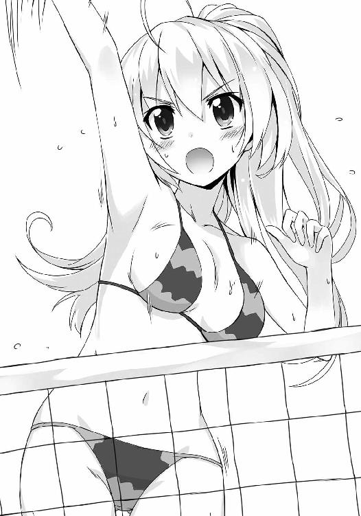

| アイドル●ヴァンパイア(2) (電撃文庫) | |
| 上月 司 | |
| (2015) | |
本書（電子版）に掲載されているコンテンツ（ソフトウェア／プログラム／データ／情報を含む）の著作権およびその他の権利は、すべて株式会社ＫＡＤＯＫＡＷＡおよび正当な権利を有する第三者に帰属しています。
法律の定めがある場合または権利者の明示的な承諾がある場合を除き、これらのコンテンツを複製・転載、改変・編集、翻案・翻訳、放送・出版、公衆送信（送信可能化を含む）・再配信、販売・頒布、貸与等に使用することはできません。
一
山桜奏太にとって、睡眠時間は決して心休まる時間じゃない。元々寝付きが良くてぐっすり眠るタイプだったが、ある時期を境に、寝る時も迂闊に気を抜けなくなったからだ。
それは寝ている間にこっそり布団の中に侵入してくる厄介な人物が原因で、すっかり寝ている間も気を張るという嫌な癖が付いてしまった。そのせいで疲れは取れ難いし六時間以上寝ても寝不足感はあるしで、ここ数年で目つきが悪くなった気がするのはもしかしてこれのせいかとも思う。
ただまあ、それも無駄には終わらないことが多いので、止めるわけにもいかない。
例えば今──誰かが、部屋に入ってくる気配がある。
これだけだと気のせいの可能性も高いが、寝ていても敏感になっている感覚がざわつくので、動きはしないまま意識だけは覚醒していく。勘違いならまたすぐに眠ればいいが、そうでなければ深刻な家族会議に発展する事態が起きかねないし。
かなり前になるけど、疲れて熟睡していたところになんだか妙にくすぐったい感覚があって目を覚ましたら、自分の寝間着が大胆にはだけられていて、しかも寄り添うようにして半裸状態の妹がデジカメを構えて自分撮りをしようとしていたシーンだった時は、たぶん異世界に召喚されて魔王と戦わされる展開に巻き込まれるより衝撃を受けていたと思う。
そんな訳で、奏太が目は閉じたまま意識だけ周囲へと張り巡らせると、掛け布団が持ち上げられる感覚があった。
それと同時に誰かがベッドに腰を下ろして、そのままもそもそと布団の中へと潜り込もうとしてきたところで、
「おし、そこまで............だ？」
布団を持ち上げていた細い手首を摑み、ベッドへと侵入しようとしてきた相手を至近距離から睨み付けた奏太は、そのままの状態で固まってしまった。
てっきり不埒な侵入者は妹の凜々華だと思っていたが──違う。明かりを点けていない真っ暗な中でも、この顔同士が触れてしまいそうな距離で見間違えるはずもない。
じゃあ誰なのかというと......現在、山桜家で暮らしているのは奏太を含めて、四人。両親は海外に赴任中で、祖父は所有しているアパートの管理人の仕事もあってそちらに住んでいるから、やっぱりいない。
つまり奏太と妹の凜々華を除けば、二週間ばかり前に転がり込んできた元王女と騎士メイドの二人が候補に挙がる。海外の雪国育ちで色白なのは二人共一緒だが、体格が違えば髪や目の色も違う。
身長百七十センチちょいの奏太に比べて明らかに小柄で、髪も短い......となると、もう一人しかいない。
こちらが手首を摑んでいる状態なのに目を閉じたままでいる侵入者は、どうやら『騎士兼従者』という無茶な肩書きを持つエリィ＝ローで間違いなさそうだった。
相手は判明したものの、誰か分かったことで奏太がホッとしたかというと、そんなことはちっともない。彼女でも何でもない、ただの同居人のエリィが自分のベッドに潜り込んでくるとか、普通に考えてまず有り得ない事態だ。
見たところエリィは半分寝ている状態だから、これはきっとトイレか何かの後で戻る部屋を間違えたんだろう。他意は無い、はず。
思わぬ役得と喜ぶべきなのかもしれないが、奏太はちっとも喜べない。
これが想いが募って忍び込んできたとかならまた違うけど、確実に事故で、しかもかなり厄介な部類に入る。
他の連中にバレるとお互いにとって良くない結果になるのは間違いないので、奏太は焦燥感に駆られて手首を摑んでいた手を放し、肩を揺さぶって起こそうとした。
「......おいっ、エリィ。起きろ、ここはお前等の部屋じゃ......っ?!」
「ん......ぅ......」
揺らしながら小声で呼びかけていると、うるさそうに微かに声を漏らしたエリィが、どういう訳だか抱き付いて来た。
こちらの胸元に顔を埋めて、しかも足まで絡ませて、完全に抱き枕状態だ。
妹と似たような身長のはずなのに、まるで違う柔らかな感触が下腹部に当たっていて、これが本気でヤバい。寝間着のシャツ越しに『ふにょんっ』と密着している胸が、位置取りがしっくりこないのか何度もくっついたり離れたり、強く押しつけられたりそのまま擦れたりと、もうこれわざとやってるのかって疑いたくなるくらいに奏太を刺激してくる。
もしも日頃からエリィが自分に惚れているんじゃないかと思えるような言動がいくつもあったら、いっそ応じてやるのが男の心意気ってヤツだろうと勝手な解釈をしてしまう場面だが、とても残念なことにそんな素振りは微塵もなかった。そもそも狸寝入りに見えないし。
よって奏太としては理性防壁がガリガリ削られていき本能剝き出しになってしまう前にこの状況から脱却しないといけないが、エリィの抱きつき方が絶妙で、簡単に抜けられない。いつの間にか脇の下から入り込んでいた手がしっかり肩を摑んでいるし、絡んできている足も手が届かず振り解けない。
こちらが寝たままの不十分な体勢とはいえ、流石は騎士を自称するだけあって、鍛えているからかしがみつく力が意外と強い。あんな大剣を持っているだけのことはある。それでこんなに柔らかいって、女の体はどうなっているのか。
ここは一つ、研究ということで自分の目で確かめてみるしか............
「──って、それは駄目だろ！ ヤバい、もう思考がまともに働かなくなって......！」
脱出方法を考えていたつもりがいつの間にやら積極的に攻勢に回る気になっていたことに気付き、奏太は一層の焦燥感に駆られる。身内に抱きつかれてもこんなに動転することはまずないのに、ちょっと他人で感触豊かな美人に無防備に抱きつかれたらここまで動揺するなんて............いや、よくよく考えたらこれだけ素晴らしい条件が揃っていたら、普通はおかしくもなるか。
とはいえ、自己弁護している場合じゃない。
不幸中の幸いで、カーテンの半分開いた窓の向こうに広がる外の景色は暗くて、まだ夜明けにも大分時間はある。他の連中が起きるのはあと数時間後のはずだ。
一刻も早くどうにかしようと、奏太は無理矢理に体を起こして、しがみつくエリィの手をどうにか解くべく苦心しながら、
「ほらっ、起きろって！ 寝惚けるのは自分の部屋に戻ってからにしてくれ！」
「やっ............ぅー......？」
座った体勢になってもしぶとくコアラみたいにしがみついてくるエリィに声をかけつつ、体を揺らす。
これだと流石に熟睡は出来ないようで、だらんと顔を上向かせたエリィは煩わしそうな声を漏らし、顔を顰めてギュッと目を瞑る。
そしてもどかしげに少しずつ瞼が開いていって、覚醒の気配に奏太も胸を撫で下ろし、
「ちょっとカナタ、大変よ！ 目を覚ましたらエリィがどこにも──」
バンッ、と強くドアを開けて入って来たのは、長い金髪をどういうことだか頭の天辺でゴム留めをして噴水みたいな髪型になっている、もう一人の同居人だった。
暗くても鈍く光る紅い瞳のフェリシア＝スノウフィールドは、黒いビスチェにショート丈のペチコートという、ボリューム満点の胸が強調されているだけでなく肩や太腿剝き出しなとんでもない格好で乗り込んできて......そのまま、固まっている。
視線の先は、どう考えても奏太のいるベッドに向いていた。
そして、これはたぶんだが......もしかすると今の体勢は傍から見ると、座っている自分にエリィが枝垂れ掛かるようにして抱きついている風にも、取られてしまいかねないものなのかもしれない。
一方、突然の乱入と声に驚いたのか、とろんとしながらも目を開けたエリィは、
「ふ、ぁ............シア、さま......？」
ちっとも状況を理解していない様子で、主を愛称で呼ぶ。寝惚けていて舌っ足らずな口調なのが、何だか妙に艶っぽい。
勘違い要素がさらに追加されて、一歩部屋に踏み込んだまま硬直していたフェリシアはあからさまに動揺を露わにし、ブンブンと両手を横に振り始めた。
「ちっ、違うのよ?! まさか二人がそんな関係だなんて夢にも思っていなかったから、邪魔する気なんてなくて......！ しかもエリィの方から忍んで行くだなんて......だ、大胆なことをするものね。これも都会に染まったってことなのかしら......」
やっぱりというか、盛大な思い違いをしている。しかも何だか言ってることが田舎のおばちゃんっぽいし。
というか、奏太達の暮らしている神形町はどう考えても染まれる程の都会じゃない。フェリシア達が暮らしていたフロンクルーグ──今はスーベールという国と合併してスーベルフロンという国になっているらしいが、そこと比べたら発展しているのかもしれない。けど、都心がボスキャラクラスの都会度だとしたら、この町は精々が最初の難関で現れるイベント敵くらいの微妙さだし。
突っ込みどころは多々あるが、一番重要なのはこれが『そういう事態』じゃないと理解して貰うことなので、奏太は娘の反抗期に戸惑う若い母親みたいな反応をしているフェリシアにハッキリと言ってやる。
「あのな、お前が何を想像しているかは大体予想出来るが、違うからな？ これはちょっとした過ちというか......」
「あっ、過ち!? これは一夜の過ちで遊びだったっていうの?!」
「まるで違ぇよ！ そうじゃなくて、エリィが間違えてだな......！」
「女のせいにして責任逃れするつもり?! 何よそれ、弁えなさいよ！」
「だから違うっての！ エリィが寝惚けて部屋を間違えて入って来ただけだ！」
「フン、そんなこと起こるわけ........................エリィなら有り得る、わね......」
威勢良く全否定しようとしたフェリシアだが、従者の顔を見て思い直したようだった。ちょいと天然入っててよく迷子とかにもなるから、こういう事故もなくはないと理解してくれたらしい。
......と、その時。
ドアの近くに立つフェリシアの背後に、ぼんやりと白い影が現れた。
「フェリシアさんうるさいです、こんな深夜に何を騒いでいるんですか。しかも兄様の部屋で......まさか夜這いだなんて不埒な真似を企んで......」
着ているのは丈が膝上までの白襦袢だけ、という寝間着にしてもどうかと思う格好で現れたのは、奏太の妹の凜々華だ。向かいが凜々華の部屋だから、騒いでいるのを聞きつけて起きてきたらしい。
自分の妹にしては整いすぎた綺麗な容姿で、小柄で顔も小さいのに目はパッチリと大きく開いている。凜々華はその目で、フェリシア越しに部屋の中を見て、固まっていた。
この状況で妹が来るのは、ちっとも喜ばしくない。兄として妹に変な誤解をされると気まずくなるとかそんな軽い意味じゃなくて、本当に厄介な意味で。
ふわっとした肩に掛かる栗色の髪を両手でクシャッと潰すようにして搔き上げた凜々華は、わなわなと小さな唇を震わせ、
「エリィさんが、兄様と同衾だなんて......油断してました......！」
「いや何でお前が油断とか言い出すんだよ。おかしいだろ」
やっぱりまともな発想をしていなかった妹に呆れていると、凜々華はキッと強くこちらを睨んできて、
「兄様っ！ 留守にしている両親から預かっている方々に手を出すだなんて、人道に悖る行為です！ そんな道を踏み外すような真似なんてせず、やるのなら凜々華にしてくださいっ」
「どう考えてもそれが一番人の道から外れてるだろ......つーか、そもそも手を出してねぇよ！ これは単にエリィが──」
「っ、エリィさんが無理矢理に兄様の貞操を奪いに掛かったということですか......?! 凜々華が何度も失敗しているというのに、どうやって......!?」
「......ちょっとカナタ。この子凄いことを口走っているけど、エリィだけでなく妹にまで魔の手を伸ばしている訳？ もしかして最後には、メインに相応しいあたしを狙っているんじゃないでしょうね!?」
「ただでさえ妹の妄言が酷くて頭痛いっつーのに、お前まで意味不明な被害妄想でキレてんじゃねぇよ！ あとエリィもそろそろ離れろ！」
これだけ混沌とした状況なのにまだ眠そうなエリィが今度は膝の上で丸まるようにして寝ようとし始めたので、奏太は怒鳴ってそれを制する。このメイド騎士、どこまでマイペースなのか。もっとちゃんと空気を読んで欲しい。
こちらの剣幕にも動じていないのか寝惚けているだけなのか、のろのろとベッドの上で座り直したエリィは、まず奏太を、それからドアの近くにいるフェリシアと凜々華を見て......くて、と首を横に倒した。
「ぇ、あ......？............これは............皆様、どうして拙の部屋にいるです......？」
「お前の部屋じゃなくて、ここは俺の部屋な。たぶんそうだろうとは思っていたが、まるで覚えてないか？」
この寝惚けっぷりだ、むしろちゃんと覚えている方がおかしい。
後から来た二人よりも先に、まずはエリィに説明して現状を正しく把握して貰わないと。でないと、ドアの近くで殺気とか嫉妬とかの気配を撒き散らしている二人が暴発しかねない。
小さい頃から祖母と母に剣術を習って、そこらのヤクザや格闘家くらいならビビることなく対応出来る自信のある奏太でも、感情的な異性が相手となれば話は別だ。何も悪いことしていないから謝りはしないが、窓から逃げる可能性は十分に有り得る。
夜明け前に裸足で脱出劇なんてしたくないし、誤解されても困るので、奏太は寝起きの相手にも分かるよう、目の前で頭をふらふらさせている銀髪侍女に丁寧に語りかける。
「俺が寝ていたら、寝惚けたお前がベッドに入って来たんだよ。部屋を間違えたんだと思うが、ちらっとでも心当たりはないか？」
いくら半分寝ていたとしても、まだ五分と経っていない間のことだ。少しくらいは記憶の端に引っかかっていてもいいはず。
そうと期待しての奏太の言葉に、エリィは眠たげに目を擦りながら、
「......はい、です............ただ、うとうとしていたら、誰かに手首を摑まれたような気がするですが......」
その発言は、間違っていない。確かにベッドに潜り込んできたエリィを凜々華と勘違いして、奏太は侵入を阻止しようとして手首を摑んだ。
......ただ、問題があるとしたら。
今のだけ聞いて想像力を働かせると、ちょっと事実とは違う光景が思い浮かんでしまう危険性が大、ってことだ。
嫌な予感がして、奏太がドアの方を見てみると......すっかり暗さに慣れた目が、明らかに頰を引き攣らせているフェリシアの姿を捉えた。
「......つまり、あれね？ エリィが寝惚けてフラフラしていたのをいいことに、カナタが手を引いて、ベッドに連れ込んだってことね......!?」
──ある意味予想通り、思いっきり勘違いされてしまっていた。
ジリ、と躙り寄るように部屋の中に入ってくるフェリシアは笑顔だけど、この状況で笑うってどう考えてもおかしい。明らかに『怒りを通り越して』ってヤツだ。
これは手の届く距離まで来られたら大変なことになる、具体的には一方的な肉弾戦になってしまうと察した奏太は、慌ててフェリシアの方へ制するように手を突き出して、
「違っ、その想像は事実に反している！ 誰かが俺のベッドに潜り込んできたから、それを摑んで止めようとしたらエリィだったってだけだ！」
「そんな馬鹿げた話を信じろっていうの？ 何もしていないのに寝ているベッドに女の子が向こうから入って来るだなんて、そんな都合のいい話がある訳ないじゃない！」
「そうです兄様、この都落ち金髪女の言う通りです！ 欲求不満が過ぎてそんな作り話をするような羽目になるくらいなら、いつでも凜々華がこの身を呈して解消して差し上げます！」
「ここぞとばかりに這い寄って来るな。つーか、よくベッドに侵入して来ようとしているお前が言えたセリフじゃないだろ！」
ハイハイする形で近付いてきた妹に対して奏太は至極真っ当なはずの反論をするが、当の凜々華はしれっとした顔で首を横に振る。
「あれは他人の話です、妹ならば兄妹のスキンシップとしてごく当たり前の行為ですよ。普通のコミュニケーションを許してくれない兄様の方がおかしいと思います」
「俺の知る限り、普通は義務教育を終えた歳の妹が兄の風呂やベッドに忍び込んでくるような真似なんてしねぇよ」
「皆は恥ずかしがって公にしていないだけです。凜々華も外では慎ましやかに、その分家では少しだけ大胆になって兄妹の絆を深めようとしているんです」
「絆を深めるって、そういうのはメシの時の会話とかで十分だろ......」
「全然足りないです！ ただでさえ先日から二人だけの時間が極端に減っている以上、ここはやはり言葉だけでなく唇も交わし、熱烈なボディトークを──」
「ああもうっ、そういう会話は後でしなさいよっ！ 今問題にしているのはあなた達のアブノーマルな関係性じゃなくて、あたしの大事な従者をカナタが毒牙にかけようとしたってことでしょ?!」
大きく右腕を振るって話を戻すフェリシアだが、言い方に悪意がありまくりだ。奏太自身は至ってノーマルで健全だし、エリィに関しても、むしろあんな棚ぼた展開で手を出さなかったことを褒められるべきだと思う。
しかしそんなことは全く伝わっていないフェリシアは眉を怒らせて、紅い瞳で強くこちらを睨み付けると、
「大体ね、カナタはあたしの下僕としての自覚が足りないから、こんな不祥事を起こすのよ！ もっと主人を敬い、尽くす精神を心掛けなさい！」
「だから俺は下僕になんてならねぇよ！ どの身分でんなこと言ってるんだ、お前は!?」
「そんなの、決まってるでしょう？」
そう言って、フェリシアはやたら偉そうに腕組みをする。
窓から入る微かな月光りを浴びて黄金色に長い髪を輝かせ、暗い中でも爛々と光る紅い瞳を細めた彼女は、普通の高校生とは一線を画すオーラがある。そこは流石に奏太も認めざるを得ない。
明らかに異国の血が流れていると分かる容貌もそうだが、フェリシアはただの女子高生じゃない。今は事情があって山桜家に居候の身だが、元々はとんでもない身分だ。
海の向こうから遙々やって来た彼女は、口元に薄らと笑みを湛え──
「今は無き『雪の牢獄』フロンクルーグ王国の元王女にして吸血姫、そして未来のスーパーアイドル、フェリシア＝スノウフィールドよ！ そんなあたしの名誉下僕にしてあげるっていうんだから、光栄に思いなさい？」
......残念なことに。とてもとても、残念なことに。
元は王女なのも、スーパーアイドルを目指しているのも──そして、吸血鬼なのも。
冗談の方がまだマシだけど、これが全部本当のことだった。
◆ ◇
奏太達が住んでいる神形町は、都心から電車で二時間ちょっとの、微妙な地方都市だ。栄えているとは言い難いけど、買い物でそれほど不自由はしないし、隣町には大きな繁華街もあるので遊ぶ場所もさほど困らない。
そして通っている高校はというと、エスカレーター式の私立校で、駅を挟んだ向こう側に校舎がある。大学だけはこの町ではなく離れた所にあるので、ここに通うのは中等部と高等部の生徒だけだ。
山桜家から学校までは、歩いても三十分はかからない。なので基本的には歩きで、急ぎの時だけは自転車で登校していた。
同じ学校に通っているので兄妹二人で登校するのがいつもの光景だったが、そこに二週間前から新たに二人が加わり、今では合計四人。
人数が増えたせいもあって以前に比べると賑やかな登校になっていて、特に今日はいつにも増して口数が多い人物がいた。
「全く、朝から誰かさんが問題を起こしてくれたおかげで寝不足だわ。あたしの白磁の肌に影響があったらどうしてくれるのよ？」
「吸血鬼のくせにまるで太陽の下を歩いて日焼けもしない鉄壁肌だろーが」
「日焼け止めをちゃんと塗ってるし、『異力』さえ使えればそれすら必要ないもの。それでも食事やストレスや生活の乱れがあったら影響は出ないと言い切れないから、こうして怒ってるんじゃない！」
ジロッと紅い瞳で睨んで来るが、そもそも大騒ぎで睡眠不足になってしまったのは話を聞かないお前が悪いんじゃないのかと奏太は言いたい。それを口にするとまた相手のエンジンに火が点きそうだから、言わないでおくけど。
歩いている四人とも新鳴館の制服を着ているが、スラックスを穿いている奏太以外の女子三人はモスグリーンのチェック柄スカートを着用している。ただしその長さはそれぞれで、一番身長の高いフェリシアが最もスカート丈が短い。逆に一番長いのはエリィだ。ただ、エリィの場合はスカート丈より、腰から下げている大剣の方がよっぽど気になる。
ただでさえ手足の長いフェリシアが短めのスカートを穿いて、衣替えも終わったばかりなのに早々にカッターシャツを半袖にしているから、外国人モデルみたいに見えなくもない。一緒に暮らしているし、正体やら性格やらを知っているから見惚れることはないが、それでもふとした時にドキッとしてしまうくらいの破壊力はある。
自分のことを下僕にしたがっている相手に多少なりとも惹かれるっていうのは複雑だけど、健全な男としては、つい美人に目がいくのは仕方ないはず。しかも夏服だと、シャツの下に何やら薄らと透けて見えるものがあり、余計に視線が吸い込まれる率が高くなる。
緩く結んだピンクのネクタイを押し上げる大きな胸といい、日本人とはまた別種の白い肌が眩しく覗く太腿といい、綺麗な顔以外も魅力に溢れているのは認めざるを得ない。
ただしあんまり見てしまうと変態呼ばわりされかねないので、奏太が斜め前を歩くフェリシアをまじまじと注視しないように努めていると......何やら、隣から変な視線が。
気になって横を向くと、そこにはあからさまに不機嫌そうな凜々華の姿があって、じっとりと湿度の高い視線を放ってくれていた。
「......やはり早急に兄様から無駄肉への興味を無くさせる必要がありますね。それと同時に外国産には一切食指が動かなくなるよう、改善も必要です......！」
「お前は朝から意味不明な発言してくれるなよ。ただでさえ寝不足で怠いってのに、頭まで痛くなるだろ」
「兄様がハッキリと意思表示してくれればこんなことは言わないです。ほら、あんな傲慢が受肉したような我が儘な女より、控えめで慎ましくて大和撫子を絵に描いたような凜々華の方が好みだと優しく耳元で囁いてください！」
「どこからそんな異次元と脳が繫がったようなぶっ飛んだセリフが出て来るんだよ。つーか、我が儘度合いだったらお前も負けてないだろ」
「むっ。どこがですか、撤回を求めます。こんなに甲斐甲斐しい妹を摑まえて、あんなファンタジー設定をこじらせた女と同じ扱いだなんて、いくら兄様でも酷いです」
「『アイドル活動をするからマネージャーになれ』って言い出して、俺が断ったのに聞かずに、親と事務所を味方に付けてかなり無理矢理にやらせたのはどこのどいつだ？」
「............んっ......」
三年くらい前にあった実際の出来事を例に出して睨み付けてやるが、これをどう解釈してくれたのか凜々華は目を閉じて唇を突き出して来たので、奏太は妹の顔を平手で押しのけてため息を吐く。
「......俺の妹は、あれか。アホなのか......」
もう引退しているが、これがアイドル活動をしていて、しかも短期間でトップクラスの位置にまで駆け上がっていたっていうのが時々信じられなくなる。まあ二年以上も間近でアイドル活動しているのを見てきたんだから、本当は疑う余地なんて無いはずだが。
それにアイドルになる前も、アイドルをやっていた時期も、凜々華は変わらずこんな調子で少し頭の配線に問題があったから、今更かもだ。
ただ、最近その変な行動の頻度は上がって来ている気がする。
クラスメイトの白和泉響が新体操の練習で道場に顔を出すようになって、さらに異国から来た二人が家に住むようになったのが影響しているのかもしれない。
──フェリシアとエリィが山桜家にやって来たのが二週間前で、それから色々とあった挙げ句に正式に日本で暮らせると決まったのが一週間前のことだ。
併合して元の国は無くなったとはいえ、流石に王女だった人物が他国で暮らすにはそれなりに面倒な手続きがあったらしく、その為に大使館のある都心に滞在し、戻って来てからは疲れが溜まっていたのか熱を出して倒れてしまった。
ようやく体調が戻り、元気になったのが先週の土曜日。なので、フェリシアは転校したばかりで丸々一週間休んでいた。主人が臥せっていた間はエリィも看病で休んでいたから、二人とも今日が久しぶりの登校なのは一緒だ......が。
怒っているっていうのもあってフェリシアがテンション高めなのに比べて、エリィはかなり静かだった。
主人に比べたら大人しいタイプではあるけど、人形みたいに澄ました顔をしている割にミーハーなところがあるというか、感情を隠すのがあまり上手くない印象なので、やや気落ちしているように見えるのはちょっと気になる。
まあ、夜明け前の騒動はエリィが原因だから、それを引きずっているのかもだ。冷静になって考えてみると、目が覚めたら異性と寝ていたって、かなりショックな出来事だし。奏太としてもドキッとはしたが、妹等のおかげで多少の耐性はついているから、今はもう殆ど気にしていない。......まあ、惜しいことしたかなー、とは思わなくもないけど。
......と、奏太がやや邪な考えに囚われかけていると、前を行くフェリシアがターンを決めるようにして振り返った。
「全く、もう。本当なら朝食のタイミングで切り出すつもりだったのに、すっかり段取りが狂っちゃったじゃない」
「あん？ 何のだよ？」
「決まっているでしょう？ 東京に行ったり、昨日と一昨日は買い物したり録り溜めた番組を見るのに忙しかったりして延ばしていたけれど、いよいよ本格的にあたしのアイドルロード驀進計画を発動させるのよ！」
ビシッ、と音が出そうな勢いでこちらを指差してくるが、何だろう、言っている内容が夏休みに宿題を計画だけしてちっともその通りに進められない駄目パターンと、そう変わらない気がする。
そんなことを思っているのが表情に出ていたのか、フェリシアはむっとした様子で奏太を指差し、
「失礼なこと考えていたみたいだけど、そもそもこれはカナタが率先して言い出す予定だったのよ。それをいつまでもまごまごしているから、痺れを切らしてあたしから切り出したんじゃない。反省しなさいよ！」
「言っておくけどお前、発言の殆どが意味不明だからな？ どうして俺がそんなにやる気出して頑張るキャラ設定になってんだよ」
「あら、だってナルミからボディガード兼マネージャーとして使っていいって言われてるもの。こういうのを主導するのって、マネージャーの仕事でしょう？」
ごく当然のことを話すようにフェリシアは歩きながら言うが、奏太からすれば『こいつ何言ってるんだろう』祭りの第二弾だ。
わざわざ奏太達の母親の名前を出してきたが、実際に話して聞いた内容とは食い違う。
「ボディガードの件は、確かに言ってたのを聞いたけどな。マネージャーまでやれなんて言ってないだろーが」
「あら、カナタってば言われたことしか出来ないの？ それにこれは、フロンクルーグを──今はもうスーベルフロンになっちゃったけれど、国を出る前にナルミから直接言われたことなのよ？」
「......あの母親が、なんて言ったんだよ？」
嫌な予感しかしないがそれでも訊くと、フェリシアはピンと立てた人差し指をくるくる回しながら、
「『うちの息子、好きに使っていいから』って。ほら、だからマネージャーの仕事をして貰うのだって有りでしょう？」
「............どちらかというと、あの母親の無責任発言が無しだな......」
安請け合いも程々にして欲しい。それも自分がやるんじゃなくて息子を差し出すとか、あの親はどういう神経をしているのか。......たぶん、何も考えずにさらっと言ったんだろうけど。
と、何故か傍にいた凜々華がハッとした様子になったので、こいつはこいつでどうしたんだと気にしてみると、
「......なんというワイルドカード......！ これは是非とも凜々華も同じ言質を母様から頂いて、兄様を手中に......！」
「下らない企みしてんじゃねぇ！ ったく......大体、マネージャーはエリィに任せるって前に言ってなかったか？」
「ええ、勿論エリィにはその手の仕事も請け負って貰うわ。でも、日本でアイドルとして成功する為に必要な手順は、実際に日本で生まれ育って業界も見ているカナタに任せる方が適切じゃない？」
「............」
この元王女様にしては珍しく的を射た意見で、奏太も反論が出来ない。調べる努力を放棄していると難癖つけることも出来るが、そもそも日本に来て間もない相手で、おまけにこの二週間で分かったこととして、ろくに携帯もパソコンも使いこなせない。祖国は文化的にやや遅れ気味の貧乏国家だと前に言っていたし、そうなると情報収集も難しいだろう。
なので奏太は背負うようにして持っていた竹刀袋を持ち替え、中に入っている木刀の柄尻部分でガリガリと後頭部を搔き、諦めの吐息を吐いた。
──まあ、あれだ。あんな風に言われたり押しつけられたりしたら反抗したくなるけど、フェリシアがアイドルになるのを手伝ってやろうと、もう決めている。
少なくとも本人が無理だと諦めるまではサポートしてやるつもりだったし、これ以上ごねるとただの天の邪鬼になりかねない。
どちらかというと小さい頃から磨いてきた剣の腕や、祖先から受け継いだ鴉天狗の神通力で身辺警護する方が性に合っているが、まず必要なのはアイドルになる為の知識や人脈になるだろうから、そっちで助けてやるのが先になるみたいだ。
だから奏太はすぐに答えを欲しがっている風なフェリシアに向かって首を横に振り、
「......そろそろ駅に近いから人通りも増えるし、続きは放課後な。どうせ学校にいる間は具体的に動くことなんて出来ないんだし」
「そう......分かったわ、じゃあ放課後ね！ エリィ、作戦会議が長引いたら夕方の時代劇が見られないかもしれないけど、我慢してくれる？」
「............はい、です」
浮かれたように問いかける主人の言葉に、エリィは鈍い返事をする。奏太はそれを、もしかして不満だからかと推測したが、すぐにそれは違うっぽいなと考え直す。
返事をする時に顔を上げたが、どこか元気がない様子で、数歩といかない内に俯いてしまう姿が見えた。
普段は──まあここ最近はこうして一緒に出掛ける時間が無かったから、学校に通い出してからの数日だけの記憶になってしまうけど、大体はもっと顔を上げて背筋を伸ばし、騎士というのを意識してか周囲に注意を払っているような感じだった。
キリッとしていて小柄な体格の割に堂々として見えたのに、今の様子じゃバイト先で年下の学生に叱られてヘコんでいる中年男性くらいの覇気しかない。腰に帯びた大剣があるから存在感だけは変わらずあるけど、それも安い演劇の小道具に見えるし。
どうしたんだろうかと不思議に思う奏太だったが、フェリシアはあまり気にしていないようで、軽い足取りでどんどん進んで行く。
そんな様子を見て、奏太は『まあいいか』と思い、エリィにどうかしたのかと訊ねるのを止めることにした。国からずっと一緒にいるあの吸血王女様が放って置くなら、付き合いの浅い自分がわざわざ訊くこともないだろう。
朝の失態を気にしているのかもしれないし、だとしたら訊けば藪蛇になるだけだ。
今考えるべきは、放課後に話し合うことになったアイドルになる為の具体的なプランニングのこと、それと──
「......凜々華、さっきから腕に絡みつくの止めろ。邪魔で歩き難い」
「またまた兄様、もっと素直になってください。こんなに綺麗で可愛い女の子が密着しているんですから、ここが公衆の面前だということも忘れて襲いかかって来てもいいんですよ？ ほら、素敵な感触が理性も倫理観も溶かしているでしょう？」
「感触っつーか、内肘に肋骨がゴリゴリ当たって痛いし、暑苦しい」
素直に本音を言ったところ、凜々華が肘で脇腹をグリグリとねじ込む無言の抗議をしてくる。武道をかじってる人間がやることなので、本気で痛い。
人通りの増えた駅前まで来たっていうのにベタついてくる妹をどうにかする方が今の奏太にとっては深刻で、かなり切実な問題だった。
──ちなみに、登校して教室に着いた後の話だが。
この様子を見ていたクラスメイトが一足先に教室に行き、『山桜奏太が同居している美人な留学生二人を侍らすだけでなく、元アイドルの妹とイチャついていた』と悪意のある解釈を他のクラスメイトに伝えていた、らしい。
その結果、奏太は一歩教室に足を踏み入れた瞬間、嫉妬に駆られたクラスメイトの男女数名に襲いかかられるという、またも朝から酷く厄介な騒動に巻き込まれることになった。
◆ ◇
休日明けのせいかやたらと長く感じる月曜日の授業が全て終わり、やっとで放課後になった時には、奏太はさっさと家に帰ってリビングのソファーにごろ寝してだらだら過ごしたい気分になっていた。
しかしそれは叶わず、意気揚々と歩くフェリシアに見えない鎖で引きずられているような気持ちで付いて行き、本校舎の階段を上がっていき屋上へと出る。
どうしてわざわざ屋上なのかというと、一つはフェリシアが『まだ行ったことがないわ！』と言ったので。新鳴館は中等部の校舎は屋上が立ち入り禁止になっているが、高等部の方は昼休みと放課後の出入りが自由になっている。
屋上には園芸部が管理している花壇や、料理部と食育研究会が共同管理しているミニ農園があって、コンクリートより緑と土の割合が多い。
ただ、陽当たりの悪い北側には何も植えられていなくてベンチも設置してあるので、奏太達はそこに集まることにした。
ちなみに屋上にしたもう一つの理由がこれで──予想外に人数が増えたからだ。
「それで、フェリシアさんがどうやってアイドルになるか、だっけ？ うっちー、出番が来たんじゃない？」
「う、うん。でも、僕なんかが意見言うなんて、おこがましくないかな......？」
「確かにうっちーはどうしようもない変態で普段なら誰も意見なんて訊きたいと思わないだろうけど、適材適所だからね。むしろここで意見を言わないなら、そこの花壇に潜んでる青虫以下の役立たずだよ？」
「そっ、そんな............ありがとうございますぅ......！」
スカート姿の友人からにこやかに貶され、何故か礼を言いながら土下座している変態という構図を目の当たりにし、奏太は『こいつら呼ぶんじゃなかった』と本格的に後悔する。
正確に言えば声を掛けたのは、そこで土下座している変態の内村慎三郎にだけだ。アイドルに詳しくて情報サイトの会員もやっているはずの慎三郎なら、何か良い意見をくれたり間違いを正してくれたりするかもと思った訳だが、早まったかもしれない。
小柄で童顔で美少年でと、恵まれたアドバンテージを全て帳消しにするドＭっぷりでクラスのみならず中等部にまでその噂を轟かせている慎三郎だが、かなり役に立つし、悪いヤツじゃない。......というか、これで性格にもうちょい難があったら、縋りたくなるくらい有能でも関わりたくないっていう、ギリギリの存在だし。
一方、そんな慎三郎をからかうように弄っていたのは、同じく奏太のクラスメイトで友人の久恩慈学で......薄手のベストにスカートという格好だけど、これでも男だ。女顔で、パッと見だと完全に女子に見えるけど、男。しかも別に同性愛者とか性同一性障害とかじゃなくて、単に女装が好きだからしているだけという、ある意味では慎三郎以上に性質が悪い。双子の妹と制服交換をしていて、また妹の方も男装が似合うから、初見で正しく兄妹の性別関係を見破られるヤツは殆どいないと思う。
そんな面倒な男二人を、さっきから困った風に見ている長身の女生徒もクラスメイトで、新体操部に所属している白和泉響だ。長い黒髪を三つ編みにして、綺麗だけど穏和な印象が濃い顔立ちで、性格だって優しくて気が利く。さらに男子の視線を釘付けにする自己主張の激しい大きな胸の持ち主と、なんかもうパーフェクトだ。外国産のフェリシアにスタイルで勝っているって、かなり凄いと思うし。
この三人も作戦会議に加わってくれることになっていて、響は部活にも出ないといけないので、屋上という近場で話し合う流れになった訳だ。
ただ、響はやや戸惑った様子で奏太の横に来て、小さな声でこそっと話しかけてくる。
「あの......わたし、場違いじゃないかな？ いてもあまり役に立てないと思うけど......」
「悪い、長くはかからないからいてくれ。フェリシアに女側からの意見を言えるヤツがいないし、普通の感想とかでいいから白和泉が協力してくれると助かるんだ」
「あっ、あの、別に嫌とかじゃないから！ だからあの、頭下げないで！」
手を合わせ頭を下げて頼み込む奏太に、響が見事に慌てふためく。奇人変人の集いみたいになっているから、こういう普通の反応が凄くホッとする。
......と、奏太が一時の癒しを嚙み締めていると、この場の主役になるフェリシアが不満顔で訊ねてきた。
「ちょっとカナタ、リリカの姿が見当たらないわよ。あの子はどこに行ったの？」
これはまあ、当然の疑問だと思う。慎三郎よりもずっとこの場にいるべき存在がいないんだから、そりゃあ気になるだろう。
ただ、奏太としてはあまり積極的になれない話題で、やや口が重くなりつつ答える。
「......あいつは、帰った」
「えっ？ どうしてよ、何か急用でもあるの？」
「......スーパーで、夕方からのタイムセールで豚肉と合い挽き肉が安いって」
「........................」
無言のままフェリシアの表情が『はい？ その面白くない冗談は何よ？』って感じのものから『え？ まさか本当なわけ？』に変わっていくのを、奏太は物凄く気まずい思いをしながら見届け、重々しく頷く。
すると当然のことながらフェリシアが眉を怒らせてこちらへと詰め寄って、頭突きでもしてくるのかって思うような勢いで正面から顔を近付けてきた。
「ちょっと、どういうことなの?! 作戦会議をするって言っておいたでしょ!?」
「......まあ、お前の剣幕も分からなくもないが、こればっかりは俺としても凜々華を責められないからなぁ」
「それ、どういう意味よ？」
「俺は親から言われたってのもあるから協力するのは吝かじゃないが、凜々華が協力するなんて一言も言ってないだろ？ こないだは国に連れ戻されるかって瀬戸際だから、俺からも頼んでやったけど」
こういう協力はあくまでも善意で、自発的にするものだろう。もう切羽詰まった事態じゃないんだから尚更だ。
正論なのは間違いない......が、やっぱり納得はいかないようで、顔を引いてはくれたものの睨みを利かしたままフェリシアは言う。
「そうだとしても、手伝ってくれたっていいじゃない。リリカはあたしがアイドルになるのに反対なの？ そういえば前に、『スーパーアイドルになるのなんて無理です』って宣言したこともあったわよね？」
「あれはまあ、勢いって部分が強いだろうが......まあ、他のことならともかく、アイドル関係となると積極的には関わらないだろうな。まだ引退してそう経ってないし」
別にアイドルに嫌気が差して辞めたって訳じゃないが、今のところ復帰するつもりがない凜々華としては、一種のけじめとして関わらないんだろうなというのが、兄である奏太の推測だった。
なのでこの件に関しては妹の気持ちを尊重することにし、説得するのはフェリシアの方にしておく。
「凜々華も別に、フェリシアがアイドルをやるってこと自体には反対してないだろ。あいつの代わり......っていうのとは大分違うが、知識なら慎三郎だって引けを取らないというか、むしろこいつの方が詳しいかもしれないぞ」
「やっ、山桜くん、それは言い過ぎだよっ。僕なんかが凜々華様の代役だなんて恐れ多いし、凜々華様の爪の垢でも煎じて飲み干したいとかむしろストッキングの上からでいいから舐めさせて欲しいというか──ぁぼぶっ!?」
「......ねぇ、大事な代わりが派手に蹴り飛ばされたわよ？ というか、呼んだあなたが蹴ってどうするのよ」
フェリシアが呆れた口調で言うけど、そこにこちらを責める意図があまり感じられないのは、たぶん『まあ蹴られても仕方ないか』と思ってくれているからに違いない。それに慎三郎も、蹴られながら嬉しそうな顔になってたし。わざと狙ってあんな気持ち悪い発言をしていた説が濃厚だ。
やれやれとでも言いたげにフェリシアは肩を竦め、それから改めて奏太を見る。
「まあいいわ、リリカの助けがなくったって、手段さえ分かればアイドルへの道は開けたも同然よ！ そうよね、エリィ？」
「はいです。シア様なら一人でも大丈夫ですし、カナタ様もいるですから」
「カナタがどれだけ役に立つかは分からないけれど......それは今から、あなた自身が証明してくれるのよね？」
どこか挑発的な物言いに、奏太は渋々ながら頷く。上手く使われている気がするが、乗せられたって程でもない。妹の分まで......なんて殊勝なつもりはないけど、多少の面倒ごとでも付き合うつもりではいる。
だからまず、この世間知らずな元王女で吸血鬼の同居人をアイドルとしてのスタート地点に立たせる為に必要なことを教えないと。
「んじゃ、説明するから適当に座れ。うっちーは適当に補足説明してってくれな？」
「う、うん。出しゃばりすぎないよう頑張るね」
蹴りのダメージはもうないらしく、慎三郎は学の横のベンチに座る。男同士なんだからもっと詰めて座ればいいのに、微妙な距離を開けて。しかも顔も少しだけ赤くなってるし。女装した女顔の男相手にときめいてどうするんだか。
二人の隣のベンチに響が腰掛け、その隣にフェリシアが座って優雅に足を組む。エリィはいつも家でもしている通り、座らず主人の後ろに付き添う形だ。
ベンチは横並びなので、話しやすさも考慮して奏太は皆が座るベンチの向かいにしゃがみ込み、メインでやり取りをするフェリシアへと体を向けて話し始める。
「とりあえず、アイドルになる方法だけどな。これがたくさんあるんだが......念の為に訊くが、お前がなりたいアイドルって、テレビに出るようなヤツか？」
「ええ、勿論。というか、それ以外に何があるって言うのよ？」
「普通ならそう思うんだろうが、これが色々あるんだよ。うっちー、適当に挙げてくれ」
ここはやはり詳しい人間に頼むべきだろうと奏太がパスを出すと、喜色ばんだ表情で慎三郎が立ち上がり、
「まずは正統派の歌手系アイドルだね！ それからお笑い系の番組に良く出るバラエティアイドルにスポーツ系アイドルと多岐に渡るけど、この辺りが事務所と契約している所謂『アイドル』だよ！ 他には芸能事務所とは契約していないネットアイドルに、店舗のお抱えの所属アイドル、どこにも属さず地道にライブやイベントを開催しているアイドルもいて、この辺りは全然売れて無くて露出の殆ど無いアイドルと纏めて『地下アイドル』に括られることが多いかな！ それからそれから、中にはちょっとエッチなお店に入って──ぶぎゃん!?」
「よしうっちー、そこまでで十分だ」
持ってきていた竹刀袋に入った木刀でやんわり小突くことで暴走を阻止。額にぶち込んだからそのままベンチの後ろに倒れ込んだけど、そこまで力は入れてなかったから、あれはより痛くする為の自己演出だろう。己を傷つけるのに貪欲すぎる。
倒れて身悶える慎三郎を、唯一響だけが心配そうに見つめているけど、ここを構うといつまで経っても帰れなくなりそうなので、奏太は放置を決め込んで続けることにした。
「要は、あれだ。最近だと芸能事務所に入らなくてもアイドルを名乗ることは出来るんだよ。尤も、楽曲提供して貰うとかテレビに出るとか、大きな会場でライブをするとかそういうのは厳しくなるけどな」
「それじゃ駄目よ。あたしは多くの人──何万、何十万という人達に覚えて貰うだけじゃなくて、ファンにするつもりなのよ？ 地道にアイドル活動をしていくのが悪いとは言わないし否定する気もないけれど、険しくてもあたしはメジャーラインで行くわ」
そんなことを堂々と言い切るんだから、この元王女様は大したものだと思う。
ただ、奏太は知っている。フェリシアが膨大な人数のファンを求めるのは、吸血鬼としての野望の為だということを。
人の好意を集めることが吸血鬼にとっては力になり、『異力』という特別な能力を使うことが出来る。それも十万人以上の大人数から集めると、『絶世境域』とかいう周囲にも影響を与える能力を使えるようになるのだとか。
フェリシアはその力とアイドルとしての求心力で、新しい自分の国を造るつもり......らしい。とんでも話だけど、本人がそう主張しているんだから、奏太にはどうしようもない。
その新国家造りには一切興味ないが、アイドルとしてやっていく手伝いをしてやろうと決めてしまった以上、本人の意向はある程度汲むしかない。かなり無理があってもだ。
なので奏太はしゃがんだまま片手を顔の辺りまで上げて、指を三本立てた。
「んじゃ、芸能事務所と契約してそこのアイドルになるとして、だ。契約まで漕ぎ着けるには、大体三パターンの方法がある」
「あら、そんなにあるの？ 選びたい放題じゃない」
「たぶん、あんまり簡単な話じゃないと思いますけど......」
遠慮がちに響が言うが、それが正しい。まあ、すぐに分かるだろうから敢えて釘は刺さず、そのまま説明に入る。
「一つは、事務所が単独でやってたり企画として共同でやったりしている、オーディションを受けて合格するってパターンだな。特に大きな企画だと受かった後の待遇もある程度以上保証されているから、これが黄金ルートだ」
「なら、それしかないじゃない！ 決まったわね！」
「いや決まらねぇよ。問題がいくつもあるっての」
「まず、オーディションの募集がないと話にならないもんねぇ。都合良くあればいいけど、そう上手くいかないんじゃないかな。どうなの、うっちー？」
足をぷらぷらさせながら訊ねる学に、ベンチに座り直した慎三郎は申し訳なさそうに首を横に振る。
「大きいのはしばらくない、かな......その、規模が大きいと募集期間も長くなるけど、今は何もないし......ご、ごめんね。好きなだけ僕のことを詰ったり殴ったり唾を吐きかけたりしていいから......」
「だからやらねぇって。つーかお前、謝るフリして自分がして欲しいこと並べてんなよ」
謝罪の必要がない上に期待に満ちた目を隠しきれずにいる慎三郎を放置して、奏太はさっさと話を続ける。
「んで、二つ目な。ある程度大きな事務所は養成所を持っているから、それに入るってパターンだ。初めは研究生みたいな扱いで、運が良ければ事務所に来る仕事を回して貰えるかもしれないし、そのまま所属出来る可能性もそこそこあるな」
「ふぅん......いいじゃない。レッスンを受けながらアイドル活動していくってことでしょ？」
「まあ、そうなんだがな。それだけに、タダって訳にはいかない。初期費用と、事務所に依っては月々の受講料が──」
「それってどれくらいなの？」
「ピンキリだと思うが、安くはないな。うっちー、分かるか？」
「え、と......塾や予備校くらい、かな。期待度が高いと、ある程度は減額して貰えるところがあるみたい、だけど......」
おどおどしながら慎三郎が答えると、響と学がほぼ同時に驚きの声を漏らす。
「やっぱり、それくらいするんだ......わたしが通おうと思ったダンススクールも結構な料金だったし......」
「たぶん、ボクが月々に使っている洋服と化粧品の代金分くらいは掛かるんだろうね。芸能人になるのも安くない、ってことかな」
女の格好をしているとはいえ、同い年の男が化粧品を買う話をしているってどうなのか。これっぽっちも共感出来なくて困る。
突っ込みづらい学の言葉に奏太が口を閉ざしていると、フェリシアが腕組みしたまま肩を竦める姿が見えて、
「じゃ、そのプランは却下ね。次にいって頂戴」
「......いいのか？ 養成所に入ると、ちょっと時間は掛かってもお前なら確実に契約までいけると思うぞ？」
「な、何よ急に、そんな褒めるようなことを言って......らしくないわよ！ そんな安い言葉であたしが喜ぶとでも思ってる訳!?」
そんな意図は全くないし、ちょっと頰が緩んでいるように見えるのは果たして気のせいなのかどうなのか。
そこに触れるとややこしい話になる気もするので、奏太はスルーを決め込み質問する。
「で、何が気に入らなかったんだ？ 時間が掛かるってところか？」
「それもあるわね。でも一番の問題は、お金が掛かるって方よ。だってあたし、お金なんて持ってないもの」
「あー......」
日本滞在が正式に認められた今でも、基本的にフェリシア達の滞在費は奏太達の両親が出している。
いくらかスーベルフロンも出すという話になっているらしいが、どうやら今日明日にとはいかないようで、いつからになるか、どれだけの額になるかはまるで分かっていない。日本政府も、別に亡命してきた訳じゃないし、下手に手を出すとややこしい問題になりかねないので、黙認のスタンスだとか。
そんな状況で、決して安くはない金銭を使えない、ってことらしい。
「俺が言うとアレだが、うちの財布事情なら気にしなくていいぞ？ あの親のことだから、お前等をうちに置くって決めた時点で、ある程度の出費は覚悟してるだろうし」
「どうしても必要、っていうのならその言葉に甘えて、出世払いで立て替えてもらうわよ。でも、わざわざお金を使わなくても、他に手段はあるんでしょう？ なら必要ないわ」
「これが一番簡単なルートだとしてもか？」
「ええ。ちょっとくらい難易度が変わったところで大差ないわ。あたしなら余裕よ！」
自信満々にハッキリと言い切ったフェリシアに、学が口笛を吹くような真似をし、響と慎三郎は完全に横を向いて金髪のクラスメイトに見惚れている。それはエリィも一緒だし、奏太ですら思わず数秒見入ってしまった。
こいつのこういうところは素直に格好いいと、奏太は思う。だからこそ協力してやろうって気にもなる。
ただ......こんな空気で、三つ目のパターンを言わなきゃいけないのは、ちょっと嫌だが。
「最後の契約パターンだが......まあ、あれだ。スカウトされるってヤツだな」
「えっ？ それ、前にあたしが言わなかった？」
「狙ってやるもんじゃないが、たまにあるんだよ。ただ、アイドルっていうよりはモデルとかタレントとか、そっち系の事務所がよくやってるから、微妙に路線は外れる可能性があるな。あと、遠征しないといけなくなる」
奏太達が住む神形町はお世辞にも栄えているとは言えないので、スカウトがうろついている都心まで行かないといけない。電車で、上手いこと急行に乗ったとして片道二時間ちょいで、結構かかる。
そこまでしても都合良くスカウトされる保証は微塵もないし、運良くスカウトされたところでそこがアイドル関係に手を広げている事務所とは、そして扱いのいい事務所とも限らない。
その上、スカウトなんかよりナンパの方が多いだろうし、長期戦になれば移動する電車代も、滞在費も掛かる。なのに成果は上がらない、なんてことは普通に有り得ることだ。
確実性が低い上に、あまり期待も出来ない。ただ芸能界入りするだけっていうなら、フェリシアの容姿を考えればこのプランでも数日中にどうにか出来そうな気もするが、アイドル路線だと厳しいはず。
それはフェリシアも分かったようで、眉根を寄せ口元に軽く握った拳を当てて、
「......ちょっと、今のが最後？ 三つも挙げておいて、すぐにアイドルになれるプランは一つもないの？」
「だからそう簡単な話じゃねぇって白和泉も言ってたろ？ 養成所プラン以外だと、運が良ければ半年くらい掛ければどうにかなるか......ってとこだな」
それもかなり甘めの設定だが、フェリシアなら十分に可能性はある。
ただまあ、本人ご希望の今すぐどうこうってのは、どれを選んでも無理だ。
唇を尖らせたフェリシアは腕を組み、不満をありありと浮かべた表情で奏太を見てくる。そんな顔をされても、こっちは悪くないってのに。
「半年なんて長すぎるわ。出来れば明日にでも、最大限に譲歩して一ヶ月以内には契約まで漕ぎ着けたいの」
「無茶言うなって。ネットで顔出ししつつ投稿動画とか上げて注目されるって手もあるが、それにしたってわざわざ大手の事務所が声を掛けてくることはまず無いし、それならいっそ素人も取り上げてくれる番組で面白外人枠で出るのを狙う方がマシだ」
「あの......それって、イロモノ扱いなんじゃ......」
響が的確な突っ込みをしてくるが、奏太は敢えて聞こえない振りをする。というか、実際に元王女で吸血鬼なんてイロモノだし。表に出す訳にはいかないから言わないけど。
ともあれ、
「養成所を外すっていうなら、オーディションの募集待ちかスカウト待ちになるぞ。どうするんだ？」
「......他にないの、他の手段はっ！ このままだとあたし、土日は電車に揺られて、繁華街を行ったり来たりするだけの存在になっちゃうじゃない！」
「あ......スカウトパターンを狙うのね」
「そ、それなら、土日だけ都内にある芸能関係者がよく出没するお店で、働くっていうのもあり、かも......ちょっと衣装が露出多めだけど、健全なお店だよ......!?」
慎三郎が新たな可能性を呈示するけど、本当に健全な店なのかと問い詰めたい。その衣装を着込んだところを想像したのか、興奮気味に鼻をピクつかせているし。
そしてもう一人のクラスメイト、スカートを穿いた足をパタパタさせた学はというと......何故か、フェリシアではなくこちらを見ていた。
「......なんだよ？」
「いや、奏太が勿体振っているのか素で忘れているのか、どっちだろうと思って。まだとっておきの方法、言ってないからさ」
「とっておき!? カナタ、そんなの隠してたの?!」
ベンチを倒しそうな勢いで立ち上がったフェリシアが誤解をふんだんに含んだ発言をしてくれた。一方で学が僅かに舌を出すのが見えて、『やっちゃった』みたいな顔をしていて、ちょっと殴りたい。あれは絶対、こうなると分かっててわざと言ったはずだ。
近い内に何らかの形で仕返しするとして、問題は期待に目を輝かせているフェリシアだ。大がかりなマジックショーの開演を今か今かと待ち侘びる子供みたいにそわそわしている。ただしこの元王女様はそこらのちびっ子と違って吸血鬼なので、あまり焦らしたり期待を裏切ったりすると、反動でどんな暴挙に及ぶか分からない。
仕方ない......と諦めた奏太は、この場では言うつもりのなかったもう一つのプランを吐くことにした。正直、ちっとも気乗りはしないが。
「......あれだ。知り合いの伝手を使って、直接事務所と交渉する、って手もなくはない」
「何よそれ?! そんなこと出来るの？」
「......まあ、事務所の人に会って貰うところくらいまではいけると思うぞ」
「そこから先はあたしの魅力でどうにかすればいいってことね......！」
胸に当てた手をぐっと握り、喜びを露わにするフェリシアだが、ちょっと気が早すぎると思う。活路が見えたから分からなくもないけど。
「知り合いって......や、山桜くん、もしかして凜々華様に......？」
「そうよ、リリカがいるわ！ リリカは引退したって言ってたけど、前に所属していた事務所を紹介して貰えばいいんじゃないの!?」
さも名案と言わんばかりに叫ぶフェリシアだが、奏太は余計に気が重くなる。
仕方ないから制服のポケットから携帯電話を取り出しつつ、紅い瞳をキラキラさせてこちらを見下ろす吸血鬼さんに、先に釘を刺しておくことにした。
「お前等がそう言うなら凜々華に訊いてみるが......あんまり期待はするなよ？」
「大丈夫よ、だって元アイドルなんでしょう？ あたしは良く知らないから生意気で発育不良な部分ばっかり目がいくけれど、世間一般的には結構な人気だったらしいじゃない」
お気楽発言をするフェリシアだが、それに奏太が反応するのよりも先に、
「──だった、じゃないよ！ 凜々華様は今だって凄い人気だよ！」
変態だけど基本的には大人しい慎三郎が目をギラつかせ、立ち上がると共に烈火の勢いで捲し立てる。
「今と同じく熱狂的で今よりもずっと混沌としていたアイドル界に鮮烈なデビューをして、すぐに数多くのテレビ番組に引っ張りだこになって、デビュー曲が昨今では異例の五週連続チャート一位に輝いたスーパーアイドルだよ?! 今でもカラオケでは毎月必ずランキングで十位以内に入っているし、一冊だけ出した写真集はまだ増刷がかかり続けてるっていうし、春に発売された引退ライブのＤＶＤは映画も含めて今年最大の販売数を誇ってぅぷぎゅっ!?」
興奮しながら早口で喋り、途中から顔を赤くしてフェリシアの方へと詰め寄った慎三郎だが、エリィに顔面を大剣で叩かれ派手に倒れ落ちた。鞘に入ったままの峰打ちだけど、あれは痛い。下手すりゃ鼻骨が折れる。
主人の前に回り込み暴挙に及んだエリィは無表情気味な顔つきをやや険しくしていたが、すぐにハッとした様子になり、
「......失礼したです。シア様の身体及び精神に危害が加えられそうな気がしたですから、つい迎撃を」
「あー......まあ、うっちーだからいいけどよ。他のヤツにはやるなよ」
「......山桜くん、それでいいの......？」
「白和泉は心配しすぎだ。見ろ、あのうっちーの姿を。痛みに震えつつエリィの足を下から見上げて興奮してるだけだから、大丈夫だ」
「人としてはアウトにも程があるけどねぇ」
慎三郎という生き物にすっかり慣れ親しんだ学みたいに、二学期には響もあんな気楽な対応になっていると思う。少なくとも奏太は一ヶ月で慣れたし。
一方、経験値が足りないフェリシアはというと、もっと気になることがあるせいか屋上で悶えている変態には目もくれず、視線は奏太にロックオンされたままだ。
次の言葉がこなくても、こうも鼻息荒く見下ろされていれば、何が言いたいかなんて一発で分かる。
なので奏太は右手に握った携帯電話を軽く振ってアピールしてから、
「一応、今の寸劇の間に凜々華にメールはしたけどな。さっきも言った通り、あんまり期待はしないでおけよ？」
「あら、どうして？ ウッチーの熱弁からすると、リリカの影響力は今でもなかなかのものなんじゃないの？」
「それはそうなんだが、問題は──っと、もう返信してきたか」
マナーモードにしている携帯が震え、着信を伝えてくれる。メールしてからまだ一分ちょいしか経ってないが、日頃から凜々華は何も無ければ三分以内に返信してくるので、特に驚きはしない。
ちなみに奏太が送った内容は『フェリシアにお前の所属していた事務所を紹介してやれないか、って話になっているんだが、どうだ？』という、本文のみのストレートなもの。
それに対して凜々華が返してきたメールの内容は──
「どうなの、ちょっと見せてっ..............................え？ 何なの、これ？」
「どれどれ、ボクにも見せて。ええと──『合い挽き肉が安かったので、今日の夕飯はハンバーグに小エビのサラダ、デザートにとっても甘くて美味しい凜々華を用意します。兄様、残さず食べてくださいね』、って............あるけど......？」
珍しく学が戸惑い気味に語尾を濁らせる。兄としては妹のアレな部分を声に出して周りに伝えて欲しくはなかったが、もう今更感もあるので、そこは責めない。
......というか、この短時間で返すには長文過ぎる。内容も含めて、妹とはいえ引かざるを得ないレベルだ。
そしてフェリシアはというと、明らかに怒った様子で奏太を睨み付けてきた。
「ちょっと、カナタ?! どうして夕飯の内容が送られてきてるのよ!? それとあたしはハンバーグならチーズも欲しいわ、チーズも！」
「拙はパイナップル乗せを希望するです。それとコーンスープも付けて欲しいです！」
「お前等も夕飯に話題シフトしてるじゃねぇか......というか、俺はちゃんと事務所の件について送ったぞ」
噓じゃない証拠に送信した文面も見せると、フェリシアは眉を顰めて小さく口から唸り声を漏らす。
「うぅん、それならどうしてこんな......ひょっとして一つ前のメールの返信を今しちゃったとか、そういうことなんじゃないの？」
「いや、それはない。そもそも夕飯が何かなんて訊いてないし。メールじゃなくて口頭でも言ってない」
挙げられた可能性を否定したところで、奏太は手に持っている木刀の柄尻で軽く首筋を搔く。どうしてあんなメールが来たのか理解しているが、だからこそやや伝えづらい。
でもまあ、言わないままで済む話じゃないし、本人の口からだと捻くれた回答が出そうなので、やっぱり兄である自分が言うしかなさそうだ。
観念した奏太は小さくため息を吐き......ちょっと気まずいが、フェリシアに説明することにした。他の連中にも聞かせた方がいいかもだし。
「恐らくだけど、凜々華は事務所を紹介する気が無いって言いたいんだろ」
「ちょっと、どうして?! 新たなスターを誕生させたくないが為の嫌がらせなの!?」
凄まじい自信を窺わせるセリフがきたが、奏太は軽く首を横に振って返す。
「そんなんじゃなくてだな......ほら、あいつ引退したばっかだろ？ で、事務所に紹介ってなると、当然あいつから電話なり会いに行くなりしないと駄目だろ？」
「ん......まあ、そうなるでしょうね」
「最終的には円満にいったけど、結構強引に引退した手前、事務所には連絡しづらいんだよ。絶対に復帰を懇願されるしな」
「ぼ、僕も噂で聞いたんだけど、凜々華様が引退宣言をしてから、事務所には撤回を嘆願する電話やメール、署名が押し寄せて大変なことになったって......引退後も、復帰を希望する人達からのメールが何万通も来てるって」
「うっちー、流石だね。アイドル通とはいえ、良くそんなことまで知ってるなぁ」
「うん............その、僕も三百通くらいメールしたし......」
ただの噂じゃなくて、実行した一員がここにいた。ただまあ、慎三郎はデビュー直後の凜々華を追って転校してきたような奴だから、今更驚きはしない。ドン引きはするけど。
奏太は当時の現場を知っているが、慎三郎の言葉は大袈裟じゃない。事務所も通常業務に差し障りがあるからと専用の電話回線とメールアドレスを設けて、さらに対応する為の人員を三人も雇うことになったし、社長を含めて関係者が日に日に憔悴していく姿を見ると、申し訳ない気持ちにもなった。
それでも凜々華は引退する意志を変えなかったので、兄としてはそちらを尊重して動いた訳だが......だからこそ、下手に凜々華が事務所と関わるのは良くないと思う。
しかし折角の糸口が見つけてすぐに泡と消える展開になったフェリシアとしてはそう簡単に諦めきれないようで、唇を尖らせて奏太の肩を指で突く。
「リリカの事情は何となく理解出来たけれど、本当にどうにもならないの？ 例えば間を取りなしてくれる別の誰かを紹介して貰うとか......あっ、そうよっ！ カナタだってリリカのマネージャーをしていたんだから、事務所に連絡くらい取れるんじゃないの!?」
「無茶言うなって。俺は事務所に頼まれてもないのに勝手について回っていただけだ。そんなのが連絡しても、お前を紹介するどころか凜々華の復帰の話だけされて終わるっての」
「えっ......？ で、でも、奏太くん、卒業したら社員にならないかって誘われたって話、聞いたんだけど......」
「......お前はどこからそんな話を聞くんだ」
これが根も葉もない噂ならともかく、実際に事務所の社長に言われたもんだから、否定しづらい。リップサービスを多分に含んでいるし、他の意図もあるとはいえだ。
その辺りを把握していないフェリシアには物凄いビッグニュースに聞こえたようで、紅い瞳を爛々と輝かせて顔を寄せてきて、
「じゃあ事実なの!? いけるじゃない！」
「だから落ち着けよ。それも凜々華絡みだから、結局はあの妹が復帰する気にでもならない限り叶わない話だって」
「むー......他に当てはないの?! 事務所に紹介のところまで漕ぎ着けて貰えれば、あとは自力でどうにかしてみせるのに......！」
悔しげに悶えるフェリシアだが、あの様子だと本気でいけると思っているらしい。実際、そうなりそうなだけのスペックだからこその自信なんだろうが。
とはいえ、業界関係者のコネなんて、妹ならともかく奏太の方は殆ど無い......が。
「......ん？ どうした、白和泉。何か名案でも見つかったか？」
意外なことに、ここまで控えめな合いの手しか入れて来なかった響が、小さく右手を挙げて発言アピールしていた。
いくら県では注目の新体操選手とはいえ、常識枠の響がコネの当てなんてあるんだろーかと奏太が不思議に思っていると、
「──あの、凜々華ちゃんじゃなくて、比嘉谷さんに頼んでみるのはどう？」
飛んで来たのはもっと予想外の、だけどある意味当然の提案だった。
ただし奏太にとっては不本意極まりない内容で思わず固まっていると、周りの連中の声が次々に耳に入ってくる。
「あー、にゃみちゃんはいいかもね。凜々華ちゃんが駄目なら、これ以上の人選はないかも」
「う、うん、僕も同意見。ただ、最近にゃみさん学校に来てないみたいだから、忙しいのかもしれないけど......」
「そこのところは奏太に訊けばいいんじゃない？ 知ってるんだよね？」
「いやまあ、一応知ってるが......」
奏太が微妙に言い淀んでしまったところに、やや苛立ったフェリシアの声が飛んでくる。
「ちょっと、話が見えないわ！ その『ニャミ』って誰なの?!」
「あー......そうか、フェリシアは知らないか」
話題の人物について誰がどう話すべきなのか奏太は迷うが、響も学も自分を見ている。これはつまり、任せたってことなんだろう。
微妙に話したくないが、仕方ない。立場的にも、自分が話すのが適切なんだろうし。
どういう風に説明するか考えながら奏太は口を開き、とりあえずはざっくり必要最低限だけ語ることにした。
「隣のクラスにな、比嘉谷耶深ってヤツがいるんだが、そいつもアイドルやってるんだよ。皆やファンからは『にゃみ』って呼ばれてる」
「じゃあその子に紹介して貰えばいいってことね！」
歓喜の声を上げたフェリシアは、しかしすぐに眉を顰めて、
「でも、随分と身近にアイドルがいたのね。全然知らなかったわ」
「あいつ、最近仕事で学校休んでるからな。ドラマと映画のロケと写真集の撮影が重なって、ここ数週間は忙しいらしい。普段はちゃんと登校してるんだが」
「へぇ......つまり、売れっ子なのね？」
「売り出し中、くらいじゃないか？ しかもアイドルのメイン活動のはずのライブとか新曲作りとかは入ってないはずだしな」
ぶっちゃけた話、歌唱力はそこまで高くないのが原因だと思う。フェリシアと比べても、同じかそれ以下か、ってくらいだ。
じゃあ演技力が高いのか、って言われるとそれも微妙だが、あまり緊張しないし見た目以上に度胸があるので、タレントには向いているのかもだ。
「あいつを頼るって発想がまるで無かったからすっかり忘れてたが......どうする？ 事務所の紹介、して貰うか？」
「可能なら是非ともお願いするわ！ でも、大丈夫なの？ 所属するのに会員を百人集めないといけないノルマとか無いわよね？」
「そんな怪しいシステムはねぇよ。事務所は凜々華が所属していたのと同じ所だし、そこを紹介して貰えるかどうかは、今訊いてみる」
話しながら、奏太は片手で携帯電話を操作してメールを送る。と言っても、いきなり『事務所の紹介をしてくれ』なんておかしいし、全部説明すると長くなるので、『ちょっと話というか頼み事があるんだが、今大丈夫か？』と訊いただけだ。
......と、送信を終えて顔を上げた奏太は、フェリシアとエリィの主従二人が似たような目で自分のことを見下ろしていることに気付いた。
まじまじと疑わしげな瞳が向けられているが、その理由がピンとこない。
「......何だよ？」
「......いえ、別に。ねぇ、エリィ？」
「はいです。全然ちっとも怪しんでなんていないです」
「その反応でどう納得しろって......っと」
追及しようとしたが、その前に手の中で携帯が震えて着信を告げたので、先にそっちを見る。
来ていたのはメールで、タイミング的にさっき送った耶深からだろうと思ったが、名前を見るとやっぱりそうだった。
ただ、その内容は、
「あー......『今は無理かな。明日帰るからその時でいい？』、だとよ。それでいいって返しておくからな」
「ん......まあ、一日や二日なら問題ないわ。こっちは頼む立場だもの」
うんうんと頷いたフェリシアは、聞き分けのいいことを言う。割と素直なヤツだから、こういう時は助かる。
「それじゃ、明日になったら改めて作戦会議ね！ そのニャミって子に会うのが今から楽しみだわ！」
「んじゃ、とりあえず今日は解散でいいか？ 白和泉も部活があるし」
「うん。でも山桜くんも忙しくなるなら、道場に行くのは止めた方がいいよね？」
遠慮がちに響が言っているのは、部活が無い日の放課後に奏太の家に隣接して建てられた道場でやっている新体操の練習のことだ。古式ゆかしい道場が、スケベ心溢れる爺の手によってエアロビも出来るよう改装をされてしまった今、響にも自主練で使って貰っている。
「いや、別に気にしないでいいぞ。道場に爺さんがいたらそのまま使ってくれていいし、開いてなかったら凜々華に言ってくれればいいしな」
問題は凜々華が素直に聞いてくれるかどうかだが、今夜にでも言い含めておけば大丈夫のはずだ。嫌がらせをすればクラスメイトの響から翌日には伝えられる訳だから、賢い妹ならその辺りは承知しているだろうし。
ひとまず今日の話し合いは終了ということで、奏太は木刀を杖のように使いつつ立ち上がって、ぐっと伸びをする。
大した話にはならなかったがそれでも軽い解放感を覚えていると、前にいるフェリシアが野望を滾らせた笑みを浮かべているのが見えた。
「フフッ......順調だわ。あたしに風が吹いているとしか言いようがないわね......！」
「そりゃ屋上だからな。風も吹くだろ」
「今のは喩えよ喩えっ！ 日本人なんだから分かるでしょ、弁えなさいよ！」
勿論分かった上で言った奏太は殆ど聞き流して、さっさと屋上から退散すべく歩き出す。後ろから「ちょっと、待ちなさいよ！」と聞こえて来るけど、それもひらひらと手を振るだけで応じる。
一応、方針は決まったものの、まだ何も前進していない。それでも抜群のポジティヴさで先行き明るく感じているフェリシアに対し、羨ましさと頼もしさが綯い交ぜになった気持ちを抱きつつ。
一方で奏太は、明日からの展開に妙な不安も感じていた。
ちなみに、その日の夕食前。
どう見てもケーキや果物類を用意していないのに、何故か生クリームを泡立ててホイップクリームを作ろうとしていた凜々華を見つけた奏太は、理由を訊いた後でしっかり説教をする羽目になり。
一日通して疲れることが多く、明日はさらに面倒なことになりそうだと思うと、軽く気が滅入ってしまった。
──ただし。
その時はまさか、今日と同じく寝起きからいきなり波乱の展開になるだなんて、思ってもみなかったが。
◆ ◇
ぼんやりと覚醒しながら奏太が初めに感じたのは、『なんか暑いな』という普通の違和感だった。
六月に入って気温が上がりつつあり、昨夜は特に暑い気がして、窓を開けて寝たのを思い出す。開けっ放しのカーテンから入ってくる日射しはまだ薄らと仄かに明るい程度で、目覚ましが鳴るまではもう二時間くらいありそうだった。
やや暑いが、時間があるならこのまま寝直してしまおうと二度寝を決め込んだ奏太は、ベッドの上で体を捻って寝返りを打とうとし......
むにっ、と半身に柔らかなものが密着して、一気に目が覚めた。
「ぇ............なんっ......!?」
ベッドの上には枕と携帯電話、あとはタオルケットくらいしかなかったはずなのに、腕や足に触れた柔らかくて温かな気持ちの良い感触に、そんな馬鹿なと激しく動揺してしまう。
信じ難い気持ちで勢い良く上体を起こして横を見ると、否定したい現実がそこにあって、寝起きの頭がふらつく感覚に襲われた。
視界の中で、自分に寄り添うようにして寝ている人物がいる。腕で顔が隠れているしタオルケットが体に掛かっているけど、どう見ても女性だ。
昨夜寝る時は間違いなく自分一人だったので、つまり隣にいる人物は、奏太が寝ている間に入って来て、ベッドに潜り込んで寝始めたってことになる。
不定期かつ頻繁に侵入してくる妹のせいで寝ている間も気を張っていて、それがちゃんと感知出来ているのは、日頃の凜々華や昨日のエリィの件でも実証済みだ。
なのに、疲れ果てて爆睡していたって訳でもないのに、全く気付かなかった。
この異常事態にショックを受けていると、
「......うぅん............ふぁ......？」
悩ましげな声を漏らしながら、隣で寝ていた人物がもぞもぞと体を動かして仰向けになり、顔を覆っていた腕とタオルケットがズレて、その姿が露わになる。
ショート気味の撥ねた黒髪に、細くて流れるような眉をしていて、大抵の人なら美人と太鼓判を押すだろう寝顔だった。ぶかっとした白くて丈の短いティーシャツの裾から、ほんのり日に焼けた健康的なお臍が覗いている。健康的なのに妙にエロく感じるのは、捲れ上がったシャツのせいか、もしくは大胆にカットされたショートパンツから伸びる長い両足が艶めかしいからなのか。
ただ、今はその辺りのことは問題じゃない。......というより、存在自体が大問題なので、エロいとかどうとかは些細なことだ。
そして──フェリシアでもエリィでも、勿論妹の凜々華でもないこの大胆な侵入者に、奏太は残念ながら見覚えがあった。
「............つーか......何がどうしてここにいるんだ、こいつ......」
ようやくで驚きが収まってきたが、そうなると疑問しか残ってない。
招いた覚えは一つも無いし、完全に不法侵入だ。おまけにベッドという大切な固有領土まで侵攻されている。さらに言うなら、たぶん近くで寝るこいつのせいで暑くなってこっちは起きたというのに、まだすやすや眠ったままだ。
トータルすると『なんか腹立つ』という結論になり、奏太はベッドの上で胡座を搔き、大胆にも占領されていた枕を引っこ抜いてやった。
数センチとはいえ頭が落ちた効果は絶大で、相手は「んくっ!?」と小さく悲鳴を上げ、目を閉じたままふらふらと体を起こし、
「ぅー............何するのぉ......？」
薄らと目を開けて抗議の声を寄越してくるが、それはこっちのセリフだと言いたい。
体をふらつかせて自分の方へと枝垂れ掛かってこようとする相手の肩を右手で押さえて、奏太は思いきり睨み付けてやり、
「お前な。人の家に、っつーか俺の部屋に勝手に入り込んで、しかも使ってるベッドで寝るとか何考えてんだ」
「えー......だって、昨日帰るのが遅くて............話があるっていうから、荷物だけ置いて、そのまま来て......なのに寝てるから......」
「......ちなみに、帰宅したのって何時だ？」
「えー......あれ、確か......えーっと............あさのさんじ......？」
「思いっきり深夜じゃねぇか！ んなの普通は寝てるだろっ。どうして登校前とか学校でとか、常識的なタイミングにしないんだよ?!」
「..................ぅー......」
「だから俺に寄り掛かって寝ようとするなっての!? だっ、こら、勝手に膝枕として使おうとするんじゃねぇっ」
睨みを利かせた上にありありと怒気を孕んだ声を出しているっていうのに、寝惚けた侵入者は自由に振る舞い、まるで萎縮してくれなかった。元々そういうヤツだっていうのは分かっているが、奏太としてはだからといって好きにさせておく訳にもいかない。
まだ皆は寝ている時間帯だろうが、騒いでいる内に誰かが起きてくるかもしれないからだ。それでこの現場を見られれば、ある意味じゃ昨日以上に問題になる。
だからさっさとこの不法侵入女をどうにかしないといけないが──
「兄様、何やら声が聞こえましたが何事ですかっ？ 悪夢に魘されているのなら凜々華が添い寝して安眠をお届けし............っ!?」
バンッ、と勢い良くドアが開かれると同時に寝間着の白い長襦袢姿の凜々華が現れ、ベッドを見ながら固まった。
終わった、と奏太は思ったが、試合終了にはまだ早かったようで、
「ちょっと、さっきからうるさいわよ。一体何を騒いで──ぇ？」
「............シア様、拙はまだ夢の中にいるのかもです。カナタ様のベッドに、見知らぬ女性がいるように......？」
「......エリィ、これは夢じゃないわ。あたしにも同じものが見えるもの」
殆ど間もなくフェリシアとエリィまで来てしまい、こっちを見て仲良く固まった。
これで現在我が家で暮らしている全員に目撃されたことになり、奏太は電灯の点いていない天井を仰ぐ。どうしてこいつ等、まだ夜明けからちょっとしか経ってないこんな時間帯なのに、反応良く集まって来るんだか。
侵入者を秘密裏に追い出し無かったことにするプランは使えなくなり、己の運の悪さを呪いたくなるが、
「......夢じゃないとするとです......同衾しているということは、つまりあの方はカナタ様の恋人ですか......？」
「ええっ?! な、ちょっ、そうなの!? カナタの、かっ、彼女なのっ!?」
「いや待て違う、勘違いが早い！」
呆けていたらあっという間に誤解が事実と認識されてしまいそうなので、奏太は慌てて否定する。
そして否定の声は自分だけでなく凜々華からも来て、
「あの猫女が兄様と恋仲だなんて、冗談にしても悪質すぎます！ あれはただの泥棒猫ですから、そんな関係じゃありません！」
「うわー......酷いこと言われてるぅ......それに、知らない外人さんが......？」
多分に悪口を含んだ言葉だが、不法侵入をした相手への内容なので、奏太としても注意しづらい。ここで何かフォローを入れると、矛先がこっちに来そうだし。
奏太がやれることと言えば、居候二人が早くこの状況を理解する為に、ベッドの上でのそのそと起き上がろうとしているヤツを指差し、
「こいつは、あれだ。昨日話してた、アイドルやってる隣のクラスの比嘉谷耶深だ」
そんな、ある意味衝撃の事実を告げることくらいしか出来なかった。
するとまだ寝惚けた様子の耶深がにへらっと笑い、
「どぉも～。アイドルで、奏くんの許嫁をしている、比嘉谷耶深だよ」
──本当の意味での衝撃発言をぶちまけてくれた。
二
何となく考えていた予定とは大分違う形で、ベッドに潜り込んでいた耶深を紹介する羽目になったが、奏太としてはあまり好ましくない状況だった。
まだ微妙に空が暗い早朝だっていうのにこんな騒ぎになって、フェリシアとエリィ、そして凜々華も負のオーラを出している。そのせいで奏太も、自分の部屋だというのに酷く居心地が悪かった。
それもこれも、全部耶深が悪い。あんなこと言う必要なんてどこにもなかったのに、余計なことばかりしてくれる。あんまり活発じゃないのにトラブルメーカーって、ハッキリしない責任の所在だけが宙ぶらりんになることが多いから本気で厄介だ。
とりあえず今はまだ、寝起きというのも手伝ってか、フェリシアとエリィの外様組はこの展開に理解が付いていっていないらしい。
今もフェリシアは何度も大きく瞬きをしながら眉を顰め、
「......えっ？ それ、どういう冗談なの？ あんまり笑えないわよ？」
「笑えないかもしれないが、マジでこいつが比嘉谷耶深だ。信じられないかもしれないが、こんなヤツでもアイドルだから。あと、こいつの寝惚けた発言に関してはスルーしてくれていいから」
「ちょっと奏くん、それってどういう意味？ 凜々ちゃんもそうだけど、兄妹揃って扱いが酷いよ？」
「全部お前の行動が原因だろうが。文句言う前に反省しろよ」
ようやく目が覚めてきたのか、ベッドに腰掛けて足をぷらぷらさせながら主張する耶深に対し、奏太は素っ気なく返す。是非とも自業自得という言葉と、深夜に人の部屋に侵入しないという常識を深く刻んで貰いたい。
「その人が『ニャミ』......？............確かに、美人だけれど......それより、何か少しおかしな感じが......？」
まだ信じられないのか呟きを漏らしたフェリシアは、まじまじと耶深を見つめている。どこか胡乱げに眉を顰めて、警戒している感じもあった。
確かにいきなり不法侵入していた女がアイドルとか言われても信憑性は薄いが、見た目だけなら説得力はあるはずだ。
さっきまで閉じかけていた大きなアーモンド型の目はパッチリと開いていて、不満げにちょっと唇を突き出して変な顔をしているのに、間違いなく美人と言い切れる。
目鼻立ちはハッキリしているけど基本的にマイペースで慌てない性格のせいか、どちらかというと優しげというか和やかな印象のある顔をしている。奏太個人としては、時折見せる悪戯っぽいにんまり口元を緩めた笑顔のイメージが強いが、世間的には『キリッとした表情が格好いい』だの『笑顔は可愛いのに、ドラマで見た物憂げな表情が凄く大人っぽい』だの言われているから、これでも演技は上手い方なのかもだ。
全体的に見ると、小顔で細身で、座っていると分かり難いが背も高い。たぶんフェリシアより高いはずだ。手足の長さも負けていない、っていうのは、日本製ということを考慮すればかなり凄い方なんだと思う。
九頭身とも言われるモデル体型で、ドラマやスポーツ企画のバラエティで頭角を見せ始めている、新人アイドル──比嘉谷、耶深。
ファンの皆からは『にゃみ』の愛称で呼ばれている高校二年生だが、大きく口を開けて欠伸なんかしている現状を見ると、果たして本当に人気が出てきているのか疑わしく感じてしまう。せめて口を手で隠せと言いたい。
そんな耶深をじっと見ていたフェリシアだが、疑惑の表情で眉間に皺を寄せたまま、視線だけちらりと奏太の方へと向け、
「......色々言いたいことがあるけど、一番気になることを訊くわ。一体、カナタとはどういう関係なの？」
「どういう関係って......だからあれだ、付き合ってないぞ」
「だったら余計におかしいんじゃないの？ 恋人でも無いのに、同じベッドで寝ているだなんて......リリカもよく挑戦しているみたいだけど、あたしが知らないだけで日本では普通にある風習なの？」
「シア様、聞いたことがあるです。きっとこれが『夜這い』というものです......！」
「だから違う！ そんな文化、現代日本じゃとっくに廃れてるし、まだ生き残ってる地方があったとしても、少なくともこの辺りでは消え去って欠片もねぇよ！」
全力で否定しながら、この会話が外に漏れたらえらいことになると嫌な汗が出る。仮にも相手はアイドルだ、それが夜這いをしたとか聞かれたら、あっという間にネットの波に乗って全国に知れ渡ってしまう。
そんな身なのに簡単に忍び込んでくる耶深の考えの無さにイラっとくるけど、どうやら苛々しているのは奏太だけではないようで、フェリシアも随分と眉を吊り上げ、
「それから、さっき彼女が言っていた『イイナズケ』ってどういう意味なの？ あたしの知らない日本語だけど......エリィ、分かる？」
「はいです。確か、『婚約者』の古い言い方だったはずです」
「なるほど、婚約者のことね。つまりニャミは、カナタの婚約........................え？」
うんうんと頷いていたフェリシアだが、単語の意味を把握したのか綺麗に固まる。たぶんエリィが手を胸の辺りでもじもじさせているのも、若干戸惑っているからに違いない。
また誤解されてしまう可能性が高い話題になっているのでどうにかしたい......が、説明すると長くなる話なので、奏太はどうしようかと悩む。
その隙に、
「兄様と泥棒猫が許嫁だなんて、とんでもない話です！ この凜々華が認めません！」
我慢の限界と言わんばかりに凜々華が憤慨し、長襦袢の袖を揺らしながら耶深を指差して威嚇する。
「その猫女は、ただの隣人ですっ。兄様とは大した関係性にないです！」
「えー。でも凜々ちゃん、みーは二人のお爺ちゃんとお婆ちゃんから、許嫁だって認められてたよ？」
「そんなの無効です、リセットです。大体、いつのことかも分からない口約束を、今の時代まで引っ張っていること自体がおかしいんですよ......！」
「ちょっと、本格的に意味が分からないわよ!? 説明しなさいよ、説明を！」
つい最近山桜家に来たフェリシアがそう言うのも尤もで、何の情報もなしにこの会話を聞くと、まるで理解出来ない。
奏太としてはあまり話したくないが、こんな展開になって説明しない訳にもいかないのは分かっているので、ため息混じりに言う。
「......耶深は隣の家に住んでて、昔から家族ぐるみの付き合いなんだよ。んで、ここからが問題なんだが......」
話しつつ、ちらっと耶深の顔を見る。『んっ？』と不思議そうな笑みを返されるが、こっちが何に悩んでいるかはまるで分かってなさそうだ。
ただ、あんな気楽な顔を見ると深く考えるのが馬鹿らしくなるし、そもそもこんな面倒なことになっているのはこいつのせいなので、全部放り投げたい気分にはなった。
なので一つ息を吐いてから、ショートの髪をぴょこっと撥ねさせている吞気顔の耶深を親指で指差し、
「秘密の話だが──こいつな、猫又の血が混ざってるんだよ」
割とえらい暴露だが、海外組にはピンとこないのか微妙な反応なので、構わず続ける。
「こいつの先祖が、所謂妖怪扱いをされてたんだけどな。それをうちの先祖が匿って、助けたらしいんだ」
「んん？ それ、言っちゃうんだ？」
「......誰のせいだと............とにかく、その恩があるとかで、『いずれ女の子供が生まれたら嫁がせたい』って約束したんだとよ。だけどタイミングと性別が合わなくて、それは果たされないままだったらしいが......」
「奏くんとみーが生まれて、祖父母同士が喜んじゃって。みー達が小学生に上がる時に、お祝いの席で『じゃあ約束通り許嫁にしよう』って決めたらしいね？」
「あんなの、酒宴での冗談みたいなものです！ とにかく、凜々華は認めてませんからっ」
一人違うポイントで騒ぐ妹が邪魔だけど、もうすぐで終わりなので奏太は我慢してフェリシアに話し掛ける。
「......そういうことだが、理解出来たか？ 俺とこいつは別に付き合ってないし、許嫁ってのも爺さん達が言ってたことだ。んで、家が隣で付き合いも長いから、昔からよくこの部屋にも来る」
「......あの違和感は、特異な血のせいだったのね......一応、分かったわ。でも、同じベッドで寝てるのはおかしいんじゃない？」
「おかしいのはこいつの頭で、それは俺にはどうにも出来ない」
「えー、奏くん酷いよ。別に、ちょっとした幼馴染みのスキンシップじゃない」
不満げに手を挙げて反論してくる耶深だが、奏太はそれを半眼で睨み、
「じゃあお前、どうやって部屋に潜り込んだか言ってみろよ」
「んっ？ それは普通に、みーの部屋から屋根伝いに来て、網戸を開けて入ったよ？ 鍵も掛かってなかったし。不用心だね」
「......な？ こいつがおかしいだろ？」
自分には非がないと改めてアピールすると、フェリシアも不承不承な感じで頷いた。
......ただまあ、奏太としては物凄く不満だが。どうやら濡れ衣だと分かって貰えそうだけど、耶深に侵入され、それに全く気付かないまま同じベッドに潜り込まれたっていうのが、個人的には腹立たしい。凜々華や他の人ならドアを開けるのにも気付くのに、この体たらく。精進が足りないとしか言いようがない。
色々な感情が胸中で渦巻いているけど、ひとまず奏太は拳で殴りつけるようにしてベッドを叩き、
「......とりあえず、お互いの詳しい話はまた後でってことで、この場は解散してくれ」
「なっ、まだ全然説明が足りてないわよ?!」
「だから後でするって言ってんだろ。お前、寝不足だと体育の授業でまた倒れるぞ」
「うっ......嫌なことを思い出させてくれるわね......！」
露骨に顔を顰めたフェリシアは勢いを失い、悔しげに口元に手をやる。ちなみにあれは寝不足でも何でもなく、単に体力が致命的に無い上に運動が出来ると過信していたのが原因だったが、それでも倒れた記憶は負の遺産として強く残っているらしい。
奏太自身もまだ眠り足りないっていうのもあるし、とにかく一度リセットを掛けたい。自分の部屋に女四人が集まってるって、よく考えなくても変だし。しかもその殆どが寝間着姿って、パジャマパーティーかって話だ。
ただしそんな楽しげなものじゃない。それはまあ、奏太も健全な男子高校生なので、普段とは違う薄着を纏った姿は見ていてドキッとするし悪い気分はしないが、時と場合ってもんがあるし。
その辺りを他の連中も汲んでくれないかと願っていると、両手を腰に当てたフェリシアが、
「いいわ、この場は退いてあげる。ただし、これだけは言っておくわ──」
言葉を区切ると偉そうに全員の顔を一瞥して、それからピッと耶深のことを指差す。
何だかもう嫌な予感しかしないが、奏太が見ている前で大きく息を吸ったフェリシアは、ベッドに座る隣人に向かって、
「アイドルで猫又だからって自分が特別だと思わないことね！ このフェリシア＝スノウフィールドは、今は無き『雪の牢獄』フロンクルーグ王国の元王女にして吸血姫、遠くない未来にスーパーアイドルになる逸材なんだから！ そこのカナタもあたしの専属名誉下僕なんだから、勝手をしたら承知しないわよ？」
朝っぱらから高らかに謳うと、満足したのか「行くわよ、エリィ」と言ってフェリシアは部屋から出て行った。その後を付き添うようにエリィが歩き、一礼してから去って行った。
残されたのは奏太達兄妹と厄介な隣人だけになり、ややあってから、耶深がドアの方を見ながら呟いた。
「はー......なんか凄い子達だね。王女様で吸血鬼って、そういうキャラなの？」
「残念ながら、あいつマジで吸血鬼だぞ。冗談抜きで」
そんなことを言っても普通はまず信じないだろうが、耶深から出て来たのは否定の言葉じゃなかった。
「んんー......ちょっと信じ難いけど、普通の子と違う感じもしたのはだからなのかな？ ちょっと奏くんに近い気配だったし」
「ついでに言うと、元王女でアイドル志望ってのもマジだ」
「んえっ!? じゃ、奏くんがあの子の下僕っていうのも......?!」
「そこだけは完全に血迷った寝言だ。無視しろ」
「そうですっ、兄様は凜々華のものですから！ もしくは凜々華が兄様のものです！」
「............はぁ」
居候の吸血鬼だけでなく妹まで寝言を言い出して、奏太はげんなりして深いため息を吐く。どうして自分の周りにはまともな人間がいないのか。
悲惨な環境を呪いたくなるが、それは後に回すことにする。
とりあえず今は優先するべきことがあるので、さっさと片付けて二度寝する為にも、奏太は凜々華へ向けて手で払う仕種をし、
「ほら、お前も部屋に戻って寝ろ。俺もこいつに話をしたら寝るから」
「兄様とその猫女を二人きりで過ごさせるだなんて出来ませんっ。目を離したが最後、きっと子作り的な行為が始まってしまうに決まってます！」
「お前は俺を何だと思ってるんだ?! 耶深にはフェリシア達のことを説明して、それが終わったら説教して叩き出すっての。それとも、お前も説教コースか？」
「う......お説教は嫌です。ですが、兄様が暴力的嗜好で心身共に相手を傷つけないと興奮出来ないタイプというのであれば、凜々華は覚悟を決めて......！」
「んな覚悟要らねぇよ！ いいから、さっさと戻って寝ろ。それでもって、明日......というか今日は寝坊確実だろうから、起こしに来い」
普通なら『お前は何様だ』と言われそうなセリフを吐くが、そこは妹のことを良く知る兄だからだ。
現に凜々華は目を輝かせ、両手を胸の前で合わせ飛び跳ねんばかりに喜んでいるし。
「分かりました！ つまり起きないようであれば、ありとあらゆる手を尽くしていいということですねっ。こうしてはいられません......！」
「おい、念の為訊いておくが、何するつもりだ？」
「それは勿論、目覚めの儀式から雪崩れ込むようにして......それでは失礼しますっ！」
完全に浮かれた様子で凜々華は部屋から出て行き、さっき以上に如何ともし難い微妙な空気だけが残る。ドアが開けっ放しなのは、珍しく忘れるくらい完全に意識が持っていかれていたからか、それとも二人だけの密室状態にするのを嫌ったからか。
どちらにしても、あの妹は一度寺にでも閉じ込めて正常に戻す必要がありそうだ。それくらいでどうにかなるとも思えないけど。
「......ったく、昔はあんなにおかしなヤツじゃなかったのにな」
「お兄ちゃん大好きっ子なところは変わってないけどね～」
「そういう言い方は止めろっての。大体、変わってないって言うならお前も同じグループだろうが」
「えっ、そう？ 結構おっきくなったつもりなんだけど、まだ足りないかな？」
「中身のこと言ってるんだよ！ いくら隣の家だからって、窓から入って来るとか普通有り得ないだろ！」
少なくとも高校生にもなって、しかもアイドルがやることじゃない。落ちて怪我するってことも......まあ、それは耶深だから心配する必要はないのかもしれないが。
とにかく、
「お前が忙しくて姿を消していた間に、色々あったんだよ。搔い摘んで説明するから、終わったら帰れな」
「えっ？ 久しぶりだからえっちなことするんじゃないの？」
「しねぇよ！ つーか頻繁に会ってた時はやってたみたいな言い方してんじゃねぇ！」
これだからこいつは厄介なんだ、と奏太が頭を抱えていると、人様のベッドで俯せになった耶深は完全にリラックスムードになる。
そして下から見上げるようにしてこちらを見ながら、クスクスと小さく笑う。
完全にからかわれているが、一々腹を立てていたらこの悪戯好きな隣人とは付き合っていられない。それはもう、十年以上の付き合いなので良く分かっている。
ただまあ、疲れはするけど。そこはどうにも出来ない。
寝不足の体がさらに重くなるのを感じつつ、奏太が深いため息を零していると、疲れの元凶の明るい声が聞こえてきた。
「さっきの二人、ここに住んでるんだ？ あんなに可愛い子、どこで摑まえて来たの？」
「......向こうから勝手に来たっつーか、うちの親が送りつけて来たっつーか......まずは、そこからだな」
「うんうん、聞きましょう。ちょっと長い話になりそうだし、奏くんもリラックスして寝ちゃっていいよ」
「ここは俺の部屋で俺のベッドだっての。ったく......」
一々突っ込んでいると本気で話が進まないので、こいつの適当な言葉は極力無視してしまおうと決めて。
奏太は二週間程前にあったフェリシア達との出会い、それから今日までの出来事を聞かせる為に、眠気で重い頭で整理しながら話し始めた。
◆ ◇
早朝に色々とあって、話が終わってから一時間ばかり二度寝をした後。
何故か看護師の格好で起こしに来た凜々華が執拗に『兄様、熱を測りましょう！ そしてお薬を口移しで！』と騒ぐのを、寝不足の奏太は不機嫌の塊みたいな仏頂面で押しのけて、怠い体をシャキッとさせる為にシャワーを浴びて制服に着替えた。
そして朝食を摂ろうとリビングに行ったところ、そこには既に自分以外の住民が勢揃いしていただけでなく、帰ったはずの耶深までいた。
「──つまり、みーに事務所を紹介してってことだよね？」
「ええ。どう？ お願い出来る？」
「うん、いいよいいよ。しちゃおっか」
しかも、物凄い気軽に懸案事項を請け負っている。テーブルで向かいに座っているフェリシアが両手を挙げて「本当!? 良かった、嬉しいわ！」と喜びを露わにしているけど、ちょっと待てと奏太は言いたい。
風呂に行く前は耶深もフェリシアもいなかったはずなので、この十五分足らずの間に何があったのか。耶深にした説明も、『あの吸血鬼の王女様はアイドル志望なんだよ』くらいのもので、事務所を紹介って流れまでは話してなかったのに。
「随分と話が進んでるみたいだけど、耶深はそんな安請け合いしていいのか？」
テーブルに着きつつの奏太の疑問に、自分で持ち込んだのかフランスパンを齧りながら耶深はあっさりと頷き、
「紹介するだけなら大丈夫、かなー。それにみーも、人の縁で芸能界入りした口だしね」
「あら、そうなの？ ニャミの時はどうやったのよ？」
「凜々ちゃんのライブを観に行って、その後で楽屋にお邪魔した時にスカウトというか、差し出されたというか......ねっ？」
耶深が同意を求めた相手は奏太じゃなくて、台所からトレーを運んで来た凜々華にだ。トレーに載っているのは鯵の干物に卵焼き、大根の味噌汁にサラダと、平日の朝だってのにしっかり作られた朝食で、静かに奏太の前に置かれる。
「大した物ではありませんが、兄様どうぞ召し上がってください」
「いつものことながら十分過ぎるって。朝なんだし、もっと手を抜いてもいいんだぞ」
「いいえ、朝ご飯は大事ですから。さほど手間も掛かってないですし、好きでやっていることですから大丈夫です。でもご褒美があるなら、兄様を──」
「っし、それじゃ食うか」
何やら両手を頰に当てて身をくねりだした妹の戯言は聞いていられないので、さくっと無視した奏太は箸を手に食べ始める。
とりあえず干物の身を解していると、昔を懐かしむ老人みたいな和み顔になった耶深が、フランスパンにジャムを塗りつけながら口を開いた。
「相変わらず凜々ちゃんはみーに冷たいね。そこが可愛いんだけど、もう少し責任を感じて、せめて説明くらいしてくれてもいいんじゃないかな？」
「あれは相互の合意に基づいた、それも第三者とのやり取りです。凜々華が責任を負う理由は一切ありません」
「ちょっと、どういうこと？ 分かるように説明しなさいよ」
事態の把握が出来ない話の内容に、苛々したようにフェリシアが唇を尖らせる。
食事中なので奏太は説明役を放棄するが、代わりに愛想のいい幼馴染みがちゃんと対応するのが見えた。
「んと、凜々ちゃんがイベントの後に、事務所の人に引退するって伝えたのね。でも、人気絶頂で数多くのオファーが来ていたから、事務所の人は考え直して欲しいってなったの」
「私がサインした契約書は、一年ごとの更新でした。その契約に則り、更新の半年前に契約解除の意思を伝えたんですから、凜々華の行動には問題なかったはずです」
あれだけ世間と芸能界を大混乱させておいてしれっとそんなことを言える辺り、やっぱりこの妹はハートが強い。
ただまあ、当時は色々あったし、そもそもこの件について奏太は何か言える立場じゃないので、沈黙のまま味噌汁を飲む。
......と、斜向かいに座るフェリシアが、面白くなさそうに目を細めている姿が視界に入った。
「つまり、リリカが紹介したってこと？ あたしにはしてくれなかったのに！」
「状況が違います。それにあれは偶然居合わせただけですが、前に見かけた時からマネージャーは声を掛けようかと思っていたみたいですし」
「どちらかというと、凜々ちゃんの穴埋め要員として求められた、って感じだったよね。みーじゃ全然役者不足だったけど」
奏太が知る限り、スカウトされた耶深にはすぐに凜々華の付き添いというか抱き合わせみたいな形で仕事を用意され、主に映像関係の仕事を受け持つようになったはずだ。
一応、アイドルってことでデビューしたから歌も出したが、そっちはパッとしなかったので鳴かず飛ばず、代わりに役者やモデルとしてのタレント仕事が多く舞い込んできた。そういう意味では凜々華の代わりにはなっていないが、さして大きくもない事務所にとっては貴重な戦力になっているらしい。
ただ、事務所としては藁にも縋る思いで耶深に声を掛け、普段は芸能界にさほど興味のなさそうな耶深が不思議なことにほぼ即答で受けた訳だから、これも巡り合わせってヤツなんだと思う。
そういう意味で言うと、この家にフェリシアが来たのもそうだ。
だから耶深がフェリシアに事務所を紹介するっていうのも、巡り巡ってのことなんだろう。直接は紹介しなかったけど、凜々華がいなかったらこの展開も無かった訳だし。
そんなことはちっとも理解していないはずのフェリシアは、さっき不機嫌だったのをもう忘れたらしく、潑剌とした笑顔でテーブルに手を突いて立ち上がり、
「まあいいわ！ とにかく、事務所に紹介してくれるのよね？ なら朝食を終えたらすぐに行きましょう！」
「いや待て、それは駄目だ。行くのは学校が終わって、放課後になってからだな」
「どうしてっ？ 一刻も早く動くべきでしょ?!」
「普通に考えて学校優先だろ。つーか、朝から行ったって事務所なんて開いてないし、こいつの出席日数もヤバいし」
箸を動かしつつ空いた手の親指で耶深を指すと、何故かアイドルの幼馴染みは照れ笑いを浮かべる。
「あはは......凜々ちゃんのおかげでうちの学校、芸能関係にも甘くなって多少の融通は利かせてくれるんだけどね。みーくらいの下っ端新人だと、補習で穴埋めさせてくれるのにも限界があって。そんなに成績も良くないし、出られる時はちゃんと出ないとまずいの」
「フェリシアだって先週丸々休んでるし、無事に契約出来て仕事することになったら出席日数は問題になるんだからな。ちゃんと進級したいなら、放課後まで我慢しとけ」
「むー......仕方ないわね。でも、授業が終わってからだと遅くならない？ 行くのに結構時間が掛かるんじゃないの？」
「いや、たぶん大丈夫だ」
確信は無いので知っている奴に確認しておこうと、奏太はまだフランスパンを食べ続けている耶深を見る。どうでもいいけど飲み物無しでよくもまあ食べていられるもんだと思う。
残り三分の一くらいになったパンからこちらに視線をくれた耶深は、アイコンタクトだけでそれとなく意図を察してくれたらしく、
「ふーちゃんなら今日はこっちにいるはずだよ？ 今週一杯はこっちで、溜まってる事務処理と地方回りの段取りするって」
「じゃあ大丈夫だな。運が悪いと外回りに行ってるかもだけど、昼に連絡入れとけば入れ違いになるってことだけはないだろ」
「それはみーがやっておいてあげるね。奏くんがやると、本題入れないまま喋り倒されちゃうかもしれないし」
「......何となく分かるけれど、その『フーチャン』って人が事務所の人なの？」
何も知らないフェリシアからの当然の質問に、耶深はこくんと頷く。
「うん、ふーちゃんはうちの事務所の人で、今はみーのマネージャーもやってくれてるの。元は凜々ちゃんのマネさんだったんだよ」
「凜々華が、仕事が多忙になっても東京に引っ越すのは嫌だって言ったせいで、送り迎えするマネージャーが寝泊まりする場所に困ってな。それでこっちの方にも事務所を置こうって話になったんだよ」
「ふぅん......リリカ一人の為に、随分と贅沢な話ね」
「凜々華一人で事務所の価値が数倍に膨れ上がったんですから、むしろ投資としては安い方です。しかも二年で掛けて頂いた分は完済出来るだけの数字を出したはずですし」
淡々と述べる凜々華の言葉がどれだけ正しいかはフェリシアにはピンとこないだろうが、リアルタイムで見ていた奏太には否定しづらい内容だ。実際、ほんの二年で抱えているタレントの数は倍増したらしいし、スタッフもバイトを含めて三倍近くになったんだから、大躍進と言ってもいいはず。
問題はそれが凜々華が抜けた後でも続いているかどうかになる訳だけど、流石にピーク時に比べれば縮小はしたらしいが、それでも三年以上前と比較すれば随分と上向きになったとか。なので、凜々華の言い分も正しいと言えば正しい。
ただまあ、やっぱり情報が入りづらい外国暮らしのフェリシアにはそこまで興味が持てる内容ではなかったようで、ストンと落ちるように椅子に座り直した吸血鬼の元王女様は、「そんなことより」と隣にいる耶深を見る。
「事務所に行く件は了解したわ。だから、学校に行くと訊けなくなりそうなことを先に訊いておくわね」
「んん？ みーに、何かあるの？」
「ええ。ニャミは、その、猫又とかいう存在なのよね？ よく分からないし外見は普通の人間と変わりないけど、特殊な能力とかあるの？」
「あはは、そういうのはあんまり。ご先祖様は色々出来たみたいだけど、殆ど人間と変わらないよ。奏くんみたいに凄いのは一つもないかな」
「一応、それっぽい能力はあるけどな。危機感知に優れてるとか、周囲の人間に好かれやすいとか」
「......ふぅん。吸血鬼の能力に『魅了』というのがあるけど、それと同じタイプの能力？ 目が合った相手を一時的に虜に出来る『異力』なのだけれど」
「ああ、近いんじゃないか？ 昔の猫又は視線と匂いである程度の支配が出来たって聞くが、耶深の場合は多少好かれるとか魅力的に感じられやすいとか、その程度だけどな」
「みーはそんな自覚全然ないかなぁ。止めようと思っても上手くいかないし」
「つまり、常時発動タイプの能力なのね。あたしの『絶世境域』と同じで」
吸血鬼さんはうんうんと頷いているが、普通に聞いているとゲームの話か、痛い人同士の妄想話にしか聞こえない内容だ。しかも自分もその一員だと思うと、奏太はちょっとげんなりする。あれに混ざって『俺の属性は風だ』と調子に乗ったセリフを吐く姿を想像しただけで寒気がするし。
本気で他人には聞かせられないな、と気持ちを新たにする奏太だが、視界の端にある壁掛け時計が目に入り、いつまでも悠長に会話をしていられないと知る。
「とりあえず、そろそろ学校に行く時間が近いから話はまた今度な。事務所に行くのは学校から直接にするから、耶深は放課後になったらうちの教室に来てくれ」
「うん、了解だよ。学校、久しぶりだから授業分かるか心配かな～」
ちっとも心配しているようには聞こえない吞気な声だが、まあいつものことだ。問題ないと思うしかない。
今は食事をさっさと片付けてしまおうと、奏太は目の前の朝食に集中する──が。
それを阻む、硬質な声が聞こえてきた。
「ちょっと待ちなさいよっ。あたし達はまだご飯を食べてないわ！」
「あん？ そうなのか？」
テーブルには何も無いし、てっきり自分がシャワーを浴びている間に済ましたんだろうと思っていたが、どうやら違ったらしい。
眉を怒らせたフェリシアが睨むのは凜々華で、対する妹はどこ吹く風といった澄まし顔。並の心臓なら同性とはいえあれだけの美人に凄まれれば思わず怯んでしまうだろうに、これっぽっちも気にした様子が無い。
しかもそれが虚勢でない証拠に、いつも通りの声音で悪びれなくこんなことを言う。
「朝食は台所にあります。取りに行ったらどうですか？」
「そんなこと一言も言ってなかったじゃないっ。エリィ、すぐに準備を！」
「はいです、少々お待ち下さいです」
颯爽とメイド服を翻してエリィが台所へ行くが、五秒と空けずに戻って来た。しかも緊迫した面持ちで、ただ事じゃなさそうな雰囲気で「シア様っ」と強く呼び、
「大変です......シア様とエリィの朝食に、卵焼きが無いです......！」
「なっ......?! ちょっとリリカ、どういうことなの!?」
テーブルを叩いて再び立ち上がるフェリシアだけど、これってそんなに荒れる程のことなのかと奏太は思ってしまう。卵焼き一つで、重大な裏切り行為が発覚したみたいなノリになってるって、どう考えてもおかしい。
一方、糾弾されている妹はどんな反応をしているかというと、ツンと澄ました態度を貫いていた。
「凜々華が愛情を込めてくるんだ卵焼きを食べる権利があるのは兄様だけです！ そんなに目くじらを立てなくても、卵は冷蔵庫に入ってますから自分で焼けばいいでしょう？ 三分と掛からず簡単に出来るものですし」
「エリィは不器用だからどれだけ頑張っても殻入りのスクランブルエッグしか作れないの！ そんな簡単に出来るだなんて、酷いことを言って............あれ、エリィ？ どうしてあたしを睨んでいるの？ 相手を間違えているわよ？」
「......少なくとも、全く料理が出来ないシア様には言われたくないです......！」
卵焼きが原因で主従の間に亀裂が入るのを間近で見つつ、関わるまいと決めた奏太は黙々と食事を続け......そうしながら、ちらりと幼馴染みに目をやる。
フランスパンを食べ終わろうとしている耶深は、黙っていれば穏やかで控えめな文系少女にも見えるし、喋り出すと明るくマイペースでふわふわしているし、それでいて運動をする姿は一流のアスリートにも匹敵する雰囲気がある。
かなりちぐはぐな存在で、血のせいなのか猫っぽい気まぐれさもあるから、長い付き合いでも何を考えているか分からない。何も考えてないって説もあるし。
ただ──何となく。これはただの勘で、補強する材料も殆ど無いけど。
奏太には耶深が、妙にフェリシアのことを気にしているように感じられた。
視線とか雰囲気とかそういうものから感じたので、本当に何となくだけど......不思議と、この勘が外れているとは思えない。
まあでも、外国人で吸血鬼で元王女だなんてごちゃごちゃした存在が隣の家に住みだしたら、気になるのも普通だろうが。おまけに、メイド服の騎士なんてオプションありで、さらに漫才めいたことまで始めるし。
......というか、いくら見た目は満点に近くてやる気もあるとはいえ、こんな頭の悪いやり取りをしている奴を事務所に連れて行って大丈夫なのかと、心配になってきた。
「............いざとなったら、放置して帰るか......」
自分への被害は最小限に抑えようとこっそり決めた奏太は、憂鬱な気持ちを流すように味噌汁を飲み干した。
◆ ◇
奏太達が暮らし、学校もある神形町から電車で二駅行った所にある迎原の街は、周辺では一番栄えている地方都市だ。大きなショッピングモールもあれば屋内プールやスーパー銭湯もある。ついでにいうと、大きな映画館はこの辺りだとここにしかない。
神形町とは隣町だが、小さいながら山を一つ跨いだだけあって、なんかもう街並みが全然違う。『暮らしていくのにさほど不便は無い町』っていうのと『楽しく暮らせる街』っていう差はかなりのものだ。
奏太もたまに電車に乗って遊びに来るが、行くのはいつも駅前周辺だけ。学生が使う施設はその辺りに集中しているから、そこ以外に行く必要もない。
なので駅からバスに乗り、五分ちょっと走った先のバス停で降りた時、目の前に広がる光景に思わず呟きが漏れてしまった。
「......やっぱあれだな。発展してるっていっても、所詮は地方の一都市に過ぎないんだな」
「どうしたの、奏くん？ そんな夢破れたような目で、当たり前のこと言っちゃって」
「......いや、車で少しいっただけで、街並みが見慣れたレベルになったからよ。もっとこう、しばらくはビルが立ち並んで洒落た感じなのかと思ってた」
少なくとも、凜々華の付き添いで東京や名古屋、大阪辺りに行った時は、思い描いていたようなビル群と、これでもかってくらいの人の数だった。駅前だけに限らず、中心部から少しばかり離れたって、数は少なくなっても人気やビル群がまるでなくなる、なんてことはまずなかった。
それが迎原の場合、
「バスに乗って三分で背の高いビルが殆ど無くなって、五分で畑が見えるとか......これ、下手すると神形町より田舎の雰囲気出てるぞ......」
「あはは、それは仕方ないよ～。こっちは山側の栄えてない方だし、大きな建物造っても人が来ないもの。神形町と違って学校も無いし」
「なんか裏切られた気分だ......鶏の鳴き声とか聞こえるし......」
「向こうに養鶏場があるみたいね。流石に牧場は無いみたい、かな？」
やや残念そうに耶深は言うが、奏太の方がショックはでかい。規模こそ小さいけど首都圏の繁華街にも負けていないイメージだった隣町が、駅からちょっと離れただけでこんな長閑な風景が広がっているとか。
そしてこの光景に不満なのは奏太だけではないようで、一緒にバスに乗って来た三人の内、豪華な金髪の元王女様の方が唇を尖らせていた。
「ちょっとカナタ、本当にこんな所に芸能事務所があるの？ これで雪が降っていたら、フロンクルーグと大差ない風景よ？」
「ここで合ってるはずだ。......だよな、耶深？」
母国の名を出して田舎っぷりを表現するフェリシアに対し、奏太はちょっとだけ自信を無くして前を行く幼馴染みに振る。
くるりと体ごと振り向いた耶深は、足は止めないまま不思議そうに首を傾げ、
「あれ？ 奏くん、来たこと無かったの？」
「ああ。東京の事務所には何度か行ったけど、こっちには特に用も無かったからな。送り迎えしてくれる時も、車で家まで着けてくれたし」
なので住所は知っているが、どんな所にあるかまでは知らなかった。
てっきりどこかのビルの一室を借りているのかと思いきや、道路を挟んで片側は畑と山しか見えないような所にあるとは。
「耶深は来たことあるんだよな。どっちだ？」
「すぐそこだよ～。案内するから付いて来てね」
そう言って颯爽と歩き出す耶深に、奏太達は少し遅れて付いて行く。
耶深の後ろを歩くことなんて滅多に無いが、こうしてみると......やっぱり、歩くのが速い。動き自体は静かで、背中側で手を組んでいるせいもあってのんびり散歩しているみたいな感じなのに、男の奏太が無意識で歩くのとそう変わらない速度だ。
長身だっていうのも要因だとは思うが、身体能力を買われてアクションシーンのあるドラマに準主役級の役で出た経験があるのも伊達じゃない。
そんな耶深のすぐ斜め後ろをフェリシアが、そして主人に付き従うようにエリィが行き、奏太は自然と最後尾を歩く形になる。
......にしても、こうして同じ制服を着ていると、着こなしで三人それぞれの性格の違いがよく分かって面白い。
すぐ前にするエリィは、スカート丈は標準のままに長袖のシャツと、なるべく露出は控えた着こなし。ただし腰に大きな剣を下げているので、大人しいとか奥ゆかしいみたいな感想は一切出て来ない。
反対にフェリシアは、スタイルの良さを見せつけるようにスカート丈を短くし、シャツもやや袖を捲っていた。普段は垂らしている長い金髪を、今日は暑苦しくないようポニーテールにまとめて、活発な印象が強い。
長身でスレンダーなモデル体型という意味ではフェリシアに負けじとスタイルのいい耶深はというと、スカート丈は平均、シャツは七分袖だけど水色のベストを着ていて......お洒落っぽく見えなくもないけど、地味な印象が結構ある。少なくともアイドルっぽいオーラみたいなものは無い。
ただまあ、この面子の中で間違いなく一番見栄えが悪いのは自分なので、傍から見れば『どうしてあの男は混ざってるんだ？』って感じだろうと奏太は思う。三人とも容姿だけなら芸能人クラスで、実際に一人はアイドルな訳だし。
とはいえ、先に妹がアイドルになっていて、さらに幼馴染みまでそっちの道に行ってしまった奏太としては、美人にも芸能人にも免疫が出来てしまっているので、この状況に今更はしゃげない。実はこの中の誰かが自分のことが好きで付き合ってます、っていうならかなり心境も違うけど、残念ながら目の前の三人からそんな風に想われているとはこれっぽっちも思えないし。耶深なんて一応は婚約者ってことになってるけど、あんなの幼稚園児が『将来は結婚しようね！』と約束したのと同レベルで、あってないようなことだ。
──と、奏太がぼんやり考えていると、
「あ。あった、あそこだよー」
「......ん、どれだ？」
耶深の声に意識を戻すと、バスの通っていた二車線の道路から横手に入り、ぽつぽつと住宅が並ぶ光景があった。
そして幼馴染みが指差している建物を見て......奏太は何度か瞬きをし、どうやら見間違えじゃなさそうだと確認する。
「......なあ、本当にあのアパートか？ というかあれ、人が住んでいけるのか？」
ここが事務所というのは実は噓で『次のドラマで使うセットで、廃墟設定です』と言われたら即座に信じられるレベルのこぢんまりとしたボロアパートに、思わずそんなことを口走ってしまう。
「うーん、たぶん平気なんじゃないかな？ 意外と内装は綺麗だって言ってたし、倒壊したって話は聞かないもの」
「倒壊したら完全アウトだろ。そのライン守れなかったら、もう廃墟確定で住居じゃなくて危険建築物だからな」
「どっちでもいいわ。とにかく、あそこに事務所があるのね？」
どっちでもいいとは思えないが、確かに話は進まないので奏太はフェリシアに「そうだな」と頷き返し、それから耶深を見る。
すると耶深はアパートを指していた指を僅かに下ろし、
「事務所は一階の、一番奥の部屋だよ。ちゃんとプレート掛かってるから」
そう言われて、奏太は改めて建物を良く見てみた。
ボロさばかりに気を取られていたが、二階建てのアパートは三部屋ずつの計六部屋らしく、申し訳程度のフェンスで囲まれた敷地内には見慣れたボックスワゴンが駐まっている。毒々しい深緑のワゴンなんてそうそう無いだろうから、見間違えってこともないだろう。
となると......本当にあそこが、事務所ってことらしい。
「マジか......いくら小さな芸能事務所とはいえ、大丈夫なのか、これ......？」
「ふーちゃん曰く、こっちでは人を招くような仕事がないから平気みたい。どちらかというと、ホテル代わりになる部屋が欲しかった、っていうのがメインらしいよ。１ＬＤＫの駐車場込みで家賃五万円を切る格安物件だし、寝泊まりと事務仕事が出来れば問題無いって」
家賃の相場なんて奏太には分からないが、あの外観で普通の家賃だったら住む人間の気が知れないから、たぶんかなり安いんだろう。
別にデザイナーズ物件を想像していた訳じゃないけど、ここまでアレだとは思わなかったのでテンションがガクッと落ちてしまったが、すぐに奏太は表情を引き締める。
これから事務所で大事な話し合いをすることになるフェリシアが不安を覚えるような、そんな態度は極力控えないと。いつも以上に紅い瞳を輝かせてやる気に充ち満ちている風に見えるが、あのハイテンションは緊張の裏返しなのかもしれないし。
何にせよ、知り合いの紹介とはいえ、芸能事務所との契約はそう簡単にいかないはずだ。いくらフェリシアの容姿が並外れどころかモデルクラスと比べても頭一つ抜け出るレベルでも、美人なだけじゃアイドルとして成功するかどうかは分からない......っていうのは、現場を良く知るプロの人達なら十分過ぎるくらいに理解している。
その厳しいハードルをどうにか跳ぶなり潜り抜けるなりしないといけないんだから、あの吸血鬼な元王女には正念場だ。せめて今日は駄目でも、次に望みを繫げられるようにするところまで持って行けるように、自分もフォローしてやらないと。
表には出さない決意を秘めて、奏太は戦地に乗り込むつもりに気持ちを切り替え、先行する耶深に続く形で建物の敷地内へと入り、一階の一番奥にある部屋の前まで行く。
パッと見は明日には崩れ落ちていそうな二階建てボロアパートの一室だけど、ドアの横にはちゃんと『ＳＫＩ芸能事務所』のプレートが掛かっていた。その下に二回り小さい『富士田』の表札もあるから、間違いなさそうだ。
「......っし、じゃあ行くぞ？」
「ええ。いつでもいいわよ」
頼もしいフェリシアの返事を聞いて、奏太は呼び鈴のボタンを押す。
するとドアの向こうから『ほいほーい』と間延びした太い声が聞こえてきた。続いて、ドタドタと騒がしい足音も。
ややあってドアが開けられて、のっそりと大きな影が外へと出て来た。
「おお～、奏太君！ 久しぶりだ、会いたかったよ」
「どもっす。ふーさんも......あー、元気そうで」
「ほほ、それだけが取り柄だから。元気過ぎて、また少し太ってしまったくらいで」
そう言って腹をさすりながら笑うが、奏太としては笑っていいのか迷いどころだ。ここで笑って怒るような器量の小さい人じゃないってことは知ってるけど、ナイーブなところもある人だし。遠慮なく「ふーちゃんはダイエットしないとねー」とか言ってる耶深の心臓はどうなっているのか。
ただまあ、会うのは半年振りくらいだが、変わらず元気なのに少しホッとした。
身長が百八十センチ越えしているとはいえ体重も百五十キロオーバーの巨漢だから、生活習慣病が心配なところだ。確かそろそろ四十歳まで秒読みなのに大食漢で甘いもの好きだし、仕事柄生活は不規則だし。
前より太ったと言われても数キロくらいじゃ全然分からないな、と軽く失礼なことを奏太が思っていると、不意に横からフェリシアに肩を押されて強制移動させられた。
「っと、何だよおい？」
「いつまでも主役に場所を譲らないからよ──それで、あなたが『フーチャン』ね？ 初めまして、あたしが『雪の牢獄』フロンクルーグから遙々やって来た、フェリシア＝スノウフィールドよ！」
強引に自己紹介を始めたけど、いつもの長いバージョンじゃなかった。ここに来るまでの間に『吸血鬼と王女ネタは禁止な』と散々言い含めたからだろうけど、短くても十分に怪しく聞こえる。
もう少し何とかならないもんかと思うが、一発でどんなキャラか分かって貰えるって意味ではありかもしれない。
そんなことを奏太は考えつつ、実際の効果はどんなもんだろうと富士田を見てみる。すると大きな顔の割に円らな目を白黒させていて、
「ほぁっ!? あのっ、ええとぉ............な、ないすとぅみーちゅー......？」
「いやふーさん、そいつ日本語通じるから。というか、今日本語で話しかけられてたし」
「............あっ!? そ、そうだったね、つい動揺してしまって......」
そう言いつつ富士田はズボンのポケットからハンドタオルを取り出して、吹き出した汗を拭い始める。この一瞬でどれだけテンパッていたのか。確か海外留学経験もあって、英語だけでなくドイツ語も多少話せるはずなのに。
まあでも、こういう人だっていうのは分かっていたけど。体格の割に小心者だから、親しい仕事繫がりの人達にも『ふーちゃん』とか『ふーさん』と呼ばれていたんだし。名字が富士田だからってのもあるけど、『体はあんなに膨らんでるのに肝はちっちゃいから、風船みたい』という理由も大きい。
ただしそれは馬鹿にされていたんじゃなくて、あくまでも愛称で、親しまれてのことだ。基本的に仕事は出来るし、優しくて憎めない人だから。
「はは......情けないところを見せて申し訳ない。とりあえず、中へどうぞ。少し狭いけど掃除はちゃんとしてあるからね」
デフォルメされた熊みたいな愛嬌のある笑顔の富士田に勧められて、奏太達は一人ずつ中へと入っていく。
事務所の外観にちょっとペースを狂わされたけど、問題はここからだ。
富士田は優しい人だけど、ビジネスとなれば話は別になる。口調や態度はそのままだけど、緩さとか甘さは殆ど無くなるから、こっちもキチンと切り替えて臨まないと。
もしかしたらフェリシアの一生を決めることになるかもしれない話し合いに際し、俄に緊張感が高まってきて、奏太は小さく息を吐いた。
事務所にしている部屋はというと、確かにそう広くはないものの、家具や荷物が少ない上にちゃんと整理されていたので、奏太達四人が入ってもそこまでの圧迫感はなかった。ただし富士田の周囲だけは別。ベッドにもなる二人掛けのソファーに一人で座っていても窮屈そうな感じがする。
フェリシアと耶深は椅子に、奏太とエリィは床にクッションを敷いて座り、富士田が用意してくれた飲み物が行き渡ってから、初対面組が改めての自己紹介をした。
そして昼に耶深を通して電話で伝えた本題に移ろうとしたところで、ふっくらとした顎をさすった富士田が口を開き、
「うん、それじゃ、ええとぉ......スノウフィールドさん？」
「フェリシアでいいわ。あたしもあなたのことをフーチャンと呼ばせて貰うから」
「いやお前は遠慮しろよ。馴れ馴れしいだろ」
「ほほ、構わないよ奏太君。フェリシアさんも悪気がある訳じゃ無いしね」
どうして年齢も立場も下の人間がここまでナチュラルに上から目線で話せるのか、奏太にはちょっと分からない。これが文化の違いか、それとも元王女って肩書きのせいなのか。
ともあれ、富士田が良い人で助かった。無理な頼みをしに来た相手がこんな口を利いてきたら、普通ならこの段階で帰れって言われても全然おかしくない。
本当にこいつを野放しにしたまま話を進めて大丈夫なのかと奏太が心配していると、ギシッとソファーを軋ませて富士田が座り直し、円らな目をフェリシアへと向ける。
「それじゃあ、フェリシアさん。ＳＫＩ芸能事務所に入りたい、ということだけど......」
「ええ、是非ともお願いしたいの。日本に来たばかりで実績の類は何も無いけれど、損はさせないつもりよ？ 未来のスーパーアイドルだもの」
「おお、それは頼もしい。じゃあ早速、契約しようか」
「そうね、難しいことは分からないから簡潔にお願いするわ！」
「ええと、それじゃあ細かい部分は後で契約書を交えて説明するとして、具体的にどういうスタイルで活動していくかについて話を──」
「ちょっ、ちょっとストップ！ 一回待ってくれ?!」
完全に予想外の速度で契約が決まりそうになっているこの展開に、奏太は思わず声を上げてしまう。
仮にもちゃんとした芸能事務所が、大した話もしていないのに会って五分で契約って。いきなりすぎる展開で、なのに慌てているのは自分だけ。微妙に納得出来ないが、今はそれどころじゃない。
奏太はガリガリと頭を搔きつつ、アライグマみたいな目をしてこっちを見ている富士田に問い質す。
「いきなり契約って、どういうことなんすか？」
「ほっ？ な、何かいけなかったかい？」
「ろくに質問もなくプロフィールシートも書かせず五分で契約とか言い出したら、普通はおかしいと思うって......！」
ここまで言っても富士田はまだキョトンとしていて、のんびりお茶を啜ってから、
「だって、これだけの美人でちゃんと日本語も喋れて......しかもにゃみちゃんと奏太君の紹介だろう？ 何も問題ないよ」
「......そんな軽くていいんすか？」
「君も知っている通り、うちは歩合制だからねぇ。登録に費用も掛からないし......あ、宣伝のプロフィール写真をプロカメラマンに撮って貰いたいなら、別途で必要になっちゃうけどね」
「別に、普通でいいわよ。あたしの美貌とカリスマ性は、その程度で霞んだりしないもの」
自信満々にそんなことを言い出すフェリシアだけど、本当にこんなヤツでいいのかと改めて訊きたい。
その気持ちを視線に込めて富士田を見ると、この人らしい弱気な笑みを浮かべて答える。
「確かに、これだけ綺麗な子はなかなかいないよねぇ。一緒に来たそっちの子もだけど」
「あら、エリィに目を付けるとはなかなかやるわね。どうするエリィ、あたしと一緒に芸能界入りする？」
「勿体ないお言葉ですが、謹んでお断りさせて貰うです。拙はあくまでもシア様の従者で騎士ですので」
「それは残念だよ。とにかく、契約するだけならそんなに大した問題はないから、奏太君も安心して。とはいえ、うちくらいの小さな事務所じゃ仕事の保証はあまり出来ないから、そんなに安心はさせられないかな？」
冗談混じりに説明してくれたが、それにしたって甘々な対応だ。登録や宣材に大した経費が掛からないにしても、売り出していく過程でそれなり以上の金銭が動くことになるんだから、もっと厳しく選別するべきだと思うのに。
しかし売り込みに来たこっちがそんなことを言うのもおかしな話なので、奏太は微妙な気分のまま黙り込むしかない。
その態度を納得したと思ってくれたのか、富士田は視線をフェリシアへと向け直し、
「正式契約の書類は後で渡すけど、先に確認しておくことがいくつかあるんだよ。まず、東京に出て仕事をするつもりはあるかい？」
「それは、仕事で東京に行くかどうかってこと？ それとも──」
「うちの事務所が他の事務所と共同提携して借りている女性専用マンションに住み込んで、あっちを拠点にして仕事をするかどうか、ってことだよ。勿論、学校は転校することになってしまうし、ある程度安くしているとはいえ家賃も掛かってしまうけど、受けられる仕事の量と幅はかなり有利になるね」
まあ、当然と言えば当然な話だ。テレビ局や大きな出版社、スタジオ等は首都圏に集中しているんだから、急な仕事やチョイ役の仕事なんて、わざわざ遠くのタレントに声を掛けない。身近なところで済ませるものだ。
だから東京、もしくは電車で一時間以内の場所に住んでいればそれだけでも有利になる。神形町からだと東京まで早くても二時間はみないといけないので、少なくとも仕事が来やすい環境じゃない。
......でもまあ、この金髪王女が何と答えるかは、もう分かっているが。
「あたしはこっちにいるままでいいわ。高校卒業したら、また少し考えてみるけど......少なくともそれまでは移る気はないわね」
「いいのかい？ ここで受けられる仕事の量は、可能性の話にはなるけど、東京の半分も無いんだよ？ それに仕事が入っても、移動が大変だと思うけど」
「ええ、構わないわ。だってリリカはハードスケジュールでもこなしていたんでしょう？ なら、問題無いわよ」
奏太の予想通り、フェリシアはあっさりと神形町滞在プランを選んだ。凜々華がこっちにいたまま成功したって知っているから、同条件で張り合うだろうなと思っていた。
ただ、たぶんだけど、意地があるからってだけじゃなくて、やっぱり金銭面のことも考慮しているからだろう。一人暮らしだかエリィとの二人暮らしになるかは知らないが、その新生活にどれだけの金が掛かるか分かったもんじゃないから。
しかし──ともあれ、だ。
こうも簡単に契約に漕ぎ着けられると、物凄く肩透かしを食らった気分になる。
実際はスタートラインに立っただけなんだけど、そこに立つのも本来なら凄く苦労することなのに。知り合いの伝手があったとはいえ、あっさりいきすぎだ。
身内にアイドルがいるってアドバンテージがあるにしても、これでいいのかって気がしなくもない。よく知る相手じゃなければ確実に騙されてると思うくらいだ。
そんな奏太とは違って未来が拓けたと喜びに目を輝かせたフェリシアは、
「あたしと契約したこと、決して後悔はさせないわ！ すぐにリリカ並みに有名になってみせるから、チャンスがあったらどんどん頂戴ね！」
「んなこと言ってもお前、こっちじゃ仕事数そこまでないって聞いたばっかだろ？」
「じゃあリリカの時はどうだったのよ？」
「......だからあいつは特殊なケースでだな......」
厄介な話題に口籠もってしまうが、それをフェリシアはスルーしてくれない。
狭い部屋だからただでさえ近かった距離をずずっと詰めて、至近距離から目を合わせてきた。
「その特殊なケースっていうのを具体的に教えなさいよ。どういう状況だったの？」
「シア様、これはもしかすると巷で噂の枕営業というものなのかもしれないです......！」
「こないだ昼ドラで見たあれなの?! 枕を持って男の部屋に押し掛けて『お兄ちゃん、今日だけでいいから一緒に寝て......？』って妹でも何でもないのに言ったっていうの!?」
「どんなドラマ見てんだお前等は?! そんなの枕営業じゃないし、そもそもうちの妹は枕営業なんてしてねぇ！」
「じゃあ何をしたって言うのよ！」
細い眉を吊り上げて怒鳴る吸血鬼に、奏太はどうしたもんだかと富士田を見る。あっちも困った顔で笑っていたけど、こちらの視線に気付いて小さく頷いた。つまり、言ってもいいってことだろう。
身内の恥に近いし真似されても困るので言いたくはなかったが......仕方ない。納得して反面教師にさせるしかなさそうだ。
諦めのため息を吐いた奏太は、瞼の上を指で搔き、バツの悪い気持ちを押し殺して話すことにした。
「......あいつは、素人や新人アイドルの中から次世代のスターを見つけるってイベントで、その場にいたスポンサーや業界関係者の眼鏡にかなったんだよ。それで正式なデビュー前からいくつか仕事を貰える状況だったんだ」
「そういえば昨日、そんな企画もあるって聞いたわね。つまりリリカは、その手のコンテストかオーディションに参加して華々しくスタートを切ったってことね」
「いや、違う。あいつは参加なんかしてない」
「......えっ？ どういうことなの？」
キョトンとして紅い瞳をパチパチさせるフェリシアだけど、これはこの王女様の反応が正しい。普通ならそう思うし、それが正解だ。
ただし当時の凜々華がやったことは──
「......そのイベント、一般人も観覧席に入れたんだよ。凜々華がそれを見に行きたいっていうから、俺が付いて行ってやって、参加者の自己紹介とアピールタイムが一通り終わった辺りで凜々華のヤツがいなくなって......気付いたらステージの上にいやがった」
「............ハイ？」
「............です？」
「いやぁ、あれはびっくりだったねぇ」
「みーも後で聞いて笑っちゃった。凜々ちゃんらしいよねー」
目を丸くするフェリシアとエリィに対し、もうある程度以上凜々華という人間を理解している二人はまるで違う反応をする。
そして一番良く知っていて付き合いも長い奏太は、ちっとも笑えない。
「わざわざ綺麗なワンピースに着替えて薄く化粧までしやがって、警備や係の人達も完全に参加者だと思い込んでたらしいな。まんまとステージに上がって、突然のことに司会が戸惑っている間にマイクを取って自己紹介をして──その博打が大当たりしたんだよ」
思い出すと、今でも軽く血の気が引きそうになる。
参加者の中から最終候補を五人にまで絞る投票を行う場繫ぎのタイミングで、さっきまでとは違う格好をした妹がステージに上がった時は、思わず叫びそうになった。
しかも澄まし顔の凜々華が言い放った内容が──
『皆様、お初にお目に掛かります』
『私の名前は山桜凜々華、今年で十三歳になります』
『残念ながら今回は参加していませんが、近々アイドルとして芸能界デビューを果たしたいと思っています』
『このイベントが終わるまでの間は会場にいますので、私と契約したいという芸能事務所、そして仕事を受けて貰いたいというクライアントからの連絡をお待ちしています』
堂々とそんなことを言いのけて、深々と一礼をして『それでは、失礼します』と悠々と舞台脇に消えていった凜々華を、誰も止めることが出来なかった。
ざわつく会場で奏太は慌てて妹を捕まえに動いたが......まさかあんなことをしでかして、本当に契約を申し出る事務所と、仕事の依頼をする会社があるとは思いもしなかった。当然、イベント主催者には物凄く怒られたけども。
そんな今時プロレスでも無いような乱入劇を巻き起こし、イベントの様子は生配信されていたのでそれを見た人達を中心にネットで火が付き、デビューが決まった時には既にファンクラブが結成されていたというとんでもない結果に結びついた。
......とはいえ、だ。決して褒められた方法じゃない。
イベントに正規参加していた子達には悪いことをしたし、似たような手法を取ろうとする人も少なからず出て来た。凜々華が成功してしまったのが原因だと思うと、奏太としても申し訳ない気分になる。
なので同じ轍は踏まないよう、フェリシアには凜々華のデビュー経緯を話さずに来たが......やっぱ正解だったなー、と奏太は確信した。
この『その手があったか』と言わんばかりに目を輝かせつつも悔しげな表情を見れば、何を考えているかなんて丸分かりだ。
「一応言っておくけどな。真似しようって思ってるんなら、もう一切お前に協力しないし、うちからも出て行って貰うぞ」
「おっ、思ってないわよ?! でもリリカはやったのに、あたしは駄目っていうのは酷いんじゃないの？」
「凜々華の時だって許可なんてしてねぇよ。やらかした後は盛大に怒って、それからしばらくは口を利かなかったしな。中学生だったから流石に家から追い出すまではしなかったが、今の歳であんな真似したら荷物纏めて放り出すっての」
......まあ実際はそこまで出来ないんだろうが。そうする勢いで怒って、それでも反省しないなら自分の方が家を出て軽い絶縁を考えるくらいには、あんな横紙破りな真似を許せない気持ちがある。
凜々華の場合はもう終わったことで済ますしかないが、これからやろうっていうなら全力で阻止するし、それが出来なかったならもう関わりを持たなくするだけだ。
「お前がアイドルとして真っ当に歩んでいきたいっていうんなら、妙なことは考えるなよ。どんな世界でもどんな道でも、胸を張って誇れないなら価値なんてねぇよ。それでもいいって言うならお前の勝手だが、そんなのに俺は協力しな............って何だよ、皆して変な顔して」
自分の意見を語り終わろうとしたところで周りの様子がおかしいことに気付き、奏太は眉を顰めた。
フェリシアはじっとこちらを見たまま何故かぽーっとした顔で、エリィは無表情だけど手はパチパチと拍手して、耶深は「うひゃー......」とか言いながら両手で顔を覆っていて、富士田も物凄く良い笑顔でうんうんと頷いていて............何が何やら、全然意味が分からない。
単にちょっとした意見を言っただけでこんな風になるってどういうことなのか。奏太は完全に置いてきぼりを食らった心境で、同時に小馬鹿にされている気分にもなる。
「......凄いです......よくああも演劇のような臭い言葉を並べられるですね......」
「......あたしとしたことがうっかり感動しかけたわ......やっぱりカナタは危険人物ね......！」
「......奏くんは相変わらず青春してるなぁ。聞いてるみーの方が顔赤くなっちゃう......」
「......やっぱり奏太君はいいね。擦れているようで真っ直ぐなところが、特に」
「ちょっと女共はそこに並べ。全員正気に戻してやるから」
今日も勿論持って来ていた竹刀袋入りの木刀を掲げて睨み付けてやると、全員慌てて目を逸らした。ただし富士田はまだ久しぶりの再会と成長を喜ぶ親戚のおっさんみたいな感じで頷いていて、これはこれでうざったい。
どうにも調子が狂うと木刀の柄尻で雑に後頭部を搔いた奏太は、改めてフェリシアを見据え、もう一度釘を刺しておく。
「つーわけで、馬鹿な真似はするなよ。悪目立ちしたいだけなら事務所と契約しないでやれ。迷惑が掛かるだけだからな」
「わ、分かったわ。そんなに言わなくても分かってるわよ！ ただしカナタもあたしがステップアップしていく為の作戦、ちゃんと考えるのよ?!」
「......んなこと言ってもなぁ。ぶっちゃけ東京に出ないとなると、オーディションに行く以外は殆ど何も出来ないと思うぞ。運が良ければ外国人枠の仕事くらい貰えるかもだが」
それだって最近じゃハーフモデルとかの『見た目は外人っぽいけど日本人です』って人が多いから、なかなか回って来ないかもしれない。ドラマやバラエティとかのちょい役だって、ド新人で首都圏外在住じゃ、貰うのはかなり厳しい。いくら面が良くても実績ゼロだし。
本気でアイドル活動をしたいなら、やっぱりレッスンを受けつつ東京で暮らすのがいいんじゃないかと思うが、フェリシアの意志の強い目を見ると説得する気も起こらない。これは完全に初志を貫徹して譲らないって腹だ。
となると、他にどうにかして仕事を貰えるアイデアを出さないといけない訳だけど、
「......とりあえずこの辺の美容院に頼み込んでカットモデルにして貰うとか、うっちーの伝手でデパートのイベントに呼んで貰うとか......あとは事務所の許可を貰って、自撮りの番組をネット配信でやってみる、くらいか......？」
「それをやれば一年でトップクラスにまでいけるの？」
「無茶言うな！ 一年じゃ『ＪＩＲ』のボード圏内に入るのも厳しいし、『新☆アイドル宣言！』の期待の新人部門に引っかかればまだマシってレベルだろ」
「むっ......！ 前も言ってた気がするけど、それって何なの？ 確かリリカがクイーンだって自慢してたわよね？」
「ああ、そこから説明がいるんだね」
やや驚いた様子の富士田は「まあ、外国の人だから仕方ないね」と追加で呟く。
奏太も驚きつつ、そういやちゃんとは説明していなかったことを思い出す。色々とバタついていたし、契約までの段取りが思いの外早かったし。
話すと長くなるし面倒だけど、富士田もいるこの場で話せば何か間違いがあればすぐに訂正してくれるから、タイミング的には悪くないかもだ。
そう思って、奏太は「よっ」と声を上げて立ち上がった。
そしてフェリシアとエリィの知らない組二人がちゃんとこちらを見ているのを確認し、頭の中で考えを纏めながら話し始める。
「まず『ＪＩＲ』だが、これは地上波全国区で放送されているテレビ番組だ。週一で放送されている深夜枠の一時間番組だけど、二ヶ月に一回くらいの割合で二、三時間の特番もやるから、まあ人気番組だな。アイドルを取り扱う番組としては文句無しに一番有名だし」
「......そういえば、夜にそんなものが流れているのを見た気がするです。拙は他局の刀鍛冶職人ドキュメントを見たですが」
反応してくれたエリィが見ていた番組が凄く気になるが、そこは後で訊くことにしようと決めて奏太は続ける。
「んで、その番組では毎週注目のアイドルを部門別で一位から五位まで、総合で一位から二十位まで紹介する企画があるんだよ。それは全部、公式サイトで行われている投票とかイベント会場での投票やアンケートとかを参考にしてあって、そこで月総合五位以上になればレギュラーになれるって仕組みだな」
「つまり、そこでトップを獲ればスーパーアイドルとして認められるってことね？」
「まあな。ただ、そういう番組とは別で、アイドル好きの人達が作った『新☆アイドル宣言！』って非公式の会員制アイドル応援サイトがあって、そっちのランキングも注目されてるな。これは一位になったからって特典とかは無いが、並の人気じゃ十位以内にも入れないし、プロ契約していない微妙なラインのアイドルまで網羅しているから、情報サイトとしての価値はかなりあるってうっちーが話してた」
「うん、その通りだね。あそこは投票のシステムがしっかりしていて会員数も多いから、業界内でも当然チェックされているよ。知り合いのプロデューサーは毎日覗いているって言っていたしね」
「......なるほど」
やっぱり現場を知っている富士田の言葉には説得力があるらしく、フェリシアも神妙な面持ちで頷き、
「リリカはそこでクイーンだった、って言ってたわよね？」
「ああ。あのサイトも部門別に分かれてはいるんだが、新人部門では一年目からダントツの人気で、二年目の秋くらいには総合でも一位になっていたな。で、月の総合一位に年間トータルで七回以上輝くとクイーンに認定されるんだが、凜々華はそれになった」
順位に応じてプラチナアイドルとかゴールドアイドルとかのランクもあるが、細かい話なので今は置いておく。
肝心なのは、凜々華がクイーンだったってことだ。
「妹のことをこういうのもアレだが......デビューして一年半足らずで総合一位になり、そこから引退までの間、凜々華は一度も一位から落ちなかった。『ＪＩＲ』の方でも、年末特番で選ばれる年間最優秀アイドルに二年連続で一位になっていたし......あれに勝つって、正直とんでもないぞ？」
本人の前で言うと増長するしベタついてくるからまず言わないが、凜々華の実績は凄まじいの一言に尽きる。引退してからも復帰願いが事務所に月数千件届いているらしいし、伝説のアイドルとして十年後、二十年後もテレビに映ると思うと富士田達も話していた。
いくらフェリシアが並外れた美人で意欲的でも、普通に考えればあれを目指すっていうのは無謀だ。デビュー前から注目されていたって部分も含めると、スタート時点で大分離されているってことだし。
「ちなみに、その『ＪＩＲ』と『新☆アイドル宣言！』にはどれくらいのアイドルがエントリーされているの？ 百人くらい？」
「どっちも増減しているから詳しくは分からないが......富士田さん？」
「うん、そうだねぇ。『ＪＩＲ』はプロのアイドルのみだから二千人はいないと思うけど、『アイ宣』の方は軽く一万人以上いると思うよ」
「......いっ............まん......？」
どうやら想像を遙かに超える数字だったようで、紅い瞳を大きく見開いて啞然とする元王女の姿が見られた。エリィも小さく口を開いて目をパチパチさせている。
まあそうもなるか、と奏太は二人の反応に納得した。二人のいた国はそこまで大きくないみたいだし、テレビで日本の番組を見ていたといっても情報が古い。一昔前ならともかく、現在の凄まじいアイドル戦国時代っぷりに自分達は慣れているから、外から来た人間のこうした反応は新鮮だ。
かなりショックだろうが、ただの観光客や留学生じゃなくて、日本でアイドルになろうってヤツにいつまでも呆けていられても困る。
「ちなみに『ＪＩＲ』の公式サイトには総合だと百位、部門別だと二十位まで掲載されているはずだ。つまり、ボードに載らないアイドルが大半ってことだな」
「......約二千人いて、テレビで発表されるのは一％だけなのね......」
「トップテンは上下してもランク外との入れ替わりってのはあんまり無いから、本当に狭き門になってるな。ランキング入りするレベルだと、テレビかネットか雑誌か、何らかのメディアでほぼ毎日見かける程度には露出も多いし」
「......それで、ニャミは何位なの？」
「残念ながらみーはランク圏外で、何位なのか分からないの。『アイ宣』では総合でギリギリ三桁台に入れてる、くらいだったかなぁ？」
「耶深はアイドルっつーより、役者やモデルの仕事が多いからな。新人の割に認知度はそこそこ高いと思うが、アイドルとしての評価は微妙なんだよ」
とはいえ、デビューから一年足らずでここまで立派に仕事を貰える存在になっているんだから、大したものだと奏太は思う。妹みたいな反則スタートの例外存在は別として、普通ならこんな地方都市にいて出席日数も危うくなるくらい仕事があるって、新人じゃまずない。事務所も、失礼ながらお世辞にも大きいとは言えないのに。
だから当然凄いと認めてはいるが、やっぱりこれも本人には言わない。凜々華と一緒で図に乗るし。というか、そもそもそんなこと言うキャラじゃないし。
それに今の問題は耶深じゃなくて、フェリシアの今後の方針だ。
現実の厳しさを改めて教えたところで、具体的にどうしていくかだけど......流石に、素人の奏太にはろくな考えが浮かばない。妹にくっついて色んな現場を見たし芸能界事情もそこそこ分かってるつもりだけど、本格的なマネージメントなんて一切やってないから。
「──あっ、そだそだ。いいこと思いついたよ」
どうしたもんかなー、とあっさり壁にぶち当たった奏太が腕組みをして座り込むのとほぼ同時に、耶深がさっと手を挙げた。
決して頭は悪くないがこの隣人がまともなアイデアを出すことなんて滅多にないので、奏太は自然と嫌そうな顔になりつつ耶深の顔を見て、
「一応聞くけど、何だよ？」
「新人でランク外なんだから、あれに出られるじゃない？ ほらっ、みーが出てるあれ」
「......あー、あれな。そういや耶深もデビュー直後であっさり出られたっけか」
「そういえば先月末に募集のメールが来ていたねぇ。うん、今ならまだエントリーも出来るはずだよ」
「物は試しってことで、とりあえず応募しちゃえばいいんじゃない？」
「そうだな。やるだけタダっつーか、ローリスクでそこそこのチャンスになるし」
意外にもいい案が出たので奏太達がわいわい話を進めていると、そこに勢い良く割り込んでくる声が。
「ちょっと！ 一体何の話をしているのよ!? あたしを除け者にして楽しそうに！」
「別に除け者にした訳じゃないっての。むしろお前の為になる話だし」
「だから何の話なのよ!?」
ぷくっと頰を膨らませて腰に手を当ててフェリシアは不機嫌をアピールしてくるので、奏太はやれやれと肩を竦めて吸血鬼の王女様に向き直る。
確かに、実際に動くことになる主役を差し置いて盛り上がるのは良くなかったかもだ。
少し反省した奏太はちゃんと一から説明すべく、まず肝心なことを訊いてみた。
「たぶん知らないだろうけど、フェリシア──お前、『ＦＦＦ』って聞いたことあるか？」
三
『ＦＦＦ』の正式名称は『Futures Fairy Fight』──まあ要するに、新人アイドル達が優勝目指して戦う姿を放送するネット番組だ。
戦うと言ってもガチで殴り合うとかじゃなく、走ったり跳んだり泳いだりという運動系で、本戦は必ずスポンサーをしてくれている人工ビーチ施設で行われている。当然、参加するアイドルは水着着用で。
確か二年前くらいから始まった月一の番組だけど、これが結構人気らしい。予選は無料で見れるけど本戦はネットチケットを買わないと見られない有料コンテンツなのに、毎月の放送で少なくても二千人、多い時は五千人以上が見ているのだとか。
参加者の条件は二つあって、デビューして三年以内で、『ＪＩＲ』の総合ランキング圏外の女性アイドルのみになっている。
そして毎月何らかのバラエティ色のある企画が盛り込まれていて、今回は『パートナーシップ大会』とのことで、ヘルプとして一人知り合いをパートナー登録出来るらしい......が、予選には関係無いらしいので、とりあえずはいいだろう。
肝心なのは、フェリシアでも予選にエントリー出来るってこと。
そしてもう一つ、重要なのは──『ＦＦＦ』は局地的ではあれど人気のある番組で、そこで目立てば契約したばかりでデビュー時期も決まっていないフェリシアにとって、これからの活動がかなり有利になるってことだ。
そんな説明をざっくり事務所内でした、その結果──
「フフン、いるわね。残念なことに私の引き立て役になるのが確定してしまっている、可哀相な人達が......！」
上は白いティーシャツと黒のタンクトップ、そしてスパッツの上に黄色い短パンを穿いて、完全に運動する気満々な格好のフェリシアが偉そうに言う。普段は梳くだけで特にセットしていない後ろ髪も、今日はリボンで纏めていてスポーティースタイルで決めている。
見回す先にはトレーニングウェアやら何かのユニフォーム姿やら、中には何故かレオタードを着ている女の子もいた。
日曜日の午前中ということもあって、貸し切られた競技場の観覧席にはちらほらと一般観客の姿もある。
グラウンドというかトラックなどがある場内にいる女の子の殆どは若いアイドルで、運動着姿でも結構華があった。バイトなのか慣れてなさそうなスタッフ証を付けた大学生らしき男連中は、ちらちらと女性陣が気になって仕方のない様子だし。
そんな中にフェリシアが混ざっているのは、やっぱりちょっとしたドッキリにも思える。だって耶深に連れられてＳＫＩ芸能事務所に行き、あっさりと契約を結んでからまだ数日しか経っていないし。
ちなみに奏太がこうして首都近郊の『ＦＦＦ』予選会場まで出張ってきたのは、事務所からのバイトで案内役を務めているからだ。とはいえ、バイト代は交通費と昼食代で消える程度のものだけど、自分から行くと言って聞いて貰えたんだから不満はない。
不満があるとすれば......隣にいる人物に、だ。
ちらりと横を見れば、フェリシアがいるので当然来ているエリィの姿があり、その場違い感溢れる格好にため息が漏れそうになる。
「......お前さ、やっぱその辺で服買って着替えて来いよ。いくらなんでもメイド服は目立ちすぎだ。あとその剣もどっかに置いてこい」
「拒否をさせて貰うです。武器を手放すのは論外ですし、衣服についても同じくです。これは拙にとって神聖な仕事服であり、寝る時を除けば常に仕事モードである以上、着替える必要性がないですから」
「つってもお前、学校に行く時は制服着てるだろ」
「ルールには従うです。柔軟さも持ち合わせているですから、当然です」
そこでドヤ顔をする意味がこっちにはまるで分からないが、とりあえず軽くムカッとくることだけは確かだ。
予選に参加するアイドル達は分かり易いように、どちらかの手首に黄色いリストバンドを嵌めている。フェリシアもそうだけど、エリィは参加する訳じゃないから嵌めていない。
なので周りにいる人達からは『あのメイド服を着た外人さん、目立ちまくっているのに参加者じゃないの......？』って感じの視線を集めていた。撮影スタッフもやたらとこっちを気にしているけど、首に掛けているのは関係者用のゲストパスなので、映していいのか戸惑っているみたいだし。
たぶんエリィがいなければ金髪に紅い瞳のフェリシアが一番目立っていたんだろうが、見事にかっ攫われた形になっている。
ただし当の本人はまるで気にした様子はなく、腰に手を当てて競技場内を見渡し、
「聞いていたよりも参加者は多いみたいね。ざっと百人はいるんじゃない？」
「参加条件は緩いし、新人にはかなりチャンスになるみたいだからな。まあ、やるのは五十メートル走と幅跳びだけだから、実際の時間はそこまで掛からないだろうが」
「二種目の順位がそのままポイントになると聞いたです。この予選から、本戦には何人が出場出来るですか？」
「本戦は十人でやるはずだが、前回優勝者とか推薦枠とかで半分は埋まるらしい。だから、多くても五人だな」
「五人、ね。多すぎるくらいだわ。それなら余裕ね！」
後ろ髪を結んだリボンの位置を気にしながら不敵な笑みを浮かべるフェリシアだけど、何がどうしてここまで勝ち組オーラを出せるのか、奏太にはちょっと分からない。
ウォーミングアップをしている子の中には、かなりやれそうないい動きの参加者もいる。贔屓目で見るにしても、容姿ならともかく運動で勝てそうにはまるで思えないのに。どういうポジティヴ回路なんだか不思議で仕方ない。
「......これ受けるって即決した時も思ったけど、随分とやる気だな」
やる前からヘコませる訳にもいかないので言葉を選んでそう言うと、フェリシアは鼻を鳴らして笑い、
「フフン、当然じゃない。だって、ニャミはこれで優勝して一躍脚光を浴びたんでしょう？ なら、あたしだってやるしかないわ！」
闘志で紅い瞳を輝かせながら、そんなことを言う。
そういえば、事務所で概要を話した時に耶深がこの『ＦＦＦ』に出場したこと──正確に言えば、予選から本戦までぶっちぎりで勝ち進んで優勝し、それからすぐにモデルと役者の仕事が来たことを話していた。
確かあれも事務所と契約してから二週間後とかの話だ。凜々華とセットでいくつかの仕事を受けることが決まっていたとはいえ、今こうして学校を休む必要があるくらい忙しくなったのは、このイベントで脚光を浴びたのが大きいのは間違いない。
おまけに耶深の場合、次の『ＦＦＦ』にも出て、さくっと優勝したし。それからは出ていないはずだが、圧勝の二連覇は見ていた人達の印象にもかなり強く残ったらしく、ファンの人にも『ＦＦＦ』を見たと声を掛けられることが多いんだとか。
「この『ＦＦＦ』で優勝すれば、少なくともいくつか仕事が貰えるくらいは注目されるんでしょう？」
「みたいだぞ。耶深の時は、スポンサーがやってるマリンスポーツ関係のモデルとか、ネット番組のレギュラーアシスタントと......あとは覚えて無いが、結構立て続けに仕事が入って来ていた感じだったな」
「そうでなくちゃね。アイドルの仕事をするにしてもオリジナルの曲がなければ格好が付かないから、早く注目されていい曲を作って貰いたいもの！」
「あー......確かにそうだな。外部から直接声を掛けられるかどうかはともかく、少なくとも事務所内での優先順位は上がるか」
「なら、この予選を勝ち上がり本戦でも華々しく勝利するしかないわね！ 出来れば年内にはテレビ番組で歌を披露したいもの」
つい数日前に事務所と契約したばかりのど新人アイドルが言うようなセリフじゃないが、この吸血鬼の元王女は未来を疑ってない目をしている。本気でやれると思っているんだから、大した心臓をしていると奏太は思う。少なくとも自分ならそこまで大きく出られないし。
まあ、こんなヤツだから足りてない部分は多少手伝ってやろうとも思うので、奏太としてもあまり諫めるような言葉は言いづらい。
ただしフェリシアの方はこちらの態度に思うところがあるらしく、ジロッと抗議の視線を向けて来る。
「何よ、カナタはあたしが勝てないとでも思っているの？ 試しに出てみろって言ったの、カナタのくせに」
「いやまあ、それはそうなんだがな。俺としては純粋な成績じゃなくて、視聴者推薦枠を狙えるんじゃないかと思ってたんだよ」
「......市庁舎推薦？ 何それ、これってどこかの市がスポンサーなの？」
「そっちじゃなくて、これをネットで見る視聴者の方だ。毎回、一人か二人は成績が悪くても投票上位のヤツも本戦に進めるんだよ。ちなみに本戦でも投票で特別賞とかルーキー賞とかあるから、その辺りならいけると踏んでたんだ」
これは耶深が『ＦＦＦ』に参加すると聞いた時に調べたことで、念の為に確認したら今もそれは変わってないらしい。
フェリシアならそこまで成績が奮わなくても見た目とキャラでどうにかなるかもと思ったから勧めた訳で、優勝を狙えるなんて発想はこれっぽっちもなかった。
というか、体育の授業で体力の無さを露呈しまくりなこの王女様に期待するとか、無理過ぎる。確かに足も遅くないし、ダンスを見る限り運動神経もそう悪くはないっぽいが、致命的に体力が無いし、陸上部とかの運動部レギュラークラスと比べればどうしたって劣る。
それが正しい評価......のはずだけど、フェリシアはこっちを不満げに見て、ピンと伸ばした人差し指を突き付けてきた。
「いい？ あたしは日夜進歩を続けているのよ。昨日のあたしより今日のあたしの方が、ずっとずっと優れてるんだから！」
「......つっても、一日やそこらで劇的に足が速くなる訳じゃないだろ？」
「フフン、この下僕はまだご主人様の真価が分かっていないようね。いいわ、あたしの活躍、しっかり刮目してみてなさい！」
ツンツンとこちらの胸を指先で突きながら、そんな大袈裟なことを言う。
下僕でもなければ主人認定もしていないので、奏太としては先にフェリシアの目を覚ましてやりたいところだが......残念ながら、その時間は無いらしかった。
「それでは、そろそろ『ＦＦＦ第三回パートナーシップ大会』の予選を開始します！ まずは受付で渡したナンバーが奇数の人達は五十メートル走を、偶数の人達は幅跳びから計測するので、それぞれ担当スタッフの近くに集合して下さい！」
拡声器を使って大声を張り上げる女性スタッフから促され、アップや雑談をしていた運動着姿の女性陣が、少しずつ移動を始める。
特に予選開始に当たっての式や注意などは無いままだけど、予選だとこんなものなのかもしれない。
「そろそろね。エリィ、お願い」
「はいです。申し訳ないですが、しばし動かないようお願いするです」
そう言うとエリィは受付した時に渡された二枚のゼッケンを取り出し、フェリシアの背中にペタッと貼り付ける。それから前へと回り込んで、胸の側にもペタリとやった。
「......後ろはともかく、前もやらせるのか」
「だって斜めに貼り付けちゃうかもしれないじゃない。......うん、流石エリィね。綺麗に貼れているわ」
「お褒めの言葉、勿体ないです」
やってあげた側が深々とお辞儀をする様子を見ると、一般的な日本人感覚を持っていると自認している奏太には不思議で仕方ない。遠巻きに見ていた他の人達も同意見らしくて、あちこちからひそひそ話が聞こえてくる。
複数いるカメラクルーも、ほぼ必ずといっていい程、一台はフェリシアとエリィの主従を捉えているし。ほぼリアルタイムでネット配信されているはずだが、モニター前にいる連中の反応が気になるところだ。
少なくともノーマークでスルーされることはなさそうで、その点だけでも今日は来て良かったと奏太は思う。
ただ、それだけでは全く満足しないヤツが目の前で張り切っていて、グッグッと腕を伸ばす準備運動をしながら、
「さあ、行くわよ！ エリィ、あたしの番号は何番？ 上からだと胸で番号が歪んでよく見えないの」
「77番です、シア様」
「なら五十メートル走からね！ ぶっちぎってあげるんだから......！」
鼻息荒くトラックの中央付近へと進んで行くフェリシアを、奏太はその場でひらひらと手を振って見送り......
「っと、お前もここまでだ」
当然のように主人の後を付いて行こうとしたエリィの肩を摑み、歩みを止めさせる。
するとすぐにキッと強い視線が飛んで来るが、一々そんなのに怯んでいられない。
「どうして邪魔するですか？ 拙はシア様の従者として、万難を排しお仕えするという大事な役目が......」
「それは分かったが、これはあくまでもソロ参加の予選なんだよ。マネージャーが付いて来てるっぽいアイドルもいるけど、誰も一緒に行ってないだろ？」
「むっ......確かに、です」
「子供のお守りじゃないんだから、一人でやらせる場面なら遠くから見守るだけに留めろ。じゃないとあいつが悪目立ちするどころか、邪魔になりかねないぞ」
運動会で保護者も一緒に走ろうとするようなもんだと説明しようとも思ったが、エリィ達の国にそんな文化が根付いているかどうか分からなかったので、通じそうな言葉を選んで奏太は諭す。
多少価値観は違うが、それでも学校ではちゃんと別々のクラスに通っているし、そこまで聞き分けのない子じゃない。メイド服に大剣を帯びた今の姿からすると、ちっともそんな風には見えないけど。
だから奏太は割と簡単に『そうですか』と言ってくれると思っていた......が。
「ですが......拙は、シア様のお傍にいて、お守りするという使命があるです......！」
予想に反して、エリィは強い否定の目を向けてきた。
まさか重ねて抗議されるとは思っていなかった奏太は少し慌てて、フェリシアや他のアイドル達が集合している辺りを指差して、
「んなこと言っても、ただ走るだけだぞ？ まさかお前、競争相手の邪魔するなんて言うつもりじゃないよな？」
「そんな騎士道に悖る行為、するはずが無いです！」
憤慨したエリィが腰に帯びた大剣の柄に手を掛けるけど、抜かれる前に言葉で制する。
「だったら応援する以外には何も出来ないだろ。進行の邪魔になればフェリシアの評価が下がることにもなりかねないし、大人しく見てようぜ」
「............ですが......拙は......」
「エリィの出番なんて、他にいくらでもあるだろ？ それにこれはフェリシアの仕事なんだ、俺等が手を出すのは誰の為にも良くない」
言いながら、自分でも大袈裟で偉そうなセリフだとは思う。
ただ、『仕事』と言ったのは効果があったのか、抑えていたエリィの肩からゆっくりと力が抜けるのを感じた。
悔しそうな、それでいて無念さを滲ませた表情で主人を見つめる年下の少女に、奏太は何か慰めの言葉でも掛けるべきかと考えて......柄でもないし、そもそもエリィがこうもべったりしようとする理由も分からないので、止めておくことにする。
代わりに、少しわざとらしく辺りを見回して、
「ここじゃトラックに近いから移動した方が良さそうだし、観客席に行くか」
「............はいです」
まだ未練を残してフェリシアを見てはいるもののエリィも頷いてくれて、奏太は内心で安堵の息を吐き......自分もちらりと、数十人の中にいても一際目立つ金髪の吸血鬼を見る。
離れていても伝わるくらいやる気に満ちた表情をしているフェリシアにとって、今日がアイドルとしてのスタートだ。
応援やサポートはするが、それでもいざこういう場面では本人が頑張るしかない。自分はどうあっても見ているだけで......妹の時も経験したけど、結構これが歯痒い。
なので、エリィの気持ちも少なからず分かる。
「あー......イベントのノリで出店もあるみたいだから、何か買って食うか？ 一つか二つなら奢ってやるから」
「......拙は八本足の悪魔を刻んでぶち込み、丸く焼いたものがいいです」
「たこ焼きをそんなエグい表現するなよ......まあいいか、行くぞ」
出店は競技場の外にあったはずなので、早くしないと肝心の場面を見逃してしまうかもしれない。
とりあえずエリィは観客席に残して自分一人で買いに行くかと算段しつつ、奏太は小柄な従者を引き連れてトラック付近を後にした。
──『ＦＦＦ』の予選は見ていて結構面白いよ、と耶深は言っていた。
それを聞いた時、正直奏太は何が面白いのかちっとも想像がつかなかった。女子の陸上競技なんて見ようと思えば学校でも見れるし。やるのがアイドルの卵達で華やかではあるだろうけど、面白いっていうのとは違う気がした。
......だが、実際に現場で目の当たりにすると、耶深の言っていた意味がよく分かる。
五十メートル走に挑むのは一度に六人で、直線コースを走りタイムを測る。順位ではなくタイムが基準になるが、横並びになったアイドル達は互いに意識し合い、ガチでやり合う空気でピリついていた。
陸上部だったのかピチッとした短パンのユニフォームで決めている子もいれば、ジャージで鉢巻きを締めた子もいる。かと思えば、ウケ狙いなのかパジャマっぽい恐竜着ぐるみの子までいた。
ただしスタートラインに並んでいる全員、表情は真剣そのもの。着ぐるみの子くらい緩い空気を出しているかと思いきや、ピョンピョンと軽く跳びながら真っ直ぐにゴールラインを見据える目はアスリートのそれだし。
既に走り終えた子達も、まだ息を荒げている子や、悔しそうに声を殺して泣いている子までいて、なんかもうインターハイ会場かってくらいのムードだった。
かと思ったら幅跳びの方は、
「ハイ！ 22番、みーなこと鈴見奈々、いっちゃいまーす！」
『みーなちゃん頑張って───！！！』
「ありがとー！ 頑張るからねー！ みーな、張り切って跳んじゃうよっ！」
観客席にいる自分のファンらしき数名のグループに愛嬌を振りまくツインテールの子の様子で分かる通り、幅跳びサイドはとても温くてほのぼのした空気が流れている。
幅跳びの方は十秒の自己紹介タイムの後に跳ぶ流れになっているらしいが、その短い時間を最大限に活かそうとした結果なのか、こっちはエンターテインメント色が濃い。
水着で跳ぶ人もいれば忍者っぽいコスプレで跳ぶ人もいるし、わざと変な跳び方でウケを狙っている人もいる。勿論、真面目に跳ぶ人も多いけど、跳ぶ前後には笑顔でアピールをして明るい雰囲気を醸し出すので、アイドルイベントらしい軽い感じだ。
見事なまでに別物の空気になっている二種目の様子に、奏太は微妙に戸惑ってしまう。
これが偶然......ってことはないはずだ。ほぼ間違いなく、誰かの意図が働いている。
ただ、フェリシアは事前に何も言われていないし、受付をした時にスタッフから指示も無かった。この競技場に着いてからは着替えの時以外ほぼずっと一緒にいたので、打ち合わせの類も無いと言い切れる。
となると、どうやってこんな流れになったのかが気になるところだが......その回答は、予想外の形で得られた。
「──だから『ＦＦＦ』はね、何度か出ている経験者が若い番号を埋めることになっているんだ。初めは受付順に番号が振られていたらしいんだけど、回を重ねていく内に、スタッフの人が他の仕事でも関わりのあるアイドルに『もう少しメリハリがつかないとダレてしまう』って愚痴ったんだって。それで参加者側からの提案で経験者を先に回して貰って、タイム計測の時は真面目な雰囲気で、個人の記録測定の時は明るくしようって決めたらしいんだ！」
ペラペラと説明してくれているのは、観客席最前列に腰掛け、膝にタブレット端末を乗せている慎三郎だった。
別に一緒に来た訳でもないしフェリシアが出るってことも話してないけど、当然のようにここにいたので事情を訊いてみたところ、どうやら普通に『ＦＦＦ』の予選を観に来ていたらしい。それも今回だけでなく、常連なんだとか。
なので奏太が疑問を投げかけてみた結果、返って来たのがこれだ。
「あー......それで先にやってる奴等は慣れた感じなのか」
「並んでいる間に新人さんにも説明しているらしいよ。じゃないと目立ちたい一心で競技性がなくなっちゃって、番組自体が飽きられて消える可能性もあるからだって」
「......どこでそんな情報拾ってくるんだよ」
「コアなファンの間では常識だよ！ ほらっ、そんなことも知らない無知な山桜くんから僕に感謝の何かがあってもいいん──ぷぎょっ!?」
ドヤ顔で図に乗った発言をし出した慎三郎を、奏太は思わず顔面を平手で叩いてしまい、すぐにやってしまったことを後悔する。
タブレット端末はしっかり離さないまま倒れて身悶える慎三郎だけど、明らかに喜んでるし。ドＭの術中にまんまと嵌まって、かなり悔しい。
まあそれはともかく......謎が一つ解けたところで、観客席前方の手摺りにしがみつくようにして、真剣な表情でグラウンドを見つめているメイド服の銀髪少女へと話し掛ける。
「そろそろフェリシアの出番か？」
「次の組です。今は精神集中に入っているです」
どれ、と奏太もエリィの隣に並んで見てみると、確かにフェリシアは待機組の最前列で立ち上がっていた。
どうやら三レーンで走るらしいが、直線コースなので有利不利は無い。ただ、ほぼ真ん中にいるっていうのに一際目立っているのは流石と言うべきか。他に髪を染めている子もいるけど、天然の金髪と外国産のスタイルの良さの前には、やっぱりいくらも落ちて見える。
客の目を惹いて勝ち上がる......という奏太の初期目標からすれば、一目見て強力なライバルがいなさそうなのは有り難い。
とはいえ、実際に走る分には別になるけど。同組の子達は着ぐるみやコスプレみたいなウケ狙いの格好をしているのはいなくて、むしろ運動に適した格好をしているし、準備運動をする姿も慣れている。特に隣の二レーンにいる子は、明らかに陸上部ですと言わんばかりの短パンユニフォーム姿で、小柄だけどかなり速そうだ。
「一位どころか上位に入るのもキツイだろうな。まあ、どうせタイムが基準になるし、人気投票でどうにかなればいいんだが」
「シア様は足でも一位を獲るです。絶対です！」
「気持ちは分かるし、せめて準備期間が一ヶ月くらいあれば分かるんだが......っと、順番が来たか」
前の組が無事に走り終えて、いよいよフェリシア達の順番が来た。
五十メートル走の時は自己紹介タイムは無しで、係の人が一レーンから確認がてら番号と名前を読み上げるだけ。それがまた淡々としていて、本気ムードを盛り立てている。
短距離走はほんのちょっとスタートをミスするだけで大幅にタイムが落ちるから、コースに出ているアイドル達は、離れたこの場所からでも分かるくらいに緊張感のある引き締まった表情をしていた。
......ただ一人、フェリシアを除いて。
「どうしてあいつ、余裕の表情で腕組みなんかしてんだ......？」
「それは勿論、シア様が勝利を確信しているからです」
「............心臓強いなー......」
少なくとも自分なら、あんな堂々と逆風の中に立つような真似、したくないしやろうって発想も無い。
奏太がひっそりと感心していると、スターター係のスタッフが何やら声を上げ、コース上に出ていたアイドル達の緊張感がより一層高まった。そしてスタートラインの手前で各々構え、中でもユニ姿の子は一人だけクラウチングスタートの体勢になり、やる気がこっちにまで伝わって来る。
これは速そうだと思った奏太は、何となしに慎三郎に訊いてみた。
「うっちー、あの二レーンにいるユニフォーム姿の子、現役で陸上部かどうか分かるか？」
「えっ？ 75番の弓沢あゆさんなら、陸上部にいたのは中学までのはずだよ。でも中距離走で全国大会に行ってるから、短距離でもかなり速いんじゃないかな」
グラウンドをちらっと見ただけで慎三郎はスラスラと詳細なプロフィールを答える。流石は全国各地のアイドルイベントに参加しすぎて、気が付いたら一年の間に全都道府県に行っていた男だ。知識も半端無い。
ともあれ、フェリシアのライバルになりそうなあのユニ姿の子は、思っていたよりも強力な相手らしい。
対するあの紅い瞳の王女様はどれだけ食い下がれるんだろうか、奏太は注目しながらグラウンドを見つめる。すぐ横ではエリィが、表情は乏しいけど両手をギュッと握り締めて見守り、声には出さずに主人を応援していた。
心なしか競技場内のカメラクルーも五十メートル走に注目しているようで、多くの視線が集まる中、スタッフがスターターピストルを天へ向けて高く掲げ......
パァンッ──と火薬が爆ぜる乾いた音と共に、弾かれたように二レーンにいたユニ姿のアイドルがスタートを決めた。流石は元陸上部の全国クラス、専門競技じゃなかったみたいだけど、見事なスタートだ。
それからほんの僅かに遅れてフェリシアも飛び出し、二人からワンテンポ遅れて他の面子もスタートを切る。
五十メートルの短い勝負なら、いくら致命的に体力のないフェリシアでも持つはずだ。瞬発力はそこそこあるはずだし、二着はキープ出来るかもしれない。
──そう思っていた奏太だが、
「..................は？」
グラウンドで起こっている、まるで予想していなかった光景に目を丸くする。
フェリシアと、先頭を走っていた陸上部の子との距離が、ぐんぐん縮まっていく。陸上部の子が失速している訳じゃないのは、三着以下との距離が開いているのを見れば明らかだ。
そして残り三分の二くらいのところで先頭に並びかけたフェリシアは、そのままの勢いで抜き去り、トップに躍り出て──
見事にゴールラインを割った時には、完全に単独で抜け出してのぶっちぎりでの一着になっていた。
その様子をしっかり見ていた奏太だが、信じられない気持ちで一杯で啞然としてしまう。
「............何だそりゃ......」
「流石はシア様です！ 他の追随を許さない見事な勝利です！」
「......いや速すぎだろ............うっちー、タイム分かるか？」
タブレット端末で生配信されている予選を見ていた慎三郎に訊ねると、
「う、うん、ちょっと待って......あ、出たよ。６秒８２、だって」
「............女子でそのタイムって、凄まじく速いんじゃないか......？」
少なくとも、体育の授業でダウンするような体力のないヤツが出せるタイムじゃない。
グラウンドにいる人達もざわついているし、観客席で見ていた連中もわいわい騒いでいる。それくらい、一目見れば分かる圧倒的な速さだった。
世界トップクラスのアスリートならあれくらい出来るのかもしれないが、一介の女子高生が簡単にやれることじゃない。
......ただ、奏太は知っている。
フェリシアは──あの元王女は、ただの女子高生でもなければ、普通の人間でもない。
「......ちょっと下に行って来る。エリィはここで待機しててくれ」
「あっ、拙はフィッシュ＆チップスが食べたいです！」
「買い出しに行くんじゃっ......ああいい、何か買って来るから、待ってろな！」
「やっ、山桜くん?! 僕をこんな、主人公を嗜虐して誘惑するゲームに出て来そうな美少女と二人きりにしないでよ!?」
完全に目的を勘違いしているエリィと、普段どんなゲームをしてるんだって訊きたくなる悲鳴を漏らす慎三郎を残し、奏太は置いていた竹刀袋を素早く拾い、さっさと競技場の通路へと向かう。
そして階段を二段飛ばしで下り、警備しているスタッフに首から下げたゲストパスを見せて、再びグラウンド内へと入った。
奏太がなるべくグラウンドの外側を進んで五十メートル走のゴール付近まで行くと、フェリシアがカメラを持ったスタッフと何やら話をしているのが見えた。
観客席から見ていた時にも同じ光景は何度も見たので、分かる。あれは一着の選手へのご褒美みたいなもので、少しの時間だけああして視聴者にアピールが出来る仕組みになっているらしい。
流石にあれを遮ってまでフェリシアを呼ぶことも出来ないので、奏太は焦れる気持ちを抑えて様子を窺う。こっちの気も知らないで得意顔で意気揚々とカメラに向かって喋っているのを見ると、ちょいとイラッとくるけど、ここは我慢。
とても長い一分強が過ぎて、やっとカメラが他の参加者のところへ向かうべく離れた。
すぐに奏太は竹刀袋を持った右手を大きく振って、フェリシアにアピール。幸いなことに程なく気付いて貰えたので、『こっちに来い』と手招きする。
やや怪訝そうにフェリシアが近付いて来る中、奏太は周囲を見回して誰かに話を聞かれる危険がないかを確認し、大丈夫そうだと結論づけた。どこか人気が無い場所まで移動することも考えたけど、まだ幅跳びが残っているのに勝手に離れるのはまずいし、それならここで手早く済ませた方が良い。
「どうしたの、カナタ？ あたしの活躍にサインでも欲しくなった？」
目の前に来て惚けたことを言うフェリシアに、奏太はとりあえず一睨みくれてやり、
「......お前、吸血鬼の力を使っただろ？ あの『異力』ってヤツを」
「えっ？ そうだけど、それがどうかしたの？」
「どうかしたのじゃねぇっ。何をさらっとチートしてんだよ！」
初対面の時に霧を生み瞬間移動じみた高速移動をし、走行中のトラックを片手で受け止めるだけの無茶苦茶なパワーを披露してくれたから、すぐに思い当たった。
あれに比べると人間のやれる範囲内だが、それでもトップアスリートの領域に入りかねない身体能力を発揮していた。少なくとも、瞬発力はそこそこあっても体力がなさ過ぎて学校のグラウンドを一周するだけでゼーハー言い出すヤツが出来ることじゃない。
普通の人間には出来ないようなことも『異力』という特殊なパワーを使って可能にしてしまうフェリシアに、奏太はもう一度周囲に話が漏れそうにないことを確認してから、
「......あのな、参加者はアイドルで、ただの人間なんだぞ？ なのに吸血鬼の力を使うって反則だろ」
「どうして？ 何が反則なの？」
ごく当たり前のことを言ったはずなのに、予想外の返しが来た。
しかもあの表情から察するに、開き直った訳じゃなくて純粋に疑問に思っているっぽい。むしろその反応に、奏太としては戸惑ってしまう。
子供がよくする素朴な疑問と一緒で、改めて『どうして？』と訊かれると非常に答えづらいけど、足りない頭をフル回転させて、
「だってお前、他は全員素の身体能力で勝負してるってのに、一人だけパワーアップアイテム使ってたらずるいだろ？」
「禁止されていたらずるいと思うけれど、そんなレギュレーション無いじゃない」
「あるわけないだろ、そんな人外能力の前提なんて。明記してあったら逆に怖いわ」
「それに、これはあたしの能力よ？ 条件を満たせていなかったら使えなかったんだから、これまで培ってきた結果じゃない！」
どうだ、と言わんばかりに胸を張るフェリシアに、奏太はどう返していいか微妙に分からなくなってくる。
吸血鬼のフェリシアが『異力』を使えるように、烏天狗の血を引く奏太も風を操ることが出来る......といっても、愛用している神木から作り出した木刀を持ってないと制御がままならないけども。
ともあれ、自分はそんな特別な能力があることを隠しているし、それを利用するのはアンフェアな気がしていたので、当たり前に『人外の能力を使うのは反則だ』と思ったが......どうやらフェリシアは根本的に考え方が違うらしい。
「大体、あたしが他の人よりちょっとだけ体力がないのは、吸血姫として自由の少ない生活を送らざるを得なかったからよ？ なら、制限されていた分のハンデを埋める為に吸血姫としての能力を使うのは当然じゃないの」
「......つってもな、吸血鬼ってバレたら駄目なんだろ？」
「そうね。将来あたしの王国を造る際にはそれを明かした上で付いて来てくれる人を募るつもりだけれど、今は良くないわ。皆に好かれて認知された後でないと、化物のレッテルのせいで変な誤解を生みかねないもの」
「なら、バレる危険性が高くなるような真似は控えろよ。絶対にやるなとは言わないが、調子に乗って使うと後で困るのはお前だからな」
ここら辺が落としどころかな、と思いつつ奏太が言うと、フェリシアは唇を尖らせながら頷いた。まだ納得はいってないみたいだが、リスクのことを考えると渋々ながら同意してくれたらしい。
そのことにホッとしつつ、そういえばと奏太は一つ気になったことを訊いてみた。
「にしても、よく『異力』を使えたな。国元の奴等と揉めた時の一件で使い果たして、ほぼ何も出来ないって言ってなかったか？」
フェリシア曰く、吸血鬼の特殊能力であるところの『異力』は、血を吸う時に直接得るか、もしくは自分に向けられた感情をエネルギーにするらしい。悪意よりも好意の方がより良い力を得られるみたいで、『アイドルになってファンをたくさん増やし、自分の国を興すのよ！』なんて小学生でも考えなさそうな夢を抱いているのもその為だ。
国にいた時は王女様だったので相当なエネルギーを供給されていたらしいが、日本に来て早々に蓄えていた分の『異力』を使い果たし、それからじわじわ増やした分も、この前の一件でまた使ってしまった。
なので殆ど何も出来ない......と奏太は思っていたが、どうやら違うみたいだ。
「ええ、あの後はそうだったわ。でもね、学校であたしを応援してくれる人がいるから回復するし、あのイベントの後から少し総量も増えたの。尤も、国にいた時に比べれば微々たる量だけど......それでも、順調にあたしのファンが増えているって証拠だわ！」
「へぇ。じゃ、学校の生徒以外でも気に入ってくれた人がいたのかもな」
「そうね。でも、まだまだこれからよ。もっともっと増やす為にも、このチャンスは絶対に逃さないわ......！」
ぐっと右手を握り締め瞳に闘志を宿らせるフェリシアに、奏太は一応念を押しておく。
「やる気になるのはいいが、さっき言ったこと忘れるなよ？ 幅跳びの方は加減しないと、もし世界記録とか出した日にはえらいことになるからな？」
「もう、分かってるわよ！」
口うるさい母親に注意された子供みたいな反応をして、フェリシアはぷいとそっぽを向いてしまう。見る人によっては可愛い仕種なんだろうが、個人的には軽くむかつく。
ただまあ、これ以上小言を言っても逆効果になるだけだろうからと、奏太は小さくため息を吐くだけで済ませて、
「それじゃ、俺は戻るからな。しっかり、それなりにやってこいよ」
「任せなさいよ。予選くらい、簡単に勝ち抜いてみせるんだから！」
メリハリの凄い胸を張って、自信満々に吸血鬼の王女様は宣言する。
そして──実際に。
走り幅跳びでも好記録を出したフェリシアは、番組を見ている視聴者からの投票を待たずに、予選記録のポイントだけで本戦出場を決めてのけた。
◆ ◇
「──ということで、見事にスーパーアイドルへの第一歩を踏み出せたわ！ 盛大に祝ってくれていいのよ！」
都内で行われた『ＦＦＦ』の予選が終わり、本戦出場を決めたフェリシアは帰りの車中で上機嫌だった。
そしてそれは帰宅してからも変わりなく、夕飯の準備で台所から動けない凜々華に自慢気に語ること十分弱。
随分とスケールの大きくなった話を聞かされた凜々華はというと、ようやく一段落ついて洗った手を拭きながら、冷たい目で金髪の同居人を見据えていた。
「嫌です。寝言は棺桶に入って焼却される時だけにしてください」
「何よその反応っ！ ちょっとカナタ、妹にどういう教育をしているの?!」
「兄様に当たらないでください！ 兄様はちゃんと可愛い妹を時に愛で、時に撫で、またある時は枕を交わし、きちんと育ててくれています！」
「大噓を吐くなよ、おい。基本放置でやってきただろーが」
堂々と捏造の報告をする妹の頭を軽く押して叱ると、「ぁんっ」と何故か嬉しそうな声が返って来たので、今度は平手で叩いておく。体罰がうるさく言われる世の中だけど、こういうのはちゃんと躾けておかないと。外で同じことを言われたりやられたりしたら、巡り巡ってこの街に住み続けられなくなるくらいの噂になりかねないし。
まあでも、凜々華がフェリシアに素っ気ない態度を取っていた理由も分かるので、あくまでも軽く叱る程度だ。包丁仕事している時に後ろで延々と興味のない話をされるのは、自分もかなり遠慮したい。
そのうち凜々華の忍耐に限界が来て包丁片手に暴れ出したら困ると、さっきからフェリシア達を見張る意味で奏太も台所にいたが、正直軽く辟易していた。エリィがいたら役回りを代わって貰いたいところだが、『シア様の為にお風呂の準備をしてくるです！』と風呂場に籠もってしまっているので、残念ながら叶わない。
完全に調子に乗っている吸血鬼の姫様は、少しくらいのストレスじゃ機嫌を塗り潰すことにはならないようで、怒りもすぐに引っ込めて嬉しそうな笑顔を見せていた。
「まあいいわ、それよりも今日の夕飯は何？ お昼にサンドイッチを一切れ食べただけだから、お腹空いてるの」
「......今日はカレーです。兄様の為に昼からじっくりと煮込んだ、チキンカレーです」
「カレー！ そういえばまだ食べたことなかったわ！ あれよね、ナンにルーを付けて食べるのよね?!」
「我が家のカレーはインド風ではなく和風ですから、普通に白米にかけますよ」
「それも見たことがあるわ！ 右手だけで混ぜて食べるのよね......上手く出来るかしら」
「やるのは勝手だけど、まず間違いなく火傷するぞ。つーかテンション高すぎだから、もうちょっと抑えて......ん？」
この調子じゃ食事中も騒がしくなりそうなので、いい加減落ち着いて貰おうとした奏太だったが、不意に聞こえて来たチャイムの音に動きを止めた。
まだ夜の七時前なので宅配便か何かだろうかと思い、玄関へ向かおうと台所から通路へと出て......そこで奏太は足を止め、眉を顰めて口をへの字に曲げる。
何故かというと、向かおうとした玄関に既に人影があったからだ。
返事もしていないのに勝手に入って来た予期せぬ来客は、踵を踏むようにして靴を脱ぎながらこちらへと笑顔を振りまいてくる。
「んっ、奏くんお出迎えしにきてくれたの？ そういうの嬉しいなー」
「アホなこと言ってんなよ、耶深。つーか勝手に入って来るなって何度言わせるんだ」
「だって鍵開いてたよ？ チャイムも鳴らしたし」
「チャイムの用途が完全に間違ってる......」
本来は呼び鈴のはずなのに鳴らしたら入って来るって、システムが崩壊してるし。
そして山桜家は寝る時と家に人がいない時以外、鍵を掛けないことが多い。この住宅街で古くからある家は大体そうだし、何より我が家には木刀を片手に『町内パトロール』と称して不良やらヤクザやらを狩りまくっていた危険な女がいると、二十年以上前から噂になっている。今では木刀を特殊警棒に持ち替えているし、海外にいることが多くなったが、それでも脅威なのは変わりなかった。
なので基本的にこの辺りの治安はとても良くて、空き巣やひったくりなどの犯罪率も驚く程低い。凜々華のファンも節度は守っていて、慎三郎曰く家の周辺は立ち入り禁止区域に認定しているらしかった。
だから鍵を掛けなくても大丈夫......なはずが、こうして勝手を知っている隣人が自由気ままに出入りする現状を生み出している。
昔ながらの近所付き合いが今でもあるといえば聞こえは良いけど、どちらかというと現代人寄りな性質の奏太からすると、もう少し距離感を大事にして欲しい。
......が、猫っぽい血が混ざっているせいなのかそんなことは一切構わず耶深は家へと上がり、嬉しそうな笑顔で奏太の傍へと寄って来た。
「窓を開けたら良い匂いがしてきたから、つい来ちゃった。今日はカレーなんでしょ？」
「......お前、カレーと焼肉の時はいっつも食べに来るよな......」
「だって美味しいんだもん。凜々ちゃん、良いお嫁さんになるよねー」
「お前が食いに来ることを一番嫌がってるの、あいつだけどな」
奏太が正直に事実を告げた矢先、後ろでパタパタと足音が聞こえて来た。エプロン姿の凜々華を先頭に、その後ろにフェリシアが続いて、そして風呂場のある奥の廊下からエリィまで姿を現す。
ぞろぞろと集まった連中の反応はというと、凜々華は嫌そうな顔をしてすぐに台所に引っ込み、エリィは単に来客だとでも思ったのか深々と礼をした。
そしてフェリシアは新たな獲物を見つけた育ち盛りのライオンみたいに目を輝かせ、すぐに耶深の前へと回り込み、
「ニャミ、いいところに来たわ！ ご飯を食べたら報告に行こうと思ってたのよ！」
「みーはそのご飯を食べに来たんだけど......もしかしてシアちゃん、『ＦＦＦ』の予選突破しそうなの？」
「ええっ、勿論よ！ 五十メートル走では一位、幅跳びでは少し及ばず四位で終わってしまったけれど、本戦出場は決定したわ！」
「んっ、それは凄いね～。これなら保険はいらなかったかなぁ？」
「保険って何だ？ お前、何かしたのか？」
別に八百長みたいなことを疑ってる訳じゃないが、気になるので一応訊いてみる。そんな権力も小狡さもないのは知っているので、あくまでも好奇心で。
笑みを引っ込めた耶深は右手でブイサインをして、それをプラプラさせながら、
「ほら、次の『ＦＦＦ』ってパートナーと一緒に出るって言ったよね？ だからもし予選を通らなくても大丈夫なようにしておいたの」
「それって......耶深も本戦には出るってことか？」
「ん、そうだよ。元々打診はあったから、受けてみたの。シアちゃんが予選で落ちても、みーのパートナー役で出られるかなー、って」
カレーを集りに来た幼馴染みが語る内容に、奏太は少なからず驚いた。まさかこのマイペース娘が、出会ったばかりの相手の為にちゃんと動いてくれているだなんて、これは事件だ。この場に凜々華が残っていたら熱でもあるのかと言い出していたに違いない。
長い付き合いだからこその衝撃を受ける奏太を他所に、ハイテンションが続いているフェリシアは不敵に笑い、
「あら、だったら本戦ではニャミと優勝を争うことになるのね？ お世話になっておいて悪いけれど、手加減はしてあげられないわよ？」
「ん、大丈夫だよ～。みーと奏くんの許嫁コンビが迎え撃ってあげるね」
「いいわっ、望むところ............よ......？」
胸を張って勢い良く応じようとしたフェリシアが、ゆるゆるとトーンダウンして首を傾げる。後ろでエリィも似たような仕種をしていて、主従で息がピッタリだ。
ただ、奏太も心境としては二人と同じようなものだと思う。
今の耶深のセリフに、明らかに初耳で同意出来ない部分があった。
「ニャミと......カナタが............コンビ？」
「んっ、そうだよ。次の『ＦＦＦ』は、奏くんがみーのパートナー！」
高らかに宣言する耶深だが、奏太は勿論黙っていられない。
「おい待て、何を勝手に決めてやがる?!」
「え～？ だってシアちゃんをパートナーに出来ないなら、奏くんがよくない？」
「良いわけあるかっ！ お前確か、事務所で説明した時は『パートナーは選手が個人的に連れて来る』って言ってたけど、あれ基本的に芸能人を連れて来るんだろ?!」
「ん、そうだよ？ でも、別に誰でもいいし。前に兄妹を連れて来た子もいたはずだから」
「だからって俺は参加するなんて一言も──」
「いいでしょ、これくらい。シアちゃんを事務所に紹介した借りもあるよ？」
「ぐっ......！」
そこを突かれると一気に反論も抵抗も出来なくなって、奏太は言いかけていた言葉を詰まらせる。確かに頼んだのは自分なので、『それはフェリシアにだろ』とは言いづらい。
人前に──しかも有料のネット配信とはいえ、番組に出ることになるっていうのは物凄く嫌だが、これで貸し借りがチャラになるなら有りかもしれない。
そんな風に奏太が思い始めていると、やや慌てた様子でフェリシアが会話に入って来た。
「ちょっと待ちなさいよっ?! カナタはあたしの下僕なんだから、そんな勝手に決めないで！」
「お前も人のことを勝手に下僕宣言するの止めような？」
「あれ、シアちゃんも奏くんをパートナーにするつもりだったの？」
「全然そんなつもりはなかったけど、それとこれとは話が別だもの！」
話を別にする前に人の話を聞いて欲しい。ただしそれを言ってもまたスルーされるのは目に見えているので、奏太はため息を零してやれやれと首を横に振った。
話題の中心にいるはずなのに蚊帳の外にいる気分で眺めていると、耶深がにっこりと屈託のない笑みを浮かべ、
「奏くんに頼むつもりがないなら、みーが貰ってもいいよね？ どうしてもパートナーにしたいっていうなら話は別かなー、って思ったけどさ」
「ッ......ええっ、いいわ！ ニャミにはお世話になったし、今回は特別に譲ってあげるわよ。そもそも初めからあたしのパートナーは決まっているもの」
「んっ？ シアちゃんは誰に頼むつもりだったの？」
「それは当然、エリィによ！」
言いながらフェリシアは、バァンッ、と文字を背負うくらいの勢いで右手を横へと突き出す謎のポーズを決める。
その意味は奏太にはちっとも分からないが、そういうつもりだろうなとは思っていた。予選を突破しても誰と組むのかをわざわざ訊かなかったけど、訊くまでもないからだ。
ただ──それを全く予想していなかったらしい人物が、驚きの声を上げていた。
「せっ......拙が、シア様のパートナー役、です......?!」
「ええ、そうよ。エリィに任せるわ」
「で、ですがシア様......拙は、その............」
「あら、何よ？ エリィってば、もしかして嫌だったの？」
フェリシアが意外そうな顔をするけど、それは奏太も同じだ。
一方的に下僕宣言されている自分とは違って、あっちは主従関係が成立している。裏方に回るのを好む性質だとしても、主人であるフェリシアが頼めばエリィは二つ返事で受けるものだとばかり思っていた。
実際はというと、普段はあまり表情を変えないメイド騎士が、あからさまに不安そうに小さく唇を動かし、
「......嫌、ではないです。シア様が望まれるのであれば、拙は............その、やるです」
もごもごと尻すぼみになってしまいながらも、従順に頷く。
奏太の目から見れば明らかに問題を抱えている様子だし、どう考えても乗り気じゃない。
それでもフェリシアは大きく頷いて、エリィの肩に優しく手を置いた。
「エリィに手伝って貰えると助かるわ。これで『ＦＦＦ』の本戦も──つまりニャミとカナタの二人にも勝てるわね！」
早くも勝利を確信したセリフを吐く辺り、この吸血鬼は本当にポジティヴだ。暗く日の当たらない場所が好きなイメージとかけ離れすぎていて、もうただの陽気な外国人にしか見えなくなってきた。
エリィは浮かない表情のままだが、フェリシアは闘志で爛々と目を輝かせ、
「いいっ、恩があってもニャミと対戦する時は手を抜かないわよ！ とても残念だけれど、あたしのスーパーアイドル街道への踏み台になって貰うわ！」
「そこまで言われると、みーもちょっと燃えてきたかも。奏くん、こうなったら新しい水着を買いに行こう？」
「お前のやる気回路はどこにどう繫がってるんだよ。しかもこの時期だぞ？ 都会ならともかくこの辺で新作水着なんて売ってないだろ」
「気分の問題だから今年の新作じゃなくてもいいんだよ～。あっ、シアちゃん達も水着買わなきゃね。向こうに行けば無料で貸して貰えるけど、サイズとデザインが一致しないこともあるから。それとも、お気に入りの水着とかある？」
このふわふわ系幼馴染みにしてはまともな提案なので、奏太もここは口を閉ざしてフェリシアを見やる。
金髪で紅い瞳の吸血鬼は、『フフン』と自慢するみたいに得意気な表情になり、腰に両手を当てて偉そうに立つと、
「水着？ そんなの、持って無いわよ」
どうしてそれを偉そうに言えるんだと不思議に思えるセリフを吐く。まあ海外から殆ど身一つで来たんだから、水着なんて持って無いだろうと奏太も予想していたが。
......ただ、予想というのなら。
追撃するように来た次のフェリシアの発言は、全く予想出来ていなかった。
「そもそもあたしもエリィも泳いだことすらないけど......別に、大丈夫よね？」
◆ ◇
朝から電車に乗って『ＦＦＦ』の予選に付き添い、帰ってきてからは耶深が騒動の種を蒔いてと、奏太にとってとても疲れる日曜になったが、それもようやくで幕を迎えた。
自分が耶深のパートナーとして『ＦＦＦ』に出ることになったと知った凜々華がまた盛大なブーイングと断固反対の姿勢を取り、張本人がそれを気にせずカレーを食べまくるもんだから火に油を注ぐ形になって、夕食は荒れまくるし。
異国からやって来た二人が泳いだことがないという驚愕の事実が発覚したので、後日にどこかしらのプールで練習しようという話にはなったものの、既に自分は敵認定されているみたいで『カナタの手は借りないわ！』とも言われた。
協力しないでいいっていうのなら奏太としても楽だが、どうするつもりなのかという不安は残る。クラスメイトで泳ぎが上手な人がいればいいけど、果たして上手く交渉出来るのかどうかも含めて、やっぱり気になるところだ。
まあでも、今考えるようなことじゃない。明日になって、学校に行って知り合い連中に話を振ってみてから対処を決めればいいし。
本戦は二週間後の日曜日にあるらしいので、それまでに何とか......するのはちょっと厳しいかもしれないが、当日のプラン次第ではそこまで泳げなくても大丈夫っぽいと耶深が言っていたし、運が良ければどうにかなるはずだ。
そんなわけで、今日一日の疲れを取る為にゆっくりと風呂に入った奏太は、そのまま早めの就寝......といきたかったものの、全く手付かずの宿題が残っていた。
少数ながらクラスに友人はいても、気軽に『よっ、宿題写させてくれ！』なんて言えるタイプじゃないから、これは自力でどうにかするしかない。
疲れているし面倒だしでやる気がちっとも上がらないままどうにか宿題を終えた頃には、もう日付が変わってしまっていた。
「あー、疲れた......風呂入るタイミング、完全に間違えたな......」
一時間以上机に向かっていたのですっかり体は冷めているし、眠気も少し紛れてしまった。おまけに喉も渇いてと、このままベッドに潜り込む気には到底なれない。
よっ、と小さく声に出して椅子から立ち上がった奏太は、ぐっと背伸びをして、軽く首を回しながら部屋を出た。
もう皆寝たのか明かりも落ちているので、暗いままの廊下を歩き、そのまま階段を下りて台所へと向かう。幸い夜目は利く方なので、自分の家なら明かり無しでも大丈夫だ。
戸棚を開けて自分のコップを出し、冷蔵庫から作り置きの麦茶を取って注ぎ、殆ど一息で飲み干す。スーパーで売ってる普通のパックの麦茶だけど、喉がカラカラだったのでとても美味く感じた。
もう一杯飲んでからコップをシンクの中に置くと、奏太はトイレに寄ってから部屋に戻ろうかと廊下に出て──
「............ん？」
階段に足を掛ける直前で、足を止めて振り返る。
視線の先にはリビングがあるけど、この位置からだと中は見えない。それに、別に何か物音がしたとか、視界の端に過ぎるものがあったとか、そういうのもない。
ただ──ほんの少し、空気が違う。
確証はないけど、勘違いじゃない確信みたいなものはあったので、奏太は階段を上るのを止め踵を返し、明かりの点いていないリビングへと足を踏み入れる。
カーテンが開いていて薄らと月光が射し込んでいる中、ぼんやりと見えるのは使い慣れた家具の輪郭。
それと......ソファーに座る、誰かの後ろ姿だった。
これが凜々華なら見えてなくても分かる。長年一緒に暮らしている妹なんだから当然だ。
となると、残るは──
「......エリィ、か？」
「ぁ............カナタ様......？」
二択の内それっぽい方の名前を呼んだが、どうやらビンゴだったらしい。
振り向いて立ち上がったエリィは射し込んでいる月明かりで少しだけ照らされて、銀髪と透けるような白い肌が輝いて見えた。もう見慣れたつもりだったけど、やっぱり抜群に綺麗で、不意打ちだとドキッとしてしまう。
フェリシアが生命力に溢れた大輪の花みたいな美しさだとすると、エリィは余計なものを削ぎ落として突き詰めた美しさみたいなものがある。一番綺麗に見えるようにカットされた宝石、って感じで。
そんな年下美人が薄い寝間着姿で、しかも二人きり......となるとやや緊張しそうになり、奏太はそれを誤魔化すように話を振る。
「どうしたんだ、こんな時間に明かりも点けずに。フェリシアは......もう寝たのか？」
「はいです。シア様はお疲れで、もうお休みになっているです」
「まあ、今日は色々と飛ばしてたからな......エリィは、寝付けないのか？」
「......はいです」
さっきも聞いたばかりの言葉を繰り返されたが、二度目は随分と色合いが違った。
声音が沈み、顔も俯きがちになって......これは、どうやら悩みがあるらしい。あまり察しの良い方とはいえない奏太でも一発で分かる。
そういえば昼に『ＦＦＦ』の予選に行った時も、少し様子がおかしかった。ひょっとすると、悩みの種はあの時からもうあったのかもしれない。物凄く分かり易いフェリシアと比べて、エリィは地味に分かり難いから気付くのが遅れたのかもだ。
ここは一つ、年長者の自分が上手い具合に聞き出して解決の手助けをしてあげたいところだが......正直、こういう時にどうすればいいのか、まるで分からない。
何しろ今まで近くにいたのが、問題があっても自己解決したりむしろ存在自体がこっちの悩みになる妹とか、マイペースかつストレスフリーな隣人とかで、悩み相談をされることなんて殆ど無かった。
話を聞いてそれとなくアドバイスをすればいいんだろうけど、肝心の上手く聞き出す方法がさっぱりだ。ついでに白状すると、的確なアドバイスが出来る自信もちっとも無い。
とはいえ、あからさまに鬱いでいる同居人に対して何もしないで見て見ぬ振り、っていうのは流石にないので、どうすりゃいいんだと奏太も悩み始めていると、
「......あの............迷惑とは思うですが、カナタ様にお願いがあるです」
「お、おう？ 何だ、出来る範囲でなら聞くぞ？」
向こうから切り出してくれたことに微妙に戸惑いつつ返すと、エリィはお腹の前でもじもじと手を組み合わせながら、ぽつりと呟く。
「......シア様のパートナー役を、代わって貰いたいです」
「あ？ それって、『ＦＦＦ』のか？」
「はいです。拙の代わりに......既にニャミ様のパートナー役を受けているですから、難しいとは分かっているですが......お願いしたいです」
「......耶深のことは置いておくとして、どうしてだ？ やっぱり、泳ぎが必要になるかもしれないからか？」
無駄に自信満々なフェリシアは例外として、普通なら泳いだこともないのに水泳させられるかもっていうのはかなり荷が重く感じるだろう。パートナー役として期待されているとしたら、尚更だ。
奏太には納得の理由だったが、意外なことにエリィは小さく首を横に振り、
「違うです......いえ、違わなくはないですが......やっぱり違うです」
「......悪い、俺の理解力じゃそのニュアンスは摑み切れないんだが」
「泳げないことも問題ですが......拙よりカナタ様の方がシア様の役に立てると思うですし、シア様も喜ばれると思うです」
なぞなぞみたいな言葉の意味の解説を求めると、言いづらそうにだがちゃんと答えてくれた。ただ、その内容に奏太は驚いてしまう。
「俺の方が喜ぶって......そんなことまずないだろ。戦力になるとしても、消去法で最後の方じゃないと選ばれない自信があるぞ。俺とエリィなら、間違いなくエリィを取るだろ」
「その認識こそ誤りです。こんな役立たずの拙なんかより、カナタ様の方がずっとずっとマシです......！」
そう言って唇を結ぶと、エリィは深く俯いてしまう。
反射的にフォローしようとした奏太だが、これはちゃんと考えて話した方が良さそうだと思い、一度言葉を吞み込む。あと、さり気なく酷い扱いをされた感じもするけど、そこもスルーする方針で。
てっきり水泳未経験なのが原因だろうと早合点していたが、この様子だともう少し根が深いのかもしれない。
現にエリィは自分の胸を強く抱き締めるようにして、独り言を漏らすように呟く。
「......生まれ育ったフロンクルーグが年の半分は凍り付く極寒の国とはいえ、許可無く敷地内から出ることを許されなかったシア様はともかく、拙はその気になれば水練に出掛けるくらいは出来たです。いざという時への備えを怠った拙は、シア様の従者としても騎士としても失格です......」
「いや、それは考えすぎなんじゃないか？ 国を出る切っ掛けも予想出来るようなもんじゃなかったみたいだし、アイドル活動を手伝う為に泳ぐ羽目になるだなんて未来予知でもなかったら読める訳ない展開だしよ。それに、」
「だとしても──敵の手に落ちて主人を窮地に陥らせるような愚図は、シア様のパートナーに相応しくないです......！」
「............あー......」
叫びたいのを無理して押し殺したような声に、奏太はようやく理解出来た気がした。
先日の、合併してスーベルフロンという国に生まれ変わったフェリシア達の祖国が絡んだごたごたの結果、フェリシアは正式に山桜家への滞在が認められて日本でアイドルを目指すことも許されることになった......が。
その際にエリィは敵対する陣営の罠に落ちて捕らわれてしまったのを、今までずっと引きずっていたらしい。
自分のミスでフェリシアが夢を諦めて国に戻り、軟禁されてしまうかもしれなかったのだから、そりゃあダメージもでかくて仕方ない。......というか、ほんの二週間前にあったことを、そう簡単に消化しろっていう方が無理なのかもだ。
無事に日本に残れて、仮免許みたいなものでもアイドルになることも出来て、もしかしたらこのまま順調に全てが上手くいくかもしれない......って時に、また自分が足を引っ張る可能性を考えると、エリィがあんな風に思ってしまったのも分かる。
そして、こうしてパートナー役を代わって欲しいと言うのがどれだけ悩んで出た結論なのかも、俯いている姿からでも伝わって来る。
なので奏太は小さくため息を吐いて、ガシガシと後頭部を搔き......まるで分かっていない年下の少女に、自分なりの見解をぶつけることにした。
「あのな。俺からしてみたら、エリィが役立たずってのもフェリシアのパートナーに相応しく無いってのも、盛大な勘違いだぞ」
「......慰めの必要はないです。拙は本当に駄目で駄目で駄目ですから」
「慰めっていうか、お前が自分を卑下しすぎなんだよ。そりゃあ確かに食事は作れないし道は覚えられないし寝坊も多いみたいだが、良いところもどこかにあるだろ」
「............カナタ様は、遠回しに拙を自死に追い込みたいですか......？」
少しだけ顔を上げたエリィが力のない目でこちらを見てくる。もっと強く異議を唱えてくるかと思ったけど、予想より精神的に堪えているらしい。
勿論、追い込みをかける気なんて毛頭無い奏太は首を横に振り、
「つーか、もしエリィが大して役に立たないとしてもな。フェリシアはまず間違いなくお前を選ぶぞ」
「どうしてそんなことが言い切れるですか。拙よりもずっと適切な──」
「あいつはポジティヴにステップアップすることばかり考えていそうだけど、考えるまでもなく優先するものがあるからな」
奏太はそのことを、エリィが落ち込む切っ掛けになった事件で知った。だからハッキリと言い切れる。
あの吸血鬼のお姫様は──
「アイドルとして成功するなら、それを一緒に喜んでくれるヤツがいないと嫌なんだよ。勝つにしても負けるにしても、後悔のない相手と一緒じゃないとな」
「............それ、は......」
「ちなみに俺は、そういう相手に一人しか心当たりがない。アイドルになる夢と秤にかけても優先する相手なんて、そうそういないだろうし」
「........................」
瞬きを忘れて呆然とこちらを見るエリィは、たぶん知らないだろう。捕らわれたエリィを危険な目に遭わせてしまうくらいならアイドルになるのを諦め、国に戻るとフェリシアが即決したことを。
あの時、フェリシアがどういう人間で──まあ吸血鬼ではあるけども、その本性がどういうものかに触れた気がした。
そして、従者として傍にいる相手をどれだけ大切に思っているのかも。
だからこそ本気で協力しようと決めた訳だし......今もこうして、ほんの少しの役にしか立たないだろうが、後押しくらいはしてやろうと思いもする。
なので奏太は少ししゃがんで、まだショックから抜け出せずにいるエリィの顔を真っ正面から覗き込み、
「勝たせたいからパートナーを代われ、っていうのは、まあ分かる。主人の為に確率を上げたいって気持ちなら、な」
「............ぁ......」
「けどよ、今のは違うだろ？ まだ試してもいないうちから、自信がないから代わって欲しいっていうのは、聞く気になれねぇよ。エリィのことを信頼しているフェリシアの気持ちを考えると、尚更な」
「......本当に............本当に、シア様は拙のことを......？」
「当たり前だろ。つーか、あいつが他に誰を信じるっていうんだ。王女でも何でもなくなったのにこんな異国まで付き添ってくれている奇特なヤツを差し置いてよ」
わざと呆れた風に言うが、これは本当に凄いことだと思う。
国を飛び出して来たフェリシアに付き従っても、給料なんて出ない。むしろ罪人扱いされる可能性まであったはずだ。
しかも気にしている捕らわれた一件は、命の危険があったのはエリィ自身で、足を引っ張ってしまったなんて普通なら考えない。やっぱりこんな無謀な真似に付き合うんじゃなかったと後悔する方が先のはずだ。
つまるところ、奏太からしてみれば......この主従が組まない理由なんて、現状では泳げないってことを考慮しても、一つも無い。
相手のことを深く思いやるからこそこんな風に足踏みしているんだから、まあ可愛いもんだと言えなくもないけど。
素直な反面物凄く複雑な妹がいるからこそ余計に微笑ましく思えて、奏太は暗い中でも薄らと輝く銀色の髪を雑に撫で、
「だからまあ、勝つ為に頑張るだけ頑張ってみろよ。全力出し切って、負けた時に本気で悔しがれるようにな」
ちょっとわざとらしいかもしれないが、含みをたっぷり持たせて言ってやる。
すると初めはやや呆然とこちらを見つめていたエリィの目が徐々に鋭さを増してきて、口元も不満げに引き締められた。
「......カナタ様、それはどういう意味です？ シア様が............それと拙が、楽に勝てる相手だと思っているですか？」
「いや、別に？ でもまあ、泳いだこともない二人に負ける程、俺も耶深も泳ぎが下手じゃないしな」
「やってみないと分からないです！ 拙は不器用ですが、シア様はどんなことでもスマートにこなせてしまうタイプですからっ」
頰を膨らませて抗議の声を上げる様子に、奏太はもう少しで吹き出してしまうところだった。ついさっきまで『自信がないから代わって』と言っていたのに、もうこれだ。
本当にこの主従は切り替えが早いというか、乗せやすいというか。個人的にはいいことだと思うが、あっさり騙されそうで心配にもなる。まあ、乗せた側の人間が言うようなことじゃないけども。
「もういいですっ。シア様は拙が全力でサポートをし、思い上がったカナタ様には敗北の味を味わわせてやるですからっ！ 覚悟するがいいです！」
そんな宣言をしたエリィはブンブンと頭を振るってこちらの手を跳ね除けると、ソファーの向こう側へ回り込むようにして廊下の方へと逃げた。
そのまま部屋に戻るのかなー、と思いきや、くるりと身を翻して、
「......お礼は、全部終わって祝勝会まで済んだ後でさせて頂くですから。首を洗って待っているがいいです」
丁寧なのか不穏なのか分からないことを言うと、今度こそ廊下の向こう側へと消え、すぐに階段を上る音が聞こえてきた。
ややあって、暗闇の向こうに足音が消え去り、リビングに静寂が戻って来て......奏太は堪えきれずに「ははっ」と笑ってしまう。
「ったく......うちの家に住む女ってのは、どうしてこうも個性的なのばっかなんだか」
おかげで退屈だけはしないが、振り回される役はいつも自分に回ってくるので、そこだけは改善を要求したい。
まあでも、少しは年上らしいことが出来たので、今日は気分良く眠れそうだ。
朝から遠出したし、さっきまで宿題をやっていたしで疲れもあるので、これはもうぐっすりコースだろう。ここ数日、エリィや耶深がベッドに侵入してきたのに対抗意識を燃やしてなのか、凜々華が毎日のように深く寝入ったところを狙って忍び込んできて、それを阻止するのに熟睡出来ずにいたけど、今日はもう完全に意識を手放して寝てしまいそうだ。
連日失敗している妹がそろそろ諦めてくれていることを期待しつつ、奏太はリビングから出て、階段を上り自室へと戻る。
部屋の明かりが点いたままだったので入り口の所にあるスイッチを押して消し、欠伸をしながらさっさと寝てしまおうとベッドへと手を掛け、
「..................」
いつものように転がるべくベッドに膝を乗せたところで、不意に奏太は動きを止めた。
暗がりの中で険しく目を細め......それから大きくため息を吐いて、
「......ったく。人のベッドで何やってんだよ、おい」
「んや？ バレちゃった？」
奏太が呆れて文句を言ったところ、すぐに反応が。
もぞりとベッドの上で何かが蠢き、タオルケットの下からひょこっと見慣れた隣人の顔が現れる。暗い中でも、ちょこっと舌を出しているのが見えて、軽くイラッとくる。
「すぐに明かり消したから、見つからない自信あったんだけどなぁ。潜り込んでみてびっくり、っていうの期待してたのに」
「寝ている時ならともかく、起きている上に俺の部屋だぞ。分かるっての。つーか、人の部屋に勝手に侵入するなって何度言ったら......」
「固いことは言いっこなしだよ。奏くんとみーの仲じゃない」
「どんな仲だろうが勝手に部屋に入ってベッドに潜り込んでたら文句も言うわ！」
夜中なのでという理性がギリギリで働き、奏太は声を抑えて怒鳴る。ただ、糠に釘というか、凄んでもまるで効果無いっていうのは経験上良く知っているので、怒るだけ無駄なのが分かってて怒りきれない。なんかもう、本当に疲れる。
大きく息を吐き出して、奏太はちらりと横目で窓を見た。カーテンは半ばまで閉じているが、鍵は掛けていなかったはず。不用心だと自分で自分を責めたくなる。
しかしこないだのエリィにしろ凜々華にしろ、どうして自分の部屋なのに度々侵入者が現れるのか。しかも色っぽい展開とは微妙に違うのが虚しさを倍増させる。
額に手を当てて奏太が項垂れていると、タオルケットにくるまったまま耶深がベッドの上に座り込んで、
「ところで奏くん。さっきまで下でお話ししていたのはエリリン？」
「そうだけど、お前その呼び方はどうなんだよ。本人が聞いたら怒るぞ」
「気にしない気にしない。それより、何の話をしてたの？」
「......別に大した話じゃない。改めて宣戦布告されただけだ」
エリィが少し弱気になっていたことや、パートナーを代わって欲しいと言われたことは、たぶん言わない方がいいだろうと判断して、奏太は噓じゃない程度に濁して話す。
いくら勘の鋭い耶深でも話が聞こえてなければ見抜けないだろうと思ったが、下から覗き込むように見つめられると、ちょっと心臓に悪い。暗いから少しくらい顔色が変わっても分からないのは有り難かった。
とはいえ、このままじっと見られ続けていると気まずさがとんでもないことになるので、さっさと帰って貰うしかない。
「つーか、そもそもお前は何しに来たんだよ？ 話があるなら飯食ってた時にすれば良かっただろ？」
「んや、一応ね？ みーとしても気を遣って、他に人がいない時を狙ってみたんだよ？」
「何だよ、秘密の話か？」
プライバシーを考えられるならこの状況も考慮してくれと言いたくなるが、話がまとまらなくなるのでぐっと堪えて返すと、
「秘密っていうかね。奏くんが、シアちゃんとエリリンのどっちのことが好きなのかを訊こうと思って」
「....................................は？ どういう勘違いしてんだ、お前？」
「えー？ 勘違いなの？」
耶深は不満げに唇を尖らせてくるけど、文句を言っていいのは明らかにこっちだ。
頭が痛くなりそうな思い違いを正すべく、奏太はベッドに片手を突いて前のめりになり、至近距離で幼馴染みを見据える。
「そんな事実は無いし、そんな風に見える行動を取った覚えもねぇよ。どこをどう見て勘違いしやがったんだ？」
「だって駄目元で言ってみたら、みーのパートナー引き受けてくれたでしょ？」
「お前が貸し借りを持ち出してきたからだろうが。そうじゃなかったら受けてないぞ」
「でもさ、凜々ちゃんに付き添っていた時はどんなに言われてもインタビューとかテレビ出演とか断っていたのに。これは何かあるなー......って思うよ？」
意外にもそれなりの判断材料を出してきた。耶深のことだから、てっきり勘だとか何となくだとか答えると思ったのに。
とはいえ誤解は誤解なので、奏太はハッキリ言ってやる。
「色々あってあいつがアイドルになって活動することに協力するって決めたのは確かだが、別に好きだからって訳じゃねぇよ。つーか同居してるのに変な空気になったら面倒だし、そういうこと他の奴等には言うなよ？」
「んー......違うならそれでもいいかな。あー、でも、ホッとしたぁ。しばらく留守にしている間に許嫁に恋人誕生なんてことになってなくて」
「飛躍しすぎだし許嫁って設定持ち出すのも止めろよ。聞く度に凜々華が不機嫌になって、後で大変なんだぞ......？」
タオルケットにくるまったまま左右に揺れて安心を表現しているらしい耶深に、もう何度目になるか分からない注意をしておく。凜々華が耶深に対してキツめの態度を取るのも、こういうところが原因だと思う。
「でも、そっかぁ。シアちゃんなんか特に奏くんの好みっぽい感じだけど、違うのかぁ」
「待て、お前は俺の好みをどんなだと思ってるんだ」
「んー？ 髪が長くておっぱい大きくて気が強くてめげないタイプ」
「........................」
全然違うと鼻で笑ってやるつもりが見事なまでに的中されて、奏太は何も言えなくなった。好みのタイプなんて今まで一度も言ったことないし、好きな芸能人みたいな話もしたことないのに、どうやって知ったのか。部屋のあちこちに厳重に隠してある本を発掘されても、一発では見抜けないはずなのに。
幼馴染みの脅威に固まる奏太の前で、耶深はずりずりと座ったまま移動してベッドから下りると、
「さてと、明日も学校と撮影あるし、そろそろ寝ます。問題解決したし、これでスパッと眠れそうだね」
「擬音が明らかにおかしいっての......それに、問題って何だよ？ 疑問じゃなくてか？」
我ながら細かい突っ込みだとは思いつつ、もう疲れているので殆ど考えなしにとりあえず訊いてみる。
すると耶深は、ムササビみたいにパッとタオルケットを広げ、にっこりと晴れやかな笑顔を見せた。
「奏くんが好きな子だっていうなら、今度の『ＦＦＦ』は譲ってあげてもいいかもって思ってたの。でも、違うなら普通に勝っちゃってもいいかな」
「......いやそこは俺関係なしに勝ちを目指せよ」
「たぶん奏くんはそう言うと思ってたけどね。どうせ本気でやれないなら、別に負けてもいいかなぁ......とか思っちゃって」
その一言に、奏太は内心で少しだけ同情する。猫又の血のせいか、耶深の身体能力は高くて、本気を出してしまうとオリンピック級を軽く超える結果になってしまう。
なので小さい頃から手加減するように教え込まれてきて、だからこそ役者やモデルといった、純粋な身体能力以外でも頑張って魅せられる仕事を好んでいる節がある。
だからあんなことを言ってしまっても仕方ない......が。
「あんまり調子乗ってると、その気がなくても足掬われるぞ？」
「んや？ どういうこと？」
「あの馬鹿っぽくて勢いだけは凄い吸血鬼のお姫様を舐めてかかると、いくらお前でも負けかねないって言ってるんだよ。大口叩いておきながらわざとじゃないのに負けるとか、本気で恥ずかしいぞ？」
「............ふぅん。それはちょっと楽しみかなぁ」
挑発気味な奏太の言葉に、耶深は大きな目を細めて笑う。
それは普段の明るいイメージや、ちょっと天然っぽい感じとも違っていて、どことなく妖しくて大人びた雰囲気を纏っている笑み。
付き合いの長い奏太は知っているが......これは本当に楽しみにしている時の顔だ。
「それじゃ、みーも二週間後の本番に備えて頑張っちゃおうかな。ちゃんと奏くんも頑張るんだよ？」
「俺はおまけだろ。つーか何やるか全然吞み込めてないし」
「それでも頑張るの！ ということで、おやすみなさい！」
そう言うと耶深はタオルケットを投げて寄越し、奏太はそれを頭から被る羽目になる。
軽くイラッとしながらタオルケットを剝ぎ取り文句を言おうとしたものの、既に耶深の姿は無くて、開きっぱなしの窓があるだけだった。
「......ったく......猫又っつーより忍者だな、あいつは」
やれやれだと息を吐いた奏太は窓を閉め、ちゃんと鍵を掛けてからカーテンも閉める。
そして体を投げ出すようにしてベッドに寝転がり、ようやく長い一日が終えられると目を閉じた。折角宿題をやったっていうのに遅刻なんかしたら意味がなくなるので、さっさと寝てしまおうとする............が。
人肌に温まっていたタオルケットから自分以外の匂いがして、それがとても気になる。
ふわっと鼻孔を擽る甘くて優しい匂いは、奏太が使っている石鹼やシャンプーとはまるで別物の香りで、どちらかというと耶深が好むタイプのもので──
「....................................うおぉ............寝れねぇ......！」
一緒に寝ているような錯覚に陥ってしまい、奏太は唸り声を上げ。
それから眠りに落ちるまで、軽く一時間以上は幼馴染みの匂いと脳裏に浮かぶ笑顔に悩まされる羽目になった。
四
二週間という期間は、やるべき課題が決まっているとあっという間に過ぎてしまうものなんだなと、奏太は改めて思った。
フェリシアが『ＦＦＦ』の予選を通過してから本戦が行われるまでの二週間、平日も放課後になるとフェリシアとエリィはプールに出掛け、泳げるように特訓の毎日を過ごしていた。
初日は奏太も参加したが、基本的にはただ見ていただけだ。コーチ役として白和泉響と、意外にも学の双子の妹の久恩慈麗が来てくれていた。響は母方の田舎が海辺の町で泳ぎは得意とのことで、麗の方は中学までスイミングスクールに通っていたという実績から学が連れて来た形だ。
まだ市民プールは開いていない時期なので、仕方なく凜々華の伝手を使い、隣町にある会員制高級スポーツジムのプールを特別に貸して貰っての練習になった訳だが......その代償として奏太は妹と遊園地と映画館に行く約束をさせられたので、影の功労者は自分だと言っても過言じゃないかと思う。
まあそれはともかくとして、放課後にはほぼ毎日二時間はプールで泳ぎ、家に帰ってからも道場を使って何やら練習をしているようだった。
具体的にどんな練習をしていたのか、奏太は知らない。何故ならどこぞの吸血鬼が『敵に手の内を見られる訳にはいかないわ！』と言って、秘密主義になってしまったので。散々こっちを利用しておいてそんなセリフを言えるんだから、やっぱり元王女は凄い。
怒ってもいい場面なのかもしれないが、奏太は特に何も言わなかった。どちらかといえばプールに付き合わなくて済んだのは有り難かったし。
同じ年頃の、しかも美人揃いの水着姿を見られるっていうのはとても素晴らしかったが、同時にかなり気まずかった。悶々とするわ、翌日学校で会うと意識せざるを得ないわで、あれが毎日続いていたら若気の至りで暴走していても全然おかしくない。
......ということで、特訓の日々を送るフェリシア達を尻目に、奏太は比較的平穏な毎日を過ごし。
ついに迎えた決戦の日曜日は快晴で、イベントにはもってこいの良い天気だった。
「......いくら晴れてるっていっても、やっぱ水着姿だと寒いな」
パーカーのジッパーを上げつつぼやいた奏太は、ぐるりと周りを見渡し、強い日射しと六月には気が早い光景に目を細めた。
『ＦＦＦ』のスポンサーの一つでもあるこの会場は、奏太達の住む神形町から車で小一時間ほどの距離にあって、人工の浜辺や大きなウォータースライダー、その他にも飛び込み台や流れるプールも備えた、かなり大型の施設だ。
屋内プールもあるけど、どうやらこのイベントで使うのは砂浜のあるエリアだけらしく、入る時にスタッフの人に注意を受けた。
なので必然的に、ここにいるのはスタッフを含めた番組関係者しかいないことになる。観客は入れていないので、広々としている割に人数が少なくてちょっと寂しい感じもする。
本戦に出場するアイドルは十人で、さっきパートナーも交えて顔合わせも兼ねた打ち合わせをしたので、誰がスタッフで誰がそうじゃないか、もう分かる状態だ。
だからこそ、視界のあちこちにいるアイドルとそのパートナーを見て、奏太は思わずぼやいてしまう。
「......他のアイドルのパートナー、全員芸能人じゃねぇか............俺だけ場違い感が半端無いわー......」
自己紹介を聞いていたら、他のアイドルは同じ事務所に入っている現役のスポーツ選手や、運動が得意なお笑い芸人をパートナーに連れて来ていた。勿論、中には同じくアイドルの子を連れて来ている参加者もいたけど、完全な素人をパートナーにしているのは耶深とフェリシアだけだ。
それでもエリィはそこらのアイドルも隣に並びたくないくらいに綺麗な顔立ちをしているからいいが、こちとらただの男子高校生なので、どうしてこんなの連れて来たのかって目で見られて仕方ない。今日も片手に木刀入りの竹刀袋を持っているから、尚更だ。
「あれ？ 奏くん、どうして黄昏てるの？ 本番はこれからだよ～？」
「......誰のせいだよ、誰の」
後ろから聞こえて来た声にうんざりしつつ振り向けば、そこには惜しげもなく水着姿を晒した耶深の姿があった。
水色のチューブトップビキニを着た耶深は、流石にモデルとして活躍をするだけあって、スラリと手足が長い。腰回りも驚く程に細いし、本当に内臓が詰まっているのか疑問だ。あと上着も無しで寒くないのかと訊きたい。
幼馴染みとはいえ、ここ数年まともに水着姿を見る機会なんてなかったので、この距離まで近寄られると多少はドキッとしてしまう......が、そんなことを表に出したらどれだけからかわれるか分かったもんじゃないので、奏太はポーカーフェイスで通す。
細身だから思っていたより大きく見える胸とか、スラッとしているのに柔らかそうな足とかに目がいきそうになるが、顔から下に視線を下げないよう努めつつ、
「今更だけど、俺をパートナーにするのは間違いだろ。他に誰が普通の男子高校生を連れて来てるよ？」
「えっ？ でも奏くん、ちっとも普通じゃないよ？」
「素性の問題じゃねぇっ。有名人はいないけど、他の男はどれもガチで運動やってきた人が芸能界に入ったパターンのヤツだろ。中高帰宅部で何の実績もない俺の居場所なんて、どこを探したってないぞ」
「んー、でも同じ事務所の女の子を連れて来ているアイドルの子もいるよ。芸人さんは、前振り次第では勝てそうなところでも美味しい負け方を選んでくれるし」
「......ああ、そういう可能性もあるのな」
「それに、いくらパートナーが大事だっていっても、みーが頑張れば大丈夫だもん。だから奏くんと一緒に楽しくやれる方が、みーとしてはいいかな」
そう言うと耶深は、毒気ゼロの輝く笑顔をこちらへ向けて来る。
どうしてこんな恥ずかしいセリフを嬉しそうに言えるのか、奏太としては謎で仕方がない。だから雑誌でも『ちょっぴり天然？』とか書かれるんだと思う。
長く付き合いのある身から言わせて貰えば、耶深の場合は天然じゃない。思考がシンプルな上に大体のことはこなせる器用さがあって、尚かつ遠慮をしないだけだ。
物腰は柔らかいし一人称がちょっとアレだから誤解されがちだけど、それなりに計算もして動いているはず。そうじゃなかったらフェリシアが予選に通らなかった時の為に保険でエントリーしておいてあげよう、なんて発想しないだろうし。
そんな耶深が『大丈夫』と言うのなら......まあ、大丈夫なんだろう。
パートナーが必要になるシステムは初めてだけど、『ＦＦＦ』では既に二回も優勝しているし。実績のある人間が言うことだ、素直に頷いていいと思う。
......と、奏太が納得しつつも、やっぱり場違い感と出来るなら今からでも帰りたい気持ちを拭いきれずにいたところに、
「──あら、戦う前から勝利宣言？ 随分と調子づいているみたいね！」
「あ？ それを言うならお前の方こそ............」
何日も前からずっと優勝は自分のものだと言い切っているヤツが何を──、と返してやろうと振り向いた奏太は、視界に入った目映い光景に動きを止めてしまった。
そこにいたのはフェリシアとエリィで間違いなかったが......問題なのは、着ている水着だ。
長い金髪をポニーテールに纏めたフェリシアは面積の少ないカラフルな三角ビキニを纏っているけど、半分くらいしか胸が隠れていない。こう、たっぷり溢れてますって感じになっていて、物凄く刺激的だった。
エリィの方も白いワンピースの水着ではあるけど、胸の下から臍下までと脇腹の部分が大胆にカットされていて、かなり露出が多くて際どい。白い肌を赤く染めてもじもじしているから恥ずかしがっているのは分かるが、上着を着て隠さないのは何故なのか。
というか、一度プールに行った時は二人とも近くのスポーツ店で売っていた普通のワンピースタイプの水着を着ていたはずだ。打ち合わせの時は普通に服を着ていたので知らなかったけど、これはどういうことなのか。
「......なあおい、その水着って......」
「いいでしょう？ 勝負に勝つことも大事だけれど、やっぱり見た目のインパクトも重要だもの。昨日、わざわざ買いに行ったのよ！」
「あー......金曜に白和泉とどっか出掛ける相談していたのはそれか」
「ええ。ヒビキから水着がたくさん売ってそうなお店をいくつか教えて貰って、一緒に回ったの。おかげで満足のいくものが買えたわ」
「シア様......拙は前のままが良かったですが......」
「駄目よエリィ！ あなたは体格の割に胸は大きいしお臍も可愛らしいのだから、見せていかないと勿体ないわ！」
奏太もその意見にはほぼ同意見だが、当人の気持ちを考えると同情してしまう。でも本音としてはフェリシアを良くやったと褒め称えたい。
ただし拍手喝采なんてすれば周りからの視線がえらいことになるのは分かりきっているので、奏太は出来るだけ無関心に見えるよう装いつつ、
「ところで、インタビューはもう終わったのか？」
「ええ、滞りなくアピールしてきたわ。ニャミ達も終わったの？」
「ん、こっちも問題なく。奏くんがカメラ前に行くの嫌がるから、全部みーが受け答えする羽目になっちゃったけどね～」
「だからアイドル企画で男が、しかも素人が映って誰の得になるんだよ......」
おまけに司会をやっている女性タレントが余計な質問をしてくるから、下手すれば変なガセネタが生まれかねない事態だったし。まあ確かに素人の男を連れて来たら色々と想像してしまうのは仕方ないだろうけど、打ち合わせの時にあれだけ『隣の家に住んでいるだけの友人』って念を押したのに、いざ本番となったら『もしかしてにゃみちゃんの彼氏かな？ 付き合っちゃってるのかな!?』とか言ってくるとか......ネット番組でほぼライブ放送だってのに、勘弁して欲しい。
マイペースな耶深だけど、流石にあの場で『許嫁です』という頭のおかしい返しはしないでくれたので、どうにかなった。とはいえ、あれだけでも奏太の精神力はガリガリ削られてしまったので、もう本当に帰りたい。
しかし現実には叶わなくて、もう五分としないうちに『ＦＦＦ』本戦一発目の競技がスタートしてしまう。
だからなのか、出走前のサラブレッド並みに興奮しているフェリシアは、右手をゴム鉄砲を撃つ時みたいな形にして耶深へと突き付け、
「いい？ お世話になりはしたけれど、ここからは真剣勝負よ！ 全力で勝たせて貰うから、覚悟しなさいっ」
「ん、みーも楽しみだよ。お互い頑張ろうね」
覇気に満ちた吸血鬼さんに対してこっちの猫又はのんびり返すが、やる気があるのは間違いないので、奏太は口を挟まない。
ただ、
「それじゃ、あたし達は秘密の作戦会議があるから。また後で──」
「っと、ちょっと待て」
宣戦布告が済んだのでさっさと離れようとするフェリシアの手首を摑み、引き止める。
訝しげな視線が向けられるけど、奏太はそれを気にせず周囲に自分達以外は誰もいないことだけ確認し、小声で呟いた。
「......重ねて言うが、あんまり『異力』を使うなよ。絶対、とは言わないが、無茶なことやって困るのはお前の方だからな？」
「分かってるわよ。でも──ニャミとの勝負の時は、本気でいくわよ」
「本気って......お前、ライブ放送なの忘れてるのか？」
「今のあたしじゃ、そこまで大それたことは出来ないわ。それでも、ニャミに勝つくらいは出来るはずだけどね」
言って、フェリシアの紅い瞳は耶深を捉える。
挑発的な視線を受けても耶深はにこやかな笑顔を崩さずに、
「本気できてくれた方がみーとしては嬉しいなぁ。こっちも本気......でいくかどうかは、その時になってみないと分からないけど」
「あら？ それって負けた時の言い訳？」
「んや、違うよ？ 単に、本気を出さなくても勝てるならそうするってだけ」
......笑顔のままこんなことを言う幼馴染みが、奏太はちょっと怖い。これが耶深なりの、挑発への返事だっていうのが分かるだけに。
そして先に挑発をしたフェリシアはというと、瞬間湯沸かし器とかハロゲンヒーターとかのあだ名がピッタリきそうな勢いで顔を真っ赤にして、大きく口を開き............何かを言おうとしていたが、そのまま口を閉ざした。
ややあってから再びゆっくり唇を動かすと、
「......これ以上は止めておくわ。どうなるかはすぐに分かることだもの。あたしと当たる前に負けないよう、精々頑張るがいいわ......！」
なんかもう酷くフラグっぽいことを言い残し、フェリシアは颯爽と去って行く。その後をエリィも付いて行くが、水着姿なのが恥ずかしいからか、いつもと違ってどこか覚束ない足取りだった。
そんな光景を見ていた奏太は、二人の姿が遠ざかってから小さく息を吐いて、
「......露出激しい水着姿で言うようなセリフじゃないだろ......しかも物凄く負け役っぽいし。どこで覚えてきた芸風なんだか......」
「みーはいいと思うけどなぁ。闘志が前面に出てる人って素敵だよ」
「そう思うならお前も少しは表に出せよ......」
「あ、結局シアちゃん達って泳げるようになったの？」
「しかも人の話聞かねぇし......あいつらは秘密にしたがってたが、一応泳げるようにはなったみたいだな。二人共、体を動かすセンスは悪くないし」
情報源はコーチ役の響だから、ほぼ間違い無いだろう。
エリィは鍛えているだけあって体の使い方がよく分かっているみたいだったし、体力のないフェリシアだって走っている時のフォームはいいし、ダンスも出来るからそこまで心配はしていなかった。あと浮きやすそうな体つきだとも思ってたけど、そっちは口にしたら完全にアウトなので、言わないでおく。
肝心なのは泳げるようになったことだし、耶深もそれを聞いて安心するように頷いて、
「良かったぁ。あとは噂の、吸血鬼パワーってやつ次第かな？」
「人前で大それたことはしないだろうけどな。身体強化くらいだろうが......それだけでも、十分過ぎる脅威だな」
霧を生み出したり瞬間移動じみたことをしたりする能力もあるんだから、それに比べたら地味な『異力』だけど......実際問題、あれは反則に近い。
予選で見せた足の速さだけでも凄いが、奏太が初めてフェリシアと会った時なんて、走行中のトラックを片手で止めるだけのパワーを発揮していた。あれを速度に割り振ったら、たぶん短距離の世界記録を今の半分のタイムにまで縮められるんじゃないかと思う。
「あいつの場合、自分に向けられた崇拝とか応援とかを力に変えられるみたいだから、それがどれだけ溜まっているかにもよるが......釘は刺しておいたし、無茶はしないでくれるはずだけどな」
「してくれた方が、みーは楽しめるよ？」
「お前も駄目だっての。やるならアイドルとしての人気勝負とかにしてくれよ」
運動に関しては日頃から制限があるので、もしかしたら対等にやり合えるかもしれない相手が出て来たことにはしゃぐ気持ちも分からなくもないが、本当に勘弁して欲しい。ガチで走ったら世界記録を大幅更新してしまうのはこいつも同じなんだから。
分かっているのか分かってないのか笑顔のまま左右に揺れている耶深を見て、奏太は少なからず不安を覚えるが......なるようにしかならないかと、気持ちを切り替える。
「っし、そろそろスタートだな。向こうの、ビーチパラソルが並んでる所に集まればいいんだっけか？」
「ん、そうだよ。それじゃ、頑張ろっか？」
傍目からは全くそうは見えないけれど静かに燃えている幼馴染みが、こちらの肩に両手を乗せてくる。
こういう時はハイタッチとか握手とかじゃないんだろうかと思いつつ、気持ちは同じなので奏太も大きく頷いた。
同じ家に暮らしていて、ステップアップを手伝うと言った相手が敵なのはかなり複雑ではあるけど──やり合って楽しい相手なのは、確かだ。
「とりあえず、あいつの言葉じゃないが直接対決前に負けるってのだけは無しだな。何が起こるか分からないし、気を引き締めていかないと──」
「あ、そのことなんだけどね？」
改めて気合いを入れる奏太に、後ろから耶深が耳元でぼそぼそと呟いてくる。
まるで新しい悪戯を閃いた子供みたいな声音で話された、その内容はというと──
◆ ◇
『それではこれよりっ！ 「第三回ＦＦＦパートナーシップ大会」、一回戦を始めちゃいたいと思います！ 司会は私、可愛いだけじゃない肉食系お姉さんこと小鈴桃子！ 皆の者、準備はよいかな～？』
マイクを通して大きな声で聞こえて来る司会の言葉に、参加しているアイドル達はそれぞれ大きく手を振ったり、黄色い声を出したりして応えていた。
そんな様子を尻目にしながら、奏太は隣にいる人物がとても気まずそうな顔をして俯いている方が気になる。
右隣にはパートナーの耶深がいるけど、今見ているのは左隣。
そこにはついさっき、宣戦布告して去って行ったフェリシアの姿があった。
「......あんなに格好付けていたのに、まさか一回戦で当たるとかな」
「............」
「しかも全員が一度に参加するゲームだしな」
「........................」
「まあ望み通り対決出来るからいいんじゃないか？ 全然直接じゃないけど」
「....................................ッ！」
ギンッ、と刃物を突き付けるような勢いでフェリシアが睨んできたけど、奏太はそれを気にせず流す。からかえる時は存分にからかうのが信条なので。ただし身の危険がある時は除く。
砂浜に引かれた白いテープのスタートラインに、アイドルとそのパートナーの全員が横一列に並んでいる状況なので、あまり派手に動いて注目を浴びる訳にはいかない。
ちなみに奏太達の正面左斜めの所に司会の女性タレントが立っていて、こちらに背を向ける形でカメラに向かって一回戦の内容を説明していた。
『──というわけで、まずはアイドルの皆がこの波のプールに散らばっているこのカプセルを一つだけ拾って、私の所まで戻って来るのね。それを開けて中に書かれているポイントを確認したら、パートナーに襷を渡してバトンタッチ！ これを繰り返し、十分間でどれだけのポイントを獲得出来るかの勝負になっちゃってます！ その結果、得点上位の八ペアが次のステージに進めるみたいねー。つまり落ちるのは二ペアだけ！ 残念っ』
言いながら右手に持っているカプセルをカメラに向けているが、デパートの玩具売り場とかで見かけるガチャガチャから出て来るアレと同じに見える。ただしそのままだと水に浮かぶから、たぶん中に水を入れるなりして沈めているんだろう。
『カプセルの中にはポイントが書かれているんだけど、基本的には５ポイント、10ポイント、20ポイントのどれかみたいねー。あっ、でも、中にはマイナス５ポイントの外れも混ざっていて、さらにさらに特別に一つだけ１００ポイントのボーナスカプセルもあるみたい！ 皆、ボーナス狙いで頑張って！ むしろボーナスだけ狙って！』
なんだか無責任なことを言っている司会の桃子さんだが、確かに一つしかない１００ポイントのボーナスは魅力的だ。五分という制限時間も考えれば、取れたらそれだけで勝ち抜け出来そうだし。
ただまあ、狙っていくのはまず無理なはず。そんなにすぐ分かったらゲームとして面白くないから、完全に運任せになる。
つまり現実的な攻略法としては高ポイントを狙うというより、他のチームより一つでも多くカプセルを拾うことだろう。マイナスポイントのカプセルがそこまでごろごろ転がってる、なんてことはないはずだし。
それと......この競技なら、そこまで泳げなくても問題なさそうだ。フェリシアとエリィにとってはラッキーな展開なのかもしれない。からかったせいで『こいつには絶対に負けてなるものか』と言わんばかりの形相になってるけど。
カメラで映されてたらどうするんだと思いつつ、奏太は反対側にいる自分のパートナーに小声で話しかけた。
「......で、作戦は特になしだよな？」
「ん、そうだね。みーと奏くんがそれなりに頑張れば、運次第だけど......まあ、上位には入れると思うよ」
「お前がそう言うならそれでいいか......あと、分かってると思うが、お前と同様で俺も全力出せないからな？」
念の為にと奏太が言うと、耶深は目だけで了解と返してくる。この辺りは長い付き合いの為せる業だ。
今はパーカーを脱いで短パンタイプの水着姿になっただけじゃなくて、普段高確率で持ち歩いている木刀を手放していた。あれがないと、本気の本気で全力を出そうとしたり感情が著しく昂ぶったりした時、そんなつもりがなくても烏天狗の異能の力が出てしまい、風を巻き起こす可能性がある。
普通に全力疾走するくらいなら大丈夫だけど、そこからもう一つギアを入れようとするとヤバい。無意識に全力以上を出そうとして、自分でも掌握しきれていない力まで表に出てきてしまう。
一応、剣術を習ったおかげで『普通の全力』と『無我の全力』の境目を意識出来るようになっているから、大丈夫だとは思うが......勝負事に熱くなりやすい性格なのは自分でも分かっているので、絶対の保証は無理だ。
下手すりゃとんでもない映像が全世界に配信されてしまう結果になりかねないし、ここはそこそこ頑張る程度にするしかない。
まあ、出るって決めてから配信されていた過去の『ＦＦＦ』を見たけど、基本的にはそこまで全身全霊で臨まないといけないような競技はなかった。競泳とかビーチバレーとかもあったけど、このカプセル拾いみたいなゲームっぽい競技もあったし。
──と、そうこう考えている内に、
『それじゃあ、そろそろ一回戦のカプセル拾い競争を始めますっ。皆、準備はいい？』
司会のタレントさんが首から下げていたホイッスルを片手にそんなことを言ってきたので、打ち合わせ通り、奏太達パートナー役は一歩下がった。
スタートラインに残ったのは、襷に一から十までの番号を振られたアイドル達だけ。ちなみに耶深は五番で、フェリシアは六番だ。
流石に砂浜でクラウチングスタートを決めようってヤツはいないので、全員が立ったまま構えた。特にフェリシアは気持ちが先走りすぎて前傾姿勢になっているのが、後ろからでもよく分かる。逆に耶深は、形だけ構えてはいるけど、あれは殆ど力を抜いている状態だ。
何をする気なんだ、と奏太は幼馴染みの考えを読もうとするが、その前に、
『いっくよー？ よぉい──スタート！』
大きな声の直後にホイッスルが鳴り響き、一斉に皆が走り出した。
『真っ先に飛び出したのは......六番のフェリシア＝スノウフィールド！ なんとっ、このフェリシアちゃんは一ヶ月ほど前にアイドルになる為に日本へやって来て、事務所と契約したばかり！ スタイルも抜群だし、超新星誕生の予感がビシバシッとしちゃうねー？』
司会の桃子さんが実況している通り、一番に波打ち際へと入っていったのはフェリシアだった。他のアイドル連中も速かったのに、瞬発力では頭一つ抜けている。あの様子だとまだ『異力』は使っていないっぽい。プールまで大した距離じゃないし、これくらいなら体力も持つはずだ。
問題は耶深が遅れがちだってところだが......まあ、これもある程度予想はしていたので、意外って程じゃなかった。
ただしそれは奏太にとってで、他の人には違う感想が生まれたらしく、周りは軽くざわついている。
「あの......ニャミ様、調子が悪いですか？」
どうやら隣にいたエリィも同じだったみたいで、心配そうに訊ねてくる。敵なんだからそんなに気にしないでもいいのに、律儀な性格をしていると思う。
これで向こうが調子を崩すのもアレなので、奏太は小さく首を振って否定をし、
「いや、あれは単にやる気がないだけだ」
「............えっ？ でもです、あんなにシア様との対決を楽しみに......」
「最終的には勝つつもりでいるんだろうが......あいつな、実は海とかプールとかあんまり好きじゃないんだよ。ついでに言うと風呂も。冬場もシャワーで済ますし」
こういうのも猫又の血なのかもだ。流石に野生動物みたいに匂いが落ちるのを嫌うって訳じゃないけど、昔からシャンプーとかアロマとかには拘り強いし。
それでいて泳ぎは上手いっていうのがもう詐欺に近いと思うけど、今肝心なのはそこじゃない。耶深がどういうつもりなのか、だ。
分かり易く伝える為、奏太は海を模した波の出るプールに入った他のアイドル達を指差して、小声でエリィに話す。
「ほら、他の連中は潜って探しながら奥に進んでるだろ？ 積極的にいくなら先行してああやって探すもんなんだよ」
「......でもです、ニャミ様は普通に歩いているだけですが」
「だから手を抜いてるって言ってるんだよ。なるべく泳ぎたくないからああやって誰かが探し当てるのを待って、カプセルが沈んでる大体の場所を知ろうとしてるんだろ。んで、ある程度の当たりが付いてから探すつもりだな」
「......なのに勝つ気です？」
「この競技自体は勝ち残ればいいんだろ。運要素強すぎてゲームみたいなもんだし、直接対決って感じとは違うし。勝ち進めばもっとハッキリとした勝負が出来る競技もあるんだろうから、そっちで白黒つける気なんじゃ......っと、フェリシアがカプセル拾ったか？」
話している間に何度か潜っては浮かんでと繰り返していたフェリシアが、右手を掲げて戻って来る姿が見えた。真っ先にプールに飛び込んでいっただけあって、一番手だ。
そして耶深も、今まではふらふらとしていただけだったが、迷わず奥の方へと進んでいく。あの猫又娘からすれば、これでようやくゲームスタートなんだろう。
『おっとぉ？ 初参加のフェリシアちゃんが早くもカプセルをゲットした模様だね！ 予選の時も大活躍だったらしいし、何よりあの濡れてより凶悪になったエロス溢れる体が凄い！ もう今すぐ私に触らせるか体を交換して欲しい！』
......あの司会はほぼ生放送だっていうのに、何を言っているんだか。確かに濡れて揺れて、もう大変なことになってはいるけど。
『他の人達も次々とカプセルをゲットして戻り始めているみたいだけど、過去に「ＦＦＦ」を二連覇している注目のにゃみちゃんは、出遅れているようで............えっ？』
驚く司会の声が耳に届くが、パートナーの様子を見ていた奏太もその理由が分かり、軽く頰を引き攣らせる。
何やら立ち止まっていた耶深が、不意に左手を頭上へと掲げた──と、思った瞬間。
遠くで見え難かったものの、水面から耶深の右足が跳ね上がった。それだけなら何をやってるんだと眉を顰めるだけだが......水面から出て来たのは足だけじゃない。
一緒に出て来て、そしてポーンと弧を描いて落ちてきたのは、
『えっ？ これっ、えぇっ？ にゃみちゃんがいきなり足を振り上げたと思ったら、カプセルが降ってきて......待ち構えていた手の上に、綺麗に乗った!? えぇぇ、何それー?!』
大袈裟に驚く司会の桃子さんだが、これは仕方ない。どこの誰が、水底に転がっているカプセルを蹴り上げて拾おうなんて考えるっていうのか。
しかもあれ、傍目からは伝わり難いけど、物凄く難しいことをさらりとやってるし。
足の甲でカプセルを掬い上げるだけならそこまでの難易度じゃないが、やっているのは水の中でだ。地上でやるのと違って水中だと抵抗が半端無いから、その状態でカプセルを落とさず蹴り上げるって、ちょっとした曲芸だと思う。
......というか、あんなことやるより普通に潜って取った方が楽だし、探すのも早いのに。そんなに潜りたくないのか、あの猫又娘は。
幼馴染みの生き様に奏太は微妙な反応をしてしまうが、何も知らない人にはパフォーマンスに見えたみたいで、周りはかなりざわついていた。エリィも小さく「......凄いです」と呟いていて、皆の好意的な受け取り方に、何故か自分が申し訳なくなる。
一方でフェリシアはこっちに戻って来て、司会の隣に控えていたアシスタントにカプセルを渡していた。少し息が荒れているけど、あの調子だと交代でなら最後まで持ちそうだ。
『おっと、そうこうしているうちに、一番に戻って来たフェリシアちゃんのカプセルが今開けられようとして......あっ、開いた？ 注目のポイントは............おおおっ、いきなりボーナスの１００ポイントが出たぁ───!?』
「............マジか......」
耶深の曲芸にざわついていたところにもう一つ燃料が追加され、どよめきに変わる。ここまでは割と落ち着いていた奏太も、これには開いた口が塞がらない。
一つしかない１００ポイントのカプセルを一発で当てるって、どれだけ強運なのか。笑顔でカメラにＶサインを決めている元王女が、ちょっと恐ろしくなる。
凄まじいものを見たと奏太が表情を強張らせていると、ざわめきの原因になったフェリシアが走って近寄って来て、毟るように襷を取ってエリィへと押しつけた。
「やったわ、エリィ！ ハイッ、次はあなたの番よ！」
「シア様、お見事です！ 拙も頑張るですっ」
キリッとした表情で主人から襷を受け取ったエリィが颯爽と走り出し、人工の浜辺へと向かって行く。
入れ違いで耶深や他の参加者も戻って来るが、とりあえず奏太は息を荒げているフェリシアに労いの言葉を掛けることにした。
「お疲れ。いきなりやってくれたなー......もうお前等は勝ち残り確定なんじゃないか？」
「だとしても手を抜かないわよ？ あたし達は圧倒的な差をつけて勝利するの！」
「その気概は大したもんだけど、あんまり張り切ると後に響くぞ？ 体力無いんだから、セーブしていかないと最後まで持たないからな」
こちらとしては良かれと思っての忠告だが、気の強いフェリシアならすぐに言い返してくるに違いない......と予想していたのに、
「............フン」
吸血鬼の姫様は不機嫌そうに鼻を鳴らしただけで、それ以上は何も言わなかった。これは意外だけど、もしかしたら本人も疲れは自覚しているのかもだ。
濡れて額にへばりついた髪を横に流すフェリシアの姿は、まともに見てしまうと赤面してしまうかもしれない破壊力なので、奏太は微妙に視線を逸らす。
......と、タイミング良く、襷を外しながらこちらへと軽やかに走る耶深の姿が視界に飛び込んできた。
「はい、奏くん。バトンタッチね」
「あいよ。んじゃ、行ってくるわ」
あっさりとしたやり取りで襷を貰い、奏太も走り出す。砂浜だとやっぱり走り難いので、全力疾走よりかなり抑えて波の出るプールへと入って行く。
六月に屋外のプールに入るだなんて普通なら絶対に嫌だが、この施設は温度調節をしてくれていて水温を上げているので、冷たくはない。それは助かるけど、出来れば波を出す機能も切っておいて欲しかった。寄せたり引いたりする波が進むのを邪魔してイラッとくる。
スタート位置から見ていた感じだと、水面の高さが腰より低いうちはカプセルが無いみたいなので、ひとまず奥へと進む。
そして他の連中が潜ったり顔を出したりと繰り返している辺りまで来たところで、奏太も潜水して底に転がっているはずのカプセルを探し始めた。
実際に潜ってみると......思っていたより、探しづらい。ゴーグル無しだとやっぱり見え難いし、この辺りも砂があるので、もしかしたら少し埋まっているのかもだ。
一発で見つけて戻りたかったけどそうもいかず、息苦しくなってきたところで進行方向に誰かの足が見えたので、奏太は一度浮上することにした。
砂の積もった底に足を着いて立ち上がってみると、奇遇なことに近くにいたのはエリィだった。どうやらまだカプセルは見つけていないみたいだが......ちょっと様子がおかしい。
「エリィ、お前何してるんだ......？」
近付きながら訊ねてみるが、見ている限り意味不明だ。
多少波があるとはいえ、水面の高さは奏太の鳩尾より下くらいで、小柄なエリィでも肩が浸かる程じゃない。
そんな中でエリィが何をしているのかというと......ギュッと目を瞑って、顎が水面に着くか着かないかくらいの状態で前屈みになっているっぽかった。水中で一生懸命両手を下へと伸ばしているようにも見えるが、底には全然届いていないから、意図がちっとも分からない。
「あっ......か、カナタ様......!?」
声が聞こえたからか、エリィは恐る恐る目を開けてこっちを見るけど、完全に表情が固まっている。あと、顔も髪も殆ど濡れていない。
これはもしや、と思った奏太は、
「......お前、泳げるようになったって言ってたけど......実は泳げないままか？」
「ち、違うですっ。拙は確かに泳ぎをマスターしたです。プールの端から端まで、ちゃんと泳げたですから！」
「なのにどうしてそんな状態なんだ？ 上からだとカプセルは見えないし、潜って探した方がいいだろ？」
わざわざ言うようなことでもないが、泳げるのにあんな真似をしている意味が分からないので敢えて口にすると、エリィは気まずげに顔色を曇らせて俯く。
「それが、その............泳げることは泳げるですが......」
「泳げるけど、何だ？」
「............水の中で目を開けられないです......」
「..............................」
予想外の、小学生みたいな発言が飛び出した。
「......え？ いやでも、じゃあどうやって泳ぐんだよ？」
「顔を水につけている時は目を閉じるです。そして息継ぎの時に顔を上げて、状況を把握すればいけるです......完璧です......！」
「いや何も完璧じゃねぇよ。初歩の段階で躓いてるだろ」
思わず突っ込むが、本当のところはエリィも分かっているみたいで、すぐに意気消沈する。空元気というか、殆ど自棄に近かったっぽい。
しかし水の中で目が開けられないとなると、潜水して探すのは無理だ。こうしている間にも他の参加者はカプセルを見つけて戻って行くし、フェリシアに交代しようにもパスなんて出来ない。
今日は敵なので本来なら放っておけばいいところだが......そうもいかないと、奏太は小さくため息を吐いた。
「......目は開けたまま、足でカプセルを探せよ」
「ハイ、です？ 足......ですか？」
「ああ。歩きながら足をワイパーみたいに動かして、底にカプセルがあるかどうか探すんだよ。んで、それっぽいのに当たったらしゃがんで拾えば、目を瞑って見えなくてもどうにかなるだろ」
「............！」
そんなに表情は変わらないが『それだっ！』と言わんばかりに目が輝いたので、これでもう自分の出番は終了で良さそうだ。
「んじゃ、また後でな」
短くそう告げて、奏太はさっさと水の中に潜った。何やら上から声がするけど、良く聞こえないのでスルーしておく。たぶん律儀に礼でも言ってるんだろうが、大したことしていないのに大袈裟にされると恥ずかしいし。
実際、フェリシアが１００ポイントなんて取ったから、このまま終わっていても勝ち残るのはほぼ確定だったはず。
それでもわざわざあんなことを言ったのは──カプセルを見つけられず主人の足を引っ張ったと思ってしまったエリィが、以前のように落ち込んでしまうかもしれないという考えが過ぎったからだ。
今回は敵だっていうのに余計なことをしたと軽く後悔するけど、仕方ないと諦める。放置したら、それはそれでもっと後悔しそうだし。
とりあえず、もう済んだことなのでこれ以上考えるのは止めて、奏太はカプセル探しを再開する。これでポイントを稼げず終わったら、最悪だ。エリィに罪悪感を覚えさせる結果にもなりかねないし。
せめて耶深に変な言い訳をせずに済むよう頑張ろうと、目を凝らして砂混じりの水底を見回しながら泳いだ。
◆ ◇
十組二十人が参加する『ＦＦＦ』は、奏太が思っていたよりスムーズに進行していった。
一回戦をトップで通過したのはやっぱりというかフェリシア達で、その後もポイントを重ねてダントツの一位。奏太達はそれにかなり離されての四位で、一番多くカプセルを拾った割にポイントは奮わなかったことになる。
......なんというかまあ、完全に自分のせいだけど。拾ったカプセルに書かれていたポイントが半分は５ポイントで、もう半分はマイナス５ポイントってどういうことなのか。逆に耶深は全部20ポイントで、持って生まれた運の差を切実に感じる。
ともあれ、無事に進んだ二回戦はアイドルのみが参加する競技で、くじ引きで指定された衣装を着込んでプールを泳ぐという、これまたバラエティ色が強い競技だった。
四人ずつ二回に分けて行われたので、耶深とフェリシアは別の組み合わせになり、微妙過ぎる直接対決は回避された。耶深はチャイナドレスを、フェリシアはナース服を引き当て、それぞれ一位を奪取。まあでも、二位までが勝ち抜けだから、もし同じグループになっていても問題無く次には進めそうだったけど。
そう思うくらい、耶深とフェリシアの二人は飛び抜けて速かった。特にフェリシアは泳げるようになったばかりだから、もしかしたら『異力』で身体能力の強化をしていたのかもだ。濡れて重くなった衣装を着ているとは思えない速度で泳いでたし。
合間のインタビューも耶深とフェリシアが中心で、このまま二人のデッドヒートになりそうな予感がし始めた、注目の三回戦は──
「ビーチフラッグ、か。ようやくまともな競技が来たな」
俯せの状態からスタートし、離れた場所に立てられた旗を一番最初に取った人が勝ちという、シンプルで勝敗も分かり易い競技だ。反射神経と瞬発力が物を言うだけでなく、砂浜を走るので脚力も必要になる。
『このビーチフラッグは旗を取った組が勝ち抜けになるんだけど、一本目はメインエントリーしているアイドル達だけの参加で、二本目は逆にパートナーの人達だけの参加になるみたい。つまり、本人がダメダメでもパートナーが頑張ってくれれば勝ち進めるって寸法ね！』
相変わらずあの司会は身も蓋もない説明の仕方をするが、さっきカメラを止めている間にスタッフの人からちゃんとした説明を聞いた後なので、聞き流しても大丈夫だ。
残っているのは四組で、次に進めるのは二組だけ。
つまりこの三回戦が終われば、決勝戦ってことになる。
収録が始まってからもう二時間以上、会場に入ってからだと四時間は経っているので、大したことはしていないのにやたらと疲れた。
特に自分は、まだ一回戦の割とどうでもいい競技でしか働いてなくて、あとは何となく応援しているだけだから、せめてまともに参加して体を動かしていた方が疲れは少なかったかもだ。番組のノリにも微妙についていけないし。
まあ、アイドル達が水着姿でいるのを間近で見られるのが役得と言えばそうだけど......中でも一、二を争う容姿の持ち主が知り合いなので、何となくはしゃぎにくい。
そんな中で、ようやく見ていても楽しめそうな競技がきた。ついでに言えば、奏太にも出場の機会はあるかもしれない。
......尤も、その可能性はかなり低いだろうけど。
ちらりとカメラが映す先を見れば、司会の桃子さんとやらがビーチフラッグの旗を片手に話をしていて、その後ろに勝ち残ったアイドル四人が並んでいる。
耶深とフェリシア以外の二人は何度か『ＦＦＦ』に出ているようで、かなり運動出来る感じだし、番組にも慣れていた。パートナーも片方は元バレー選手の女性タレント、もう片方は甲子園に出場したこともあるスポーツ万能のお笑い芸人と、ただの高校生や謎のメイドと違ってちゃんとした芸能人で、しかも勝ちを狙っての人選だ。
この中で勝つのは難しい......と、言いたいところだけど。
耶深は相変わらずリラックスムードのほんわか笑顔をしているし、フェリシアも表情に自信を漲らせていた。
しかもフェリシアの方は何度も隣に並んでいる耶深を見ていて、意識しているのが丸分かりだ。こんなに分かり易いヤツはそうそういないと思う。
絶対に勝つ、という意気込みなんだと奏太は想像するが、
「......まあ順当に行けば、二人の内どちらかが勝つんだろうが......」
「どちらか、ではないです。シア様が勝つです」
独り言のつもりが反応されて、奏太は声がした後ろを振り返る。
そこには綺麗な顔立ちで銀髪、しかも小柄とアンティークの西洋人形みたいなエリィが、主人と同じく自信に満ちた目をして立っていた。奏太からすれば少し肌寒いのに、冬の長い国で育ったからか平然としている。
どちらかというと露出の観点から上着を羽織って欲しいが、そんな発言をすると逆に意識させて厄介な事態になりかねないので、奏太はそこには触れずに言葉を返す。
「主想いなのは分かるけど、よく言い切れるな？ 耶深がどれだけずば抜けた身体能力なのか、もう分かっただろ？」
ここまでは半分遊びみたいな競技が続いていたが、それでも他の面子に比べて耶深が頭一つ以上飛び抜けた能力の持ち主だってことは、エリィも理解しているはずだ。
なのに断言するってのは、盲目的に信頼しているのか──もしくは、ちゃんとした根拠があるのか。どちらなのか、それが気になる。
『さあっ、それじゃあ早速アイドルの皆は準備しちゃおう！ このフラッグをダッシュで奪取するのは誰になるのかな～？』
寒いギャグにもお構いなしに進行していき、フェリシア達はスタートラインの引かれた砂浜の上で俯せに寝る。こうなるとこちらから顔は見えなくなるが、正面に回り込んだカメラの映像がモニターに映っているので、奏太がそれに注目していると、
「ニャミ様が素晴らしい性能の持ち主なのは把握したです。ですがシア様はそれすら上回り、勝利するです......！」
「それは......あいつ、やっぱり『異力』を使う気なのか？」
「はいです。ここまでは温存していたですが、ニャミ様相手ならば構わないはずだと仰っていたです」
「あー......まあ、節度さえ守るなら強く止めはしないが」
本当なら実力勝負しろと言いたいところだけど、フェリシアにとっては『異力』も実力の範疇だという認識みたいなので、仕方ないかと奏太も諦めている。特別に何かしなくてもチートじみた身体能力の耶深もいることだし、カメラが回っていることを忘れさえしなければ、もう反対はしないつもりだ。
確かに予選の時みたいに『異力』を使えば、耶深とも勝負になるかもしれないが......それでも勝利を確信するには至らないと思う。
ただの身内贔屓ならともかく、主人を見つめるエリィの目には絶対の自信が覗いていて、そこが奏太は気になる。
「......もしかして、何か秘策でもあるのか？」
「ッ、どうして知っているですか!? カナタ様が読心術も使えるとは驚きです......！」
「んなもん使えねぇよ。単に、自信の裏に何かありそうだと思っただけだ」
「なるほどです......流石はカナタ様、慧眼お見事です」
こんなのちっとも褒められるようなことじゃないが、勝手に尊敬してくれているので、奏太は黙っておく。
「実は拙とシア様は、水泳の訓練だけでなく、他にも色々と準備をしてきたです。その内の一つに、ビーチフラッグの訓練もあったですよ」
「おお？ これが来るって予測していたのか？」
「はいです。過去にどのような競技が行われていたか、ウッチー様に訊いて把握済みです。その中でも高確率で行われそうなものを、密かに特訓していたです......！」
「あー......道場で何かやってたの、それか」
言われて、なるほどと納得する。秘密の練習と称して夜に道場で何やらやっていたのは知っていたが、泳ぎ以外のシミュレートをしていたってのは予想していなかった。
普段の言動がちょっとアレだから、てっきり勝った時の決めポーズとか勝利コメントの練習とかしていると思ってたのに。そういや陰では真面目に努力するタイプだった。
つまり、フェリシアは十分な準備をしてこのビーチフラッグに臨んでいる──という訳だ。それでいて『異力』を解禁するんだから、エリィが期待するのも分かる。
「いくらニャミ様が優れているといっても、この二週間は学業にお仕事にと忙しく動かれていたと存じているです。ならばシア様が負ける道理などあるはずないです......！」
そうエリィが力強く言い切った直後、
『それじゃ、行くよー？ 三回戦ビーチフラッグ、一本目！ よぉい──』
スピーカー越しに聞こえて来た司会の声に、奏太はスタートラインに並ぶアイドル達に視線を戻す。
そして僅かな静寂の後──パァン、とスターターのピストルが破裂音を放った。
奏太が見ている前で真っ先に体を起こして飛び出したのは、
『おおっと、ここでも注目のフェリシアちゃんが速い！ 素早い身のこなしで起きて、猛然とダッシュ！ これは速......ちょっ、速すぎない?!』
驚愕しているのは司会だけじゃなくて、スタッフや周りで見ている他の関係者からもざわめきが漏れる。
ピストルの音と共に弾かれたように起き上がったフェリシアは、練習していただけあって素早く身を翻し、立ったと思った時には前傾姿勢で走り出していた。
何より驚くべきは、あの耶深より速いってことだ。反射神経で言えば耶深だって優れているし、フェリシアと直接対決するのを楽しみにしていたから手を抜いている訳でもないのに、それでも遅れた。
これはよっぽど練習したんだと思う。エリィが自信を漲らせるのも分かる気がする。
今も砂浜を走っているとは思えない加速で、ぐんぐん旗との距離を詰めていく。すぐ後ろを僅差ながら遅れて立った耶深が追っているが──その差は殆ど詰まっていない。
『凄い凄いっ、フェリシアちゃんもにゃみちゃんもすっごく速い！ 他の二人を突き放し、あっという間にゴール地点のフラッグへと迫ってく！ しかもフェリシアちゃんがリードしたままだよ！』
実況の通り、フラッグまであと数メートルという地点まできてもフェリシアがトップを譲らない。
そして──いくら耶深が『本気』を出したとしても、限度がある。ここから追い抜かすのは、殆ど不可能だ。
「シア様、もう少しです！」
興奮の混ざったエリィの応援に応えるように、フェリシアの体が低く沈む。
そしてヘッドスライディングの要領で勢い良く跳び、小さな砂山に刺さったフラッグへと手を伸ばす。
低い位置から真っ直ぐに伸びてきたフェリシアの右手が、フラッグを摑み取ろうと触れた瞬間──奏太は、見た。
フェリシアの指が握り込まれるその寸前に、手の中からフラッグが擦り抜けるのを。
「なっ......!?」
「間一髪、だね？」
何が起きたのか分からず驚愕の声を漏らすフェリシアに対し、耶深は普段と全く変わらない様子で言う。
ただし──殆ど逆さまになる形で宙を跳びながら、だが。
勝利の寸前でフラッグを取り損ねたフェリシアはそのまま勢い良く砂浜に滑り込み、一方で獲物を狙う隼みたいにフラッグをかっ攫った耶深は、器用に空中で身を翻して後ろ向きに足から着地する。
あまりの光景に、エリィは呆然としているし、司会を含めた他の連中も似たような感じだ。たぶんこの中で平静でいるのは、耶深と自分くらいだろうと奏太は思う。
「............何が......起きた、です......？」
「見ての通り、フェリシアの上を耶深が飛び越して、先にフラッグを取ったんだよ」
「ど、どうしてですかっ?! シア様はあんなに勇敢に──」
「確かに、躊躇いなく飛びついたのは凄いと思うけどな。流石に、あんな風に取る練習はしなかっただろ？」
当てずっぽうだがそう言うと、まだ動揺したままの目でエリィは頷く。
「それは......そうですが......」
「だからだろうな。飛びつく時、少しだけ遅れた。逆に耶深はスピードを殺さずに跳んで、その差が出ただけだ」
言葉にしてみると簡単だが、実際はとんでもない離れ業だ。
フェリシアが跳ぶ際に少しぎこちなかったのは、足を取られる砂浜の上ってこともある。踏み切りがしづらい中で思い切り前へとダイブしただけでも、十分凄い。それを上回った耶深がどうかしている。
トップスピードのまま、しかもフェリシアを回り込んで跳ぶ形だと間に合わないと判断し、だったら跳び越そうだなんて普通は考えないし、実行なんてまず出来ない。
ただ──それをやれてしまうのが、比嘉谷耶深という猫又の血を引く幼馴染みだ。
小さい頃からの付き合いで、運動ではまるで勝てない日々を送ってきた奏太は、そのことをよく知っている。
『な、何かもう凄いものを見たけど......一本目の勝者はにゃみちゃん！ 優勝候補の実力を見せつけてくれたねっ。なので次の二本目は、にゃみちゃんのパートナー以外の三人による最後の一枠を賭けた対戦だよ！』
まだざわめきが収まりきっていない中、興奮した声で司会が進行する。
打ち合わせだと、すぐに二本目に移る運びになっていた。だから自分はともかく、エリィはスタート地点に行かないといけない......が、動けないまま、まだ蹲っている主人を心配そうに見つめている。
向こうに行くよう促すべきか、それともエリィの代わりに自分がフェリシアの元へ行ってやるべきか、奏太は迷ってしまう。
......と、どうするか奏太が決める前に、フェリシアがすっくと立ち上がった。
そして早歩きでこちらへ──正確に言うと、エリィだけを見て彼女の所へと近付いて来る。
てっきり落ち込んでいるのかと思っていたら、その表情はやや険しくはあるものの、負けた直後とは思えないくらい引き締まっていた。
こちらへとやって来たフェリシアは、そのままぶつかりそうな勢いでエリィの前まで行き、その手を両手でギュッと摑んだ。
「エリィ、よく聞いて。無様に負けたあたしがこんなことを言うのは間違っているのかもしれないけれど、恥を忍んで言うわ」
「............シア、様......？」
いきなりのことに戸惑うエリィだが、フェリシアは構わず続ける。
真剣な眼差しで真っ直ぐに従者の目を見て、
「悔しいけれど、今回はニャミに及ばなかったわ。でも次は、次は絶対に勝ってみせる。だから、エリィ──勝ってきて。あたしにリベンジの機会を持ってきて頂戴」
その発言に、奏太は思わずポカンとしてしまう。
本人の言う通り、負けてきた人間の吐くセリフじゃない。
なのに堂々と述べる姿は、不思議と格好良く見えた。顔には倒れた際に砂がこびりついたままで、息も弾んだ余裕のない状態なのに、輝いてさえ映る。
それでも無茶な命令なので、受ける側の心境が気になり奏太はちらりと隣を窺う。
普通ならそんなことを言われても戸惑ってしまい、対応に困るところだが、
「──主命、確かに受諾したです。不肖の身ですが、拙はシア様の為に勝利してくるです」
一切の迷い無く、エリィは膝をついて頭を下げていた。
そしてすぐに立ち上がると、凜とした表情で再びフェリシアに一礼し、スタート地点へと駆けていく。
一連の様子を見ていた奏太だが、あまりに自分の常識からかけ離れたやり取りに半ば啞然として、呟いた。
「......あれで気合いが入るって、どういう信頼関係してるんだよ」
「何よ？ 茶化すつもりなら制裁するわよ？」
「いやそんなんじゃなくて、本気で凄いと思ってるだけだ。あんなこと普通は言えないし、まして応えるなんて無理過ぎだからな」
「無理は言ってないわ。エリィなら出来ると思っているから頼んで、それが分かったからエリィも受けてくれただけよ」
その信頼関係が凄いし普通じゃないんだけど、至極当然といった風のフェリシアを見ていると、奏太としてもそれ以上は突っ込めない。
それでもこちらの言いたいことは何となく伝わってしまったようで、紅い瞳の吸血鬼は頰や鼻についた砂を指で拭いながら、
「小さい頃からの──それこそ、物心がついた頃には一緒にいた相手なのよ？ 赤の他人でもただ血が繫がっているだけの親族でもなく、親友なんて言葉ですら生温く感じる関係だもの。一心同体とまでは言わないけれど、限りなく近い存在だわ」
「そんなもんか......イマイチ想像が追いつかないが」
「何よ、カナタだってリリカのことなら過不足無く理解出来るでしょう？ それと似たようなものじゃない」
「あー......それなら多少納得出来るな。ちなみに耶深のことは一割も理解出来てないが」
「そうなの？ 随分と仲良くしているし、一緒に寝ていたし、婚約もしているのに？」
「お前同じことをもう一度口にしたら一ヶ月間夕飯抜きになると思えよ？」
芸能関係者がごろごろいる所で危険な発言をしてくれるフェリシアに釘を刺して、話題の耶深を見てみる。
まだカメラの前で話をしているみたいだから今はいいが、この話を聞きつけたら『面白そうだからカミングアウトしてみる？』とか言い出しかねない。ほぼリアルタイムでネット配信されている番組でそんなことされたら、ファンと事務所からどんな目に遭わされるか分かったもんじゃない。特に事務所サイドが怖過ぎる。前に一度、社員兼タレントにさせられかけたこともあるし。
とりあえず、二本目が終わるまで勝利者の耶深は司会の隣にいるはずだ。
そしてその二本目も、スタート位置に各パートナーが揃って位置についているので、もうじき始まる。
並んだ三人を見ると、やっぱり真ん中にいるエリィが一番小さい。特に右隣にいるお笑い芸人の男は巫山戯た様子ではあるものの、体つきは現役アスリートと遜色ないから、相当速いはずだ。
耶深や『異力』を使ったフェリシアならそれでも勝てるだろうけど、エリィにはかなり厳しい。正直、自分でも勝てるかどうか微妙だ。
気持ちとしてはエリィに勝って貰いたいが、贔屓目無しに見ると......苦しいと思う。
「......お前、本気でエリィなら勝てると思ってるんだな？」
「そうよ。あの子なら勝つわ」
「あいつ、そんなに足が速かったっけか？ かなり動ける方だってのは知ってるが、そこまで瞬発力に優れているイメージないんだが」
いくらフェリシアでも根拠なしに信頼だけで物を言っている訳じゃ無いだろうけど、奏太にはそこが分からない。何度か剣の手合わせを申し込まれたものの全部断ってきたが、一度くらいガチでやりあってみれば良かった。
どうにせよ、ここで自分が出来ることは応援くらいだが、それも大っぴらには無理だ。耶深のパートナーである以上、他の連中は全員敵なんだし。
『さあさあ、にゃみちゃんと決勝で争うのが誰になるのかが決まる、注目の三回戦二本目の準備が整ったみたいだね？ 元女子バレー高校選抜にも選ばれた佐々ちゃんに、スポーツは出来るけどお笑いは出来ないで有名なコン太くん！ そして現役女子高生で、なんと普段はメイドさんをしているというエリィちゃん！ やたらと濃いメンバーになってるよ！』
ハイテンションで紹介する司会の言葉に、奏太はこっそり頷く。あんな濃い面子に混じることにならずに済んで本当に良かった。
しかし元トップアスリートの二人に挟まれた形のエリィにとっては他人事じゃない。
スタート前なので俯せになっているからどんな表情をしているか分からないが、プレッシャーは凄いはずだ。体格の勝る相手を二人も敵にして、しかも勝利を約束している。
普通ならとてもじゃないが全力を出せない状況の中、スターターがピストルを持つ手を高く掲げる姿が見えた。
俄に空気が張り詰めていき、レジャー施設にそぐわない緊張感が離れた位置にいる奏太の所まで伝わって来る。
『それじゃ、三回戦ビーチフラッグ二本目！ 位置について、よぉい──』
パァン、という今日何度目かの破裂音がするのと同時に、スタート地点の三人が一斉に跳ね起きる。
立ち上がったのは三人共ほぼ同時で、そのまま素早い身のこなしで反転して走り出した。
『おおっと、これは凄いぞ皆速いぞー！ 一歩も譲らないデッドヒート、抜け出すのは誰になるのか......?!』
熱の籠もった実況の伝える通り、意外にも三人は並んだままフラッグ目指して加速する。
だが、すぐに奏太は互角ではないと気付いた。
スタートは確かに並んでいたが、一人だけ速度が伸びていない。砂浜に足を取られて勢いが不十分になっているのは、
『ああっ、佐々ちゃんが少し後れを取ってしまった！ というか、コン太くんに負けてないエリィちゃんが凄いっ。独特な走り方だけどこれは速いっ！ これは二人の勝負に絞られたみたいだよ！』
「エリィっ、頑張って！ 絶対に勝てるから！」
フェリシアが声を張り上げているのが聞こえたのか、エリィがほんの僅かだけど並走していた芸人よりも前に出る。あまり腕を振らずに体を前に倒して走る独特なフォームだが、これが速い。
砂浜を物ともしない力強い走りで、エリィは差を広げられないものの詰められもせず、ゴールになる旗の立てられた場所へと迫っていく。
赤らんだ顔は苦しげに歪んでいて、無理をしているのが一目で分かる。
それでも瞳は揺らがずフラッグだけを見つめていて、速度も落ちない。
残りはあと十メートルを切っていて、このままいけばエリィの方が先に着く。
ただしこれはビーチフラッグだ。さっきの対戦で耶深が勝ったように、最終的に旗を手にした方の勝ち。最後の最後まで先行していても、先に旗を奪われてしまえば負けになる。
ピッタリと後ろにつけている芸人の方が、どう見てもリーチの面では分がある。野球をやっていたらしいから、守備や走塁で頭から突っ込んで跳ぶことにも幾分かの慣れがあるだろうし、ほんの少しのリードなんて簡単に覆りかねない。
立場上応援も出来ない歯痒さに苛立ちながら、奏太は勝負の行方を見つめる。
そしてフラッグまであと一メートルあるかないかの所で、エリィが跳ぶ。右手を必死に前へと伸ばして、受け身のことなんて頭にないみたいだ。
ほぼ同時に芸人の男もジャンプする。思っていた通りエリィよりスムーズで、旗を取る為に考えられた跳び方だった。
空中で並んだ二人はそのままもつれるようにしてフラッグの刺さった砂山に派手に突っ込み、舞い上がった砂で姿が隠れる。
どちらが旗を手にしたのか、奏太の目でも分からなかった。
ややあってから、ようやく砂に埋もれて倒れていた二人が身を起こし──それを見た司会が、一際テンションを上げて叫んだ。
『旗を摑み取ったのは──エリィちゃん?! なんとなんとっ、ビーチフラッグ二本目を制したのは、ダークホースのメイドさん！ これは凄いねびっくりだよ！』
「ッ......やったわね、エリィ！」
感極まった様子で従者の元へとフェリシアが走って行くのを、奏太はその場に残って見ていた。立ち上がったエリィの手には確かにフラッグが握られていたが、それを確認出来ても勝ったことが信じられない。
相手も手強かったのに、よく勝てたと思う。今も抱きついてきたフェリシアに振り回されているけど、あんなに小柄なのに。
「信頼されるだけのことはあるよなぁ......つーか、それに意地でも応えるってのが凄いわ」
一人呟いて、奏太は改めて二人の様子を眺める。
主従揃って砂だらけになっているが、喜びが爆発しているのが傍目からも伝わってくるから、カメラ的にはいい画なんだろう。露出の多い水着の美人二人が抱き合ってはしゃいでるだけでも注目度は高そうだけど、感動も含まれているから尚更だ。
メインのカメラはフェリシア達に向けられていて、そこに司会の桃子さんも映り込み、
『さあっ、見事にエリィちゃんが勝利したことにより、フェリシアちゃん達の決勝進出が決定したよ！ 二組で争うことになる決勝の競技は......あれだっ！』
ビッ、と人差し指を突き付けた方へとカメラが向き、奏太も釣られてそちらを見る。
すると一回戦の時にはただ開けていただけの砂浜に、今はポールが二本立てられていて、それにネットが張られていた。おまけに分かり易く、ボールの入った籠も置かれている。
つまり、決勝は──
『優れた身体能力とパートナーとの絆の両方が必要となる決勝戦の競技は、見ての通りビーチバレーだよっ！ 十分間の休憩の後ですぐに始まるから、モニターの前の皆は見逃さないようにね！』
◆ ◇
「いやいや凄いねー。まさかエリリンが勝つなんて、流石のみーもびっくりだよ」
カメラが止まってすぐ、奏太の所にひょいと耶深が現れた。
にこやかな表情はいつもと変わらないが、声が弾んでいるところから察するに、本当に驚きの結末だったらしい。ただ、勝てばいいなとは思っていたらしく、喜んでいるのも分かる。
そこは奏太も一緒だが、この後のことを考えると純粋に喜んでもいられない。
「お前が楽しんでるのは分かったが、これで決勝もフェリシアとだぞ？ さっきのエリィの活躍も見ると、一番手強いペアが残ったな」
「決勝はもっと盛り上がるねー。滅多に無い当たりの回だってスタッフの人も喜んでたよ。総視聴者数が一万人を超えそうなのは初めてだって」
それがどれくらい凄いことなのか奏太にはイマイチピンとこないが、有料番組でそれだけの数字が出るっていうのは、たぶん相当凄いんだろう。そこまで有名なアイドルが出ていないってことも踏まえれば尚更だ。
そんな中で優勝すれば、フェリシアの目論見通り一気に知名度が上がるだろうが......こちらも参加している以上、奏太も勝ちを譲る気はない。
「ビーチバレーってことは、二対二でやるってことだよな？ 詳細は分かるか？」
「後で説明があるみたいだけど、さっきスタッフの人に訊いたら、５ポイント先取のラリーポイント制だって。ここの使用時間の関係でデュースは無しみたいだよ」
「短期戦か......バレーはあんまり得意じゃないんだが、ビーチバレーはやったことすらないしな。慣れる前に終わりそうだ」
「みーが頑張るから大丈夫大丈夫。それに、男の人はハンデとしてスパイク無しのルールみたいだから、奏くんの活躍は難しいしねぇ」
「......そんなハンデなくても、俺が一番使えない疑惑が出て来てるけどな」
何しろまだ一回戦でしか使われていないし。これでビーチバレーでも役立たずだった日には、後でどんな扱いをされるか分かったもんじゃない。
ちょっとは戦力になりたいところだが、自分も耶深もバレーなんて体育くらいでしかやったことがないし、六人制と違って二人だけでやるビーチバレーでどんな戦術を取ればいいか、皆目検討がつかないっていうのが現実だ。
それでも無策で臨むとグダグダになるのは間違いないので、奏太は腕組みをして頭を働かせてみる。
「俺がアタック出来ないなら、レシーブはなるべく耶深がやった方がいいってことか？ それか、俺がレシーブした球をちょっと無理してでもお前がスパイクするか......」
「いけそうならスパイクしちゃうけど、そこまで強引にやらなくてもいいんじゃないかな？ コートはそこまで広くないみたいだし、とりあえずは繫いで──」
話している内にいくつか確認事項も出て来て、奏太は耶深と意見交換を続ける。とはいっても、サーブやブロックをどうするかの初歩的なものだったり、耶深がサインプレーをしたがるのを却下したりと、大したことじゃないけど。
それでも二、三分作戦会議は続き、あとは始まってみてから流れで何となくやっていくしかなさそうだと結論が出たところで、予期していなかった人物がこちらへと駆けて来た。
銀色の髪にまだ少し砂が残っているエリィは奏太達の近くまで来ると、手早く頭を下げ、
「ご歓談中、失礼するです。カナタ様、少し時間を頂いてもいいですか？」
「俺？ こっちの話は大体終わったから別にいいけど......何だ？」
「詳しくはあちらで話すです。時間も無いですから、とりあえず来て貰うです！」
言うが早いか......手を摑んできて、女の子とは思えない力で引っ張ってくる。
いきなりのことに奏太は慌てながら、
「ちょっ、待てって落ち着けって！ 付いて行くからそんなに引くなって?!」
「後でちゃんと返してねー。それと奏くん、お話はいいけど浮気は駄目だよ～？」
「お前も余計なことばかり言ってんなよ!?」
ひらひらと手を振って送り出す幼馴染みに文句を言うが、あの顔を見れば全く効果が無いのは丸分かりだ。この収録が終わった後でまた説教タイムを設けないと。
しかし今は自分がどこに連れて行かれるのかが問題で、奏太は勢い良く引っ張られて転びそうになるのを堪えつつ、先行するエリィに訊く。
「んで、どこに向かってるんだ？ つーか、フェリシアは？」
「すぐに分かるです。シア様は既に到着して拙達をお待ちになっているですから、急いで行くですよ。休憩時間もあと五分程しかないですから......！」
やや切羽詰まった口調で返されて、奏太はそれ以上訊くのを止めた。言われた通りすぐに分かるだろうし、時間がないのも確かだ。
口を噤んでからさらに走ること数十秒、連れて行かれた先はウォータースライダーの登り口になる階段の所だった。やや陰に隠れる形でフェリシアもそこにいて、厳しい表情で腕組みをしている。
やって来たこちらに気付いても様子は変わらず、どことなく深刻な雰囲気が漂っていた。
「......来たわね。エリィ、近くには誰もいないと確認したかしら？」
「勿論です、シア様。奇異の目を向けて来る方もいたですが、呼び止められたり追って来たりはしなかったです」
「そう。なら、早速本題に入ることにするわ」
奏太の方へと向き直ったフェリシアは、ジロリとこちらを睨むように見て、
「決勝のビーチバレー......ニャミは、本気で来るのよね？」
「まあ、そうだな。やり過ぎないよう注意はしておくが、そこらのプロ選手を相手にするのと変わらない程度には手強いと思うぞ」
「その基準はよく分からないけれど、問題はそこじゃないわ。ちゃんと本気を出してくれるのか──って訊きたかったのよ」
念を押すように強調するフェリシアの言葉に、奏太は何度か目をパチパチとさせ......そしてようやくで意味を理解して、思わず呆れた。
つまりこれは、『本気の耶深を倒したい』ってことだろう。ビーチフラッグで僅差とはいえ負けたのに、あれだけ優勝優勝と口にしていたのに、それでも相手の本気に拘る辺り、この王女様の負けん気の強さは普通じゃない。
ただまあ......同じ立場なら、奏太もそれを願っただろうけど。譲られて勝つくらいなら、本気の相手にボロ負けした方がずっとマシだ。
なので気持ちは分かるが、
「それなら耶深を連れて来て言えば良かっただろ？ 何でわざわざ俺に言うような手間の掛かる真似をしてんだよ」
「なっ......だってそんなの、直接言える訳ないでしょ!? さっき負けたばかりなのに！」
「はっ？ お前でもそういうの、気にするのか？」
からかう訳じゃ無くて本気で驚いた奏太が思わず口にすると、フェリシアの目つきがやや剣吞なものに変わり、
「......カナタがあたしのことをどう見ているのか、よぉく分かったわ。下僕の躾も主の務め、収録が終わったら覚悟することね......！」
「どちらかっていうと、人のことを勝手に下僕扱いしているお前の方が色々改める必要あるけどな」
美人に凄まれると迫力はあるけど、慣れもあるし水着姿だしで、あんまり怖くはなかった。妄言に一々付き合っていたらきりがないし。
時間もあまりないし、こちらからも訊きたいことがあるので、奏太はやれやれだと頭を搔きながらフェリシアの目を見て、
「耶深は本気でやるだろうし、手を抜こうとしてたら俺からも釘を刺すことにするが......それよりお前、ビーチフラッグで『異力』を使ってたよな？ 耶深に対抗するにしても、あれ以上は絶対にやるなよ。というか、あれでもやり過ぎだからな」
「分かってるわよ、ちゃんと注意するわ。それに......同じことはもう出来ないもの」
「あん？ どういう意味だ？」
「さっきのあれで『異力』を使いすぎたの。溜めていた力の殆どは費やしてしまったから......小出しにするにしても、かなり落ちるわ」
さらりと言って悔しげに唇を尖らせるフェリシアだが、奏太からすれば聞き流せるような内容じゃない。そんな情報、あっさり敵にバラしてどうするんだか。
「お前なぁ......つーか、それで勝負になるのか？」
「なるわよっ。『異力』を測定する道具は持って来ていないから何となくの感覚でだけれど、今朝と比べて三分の一以下になっただけだもの！ それに、まだ手はあるわ！」
「手はあるって......何をどうする気だ？」
ちっとも考えてなさそうなフェリシアの口から出ただけに信用しきれず聞き返すと、
「──足らない分は拙が補うです」
答えてくれたのは、ずっと黙って周囲に視線を配っていたエリィだった。
ウォータースライダーの陰からスタッフや他の参加者達がいる即席のバレーコート辺りに目を光らせていたエリィは、主人の傍へと寄って行き、胸の前で両手を組んで祈るように頭を下げる。
それを前にして、何故かフェリシアは少しだけ浮かない表情になり、
「考え直してくれてもいいのよ、エリィ。あなたとのペアなら、『異力』を使わなくても互角以上の戦いが出来るはずだもの」
「拙の主張は変わらないです。ほんの僅かでもシア様のお力になれるのであれば、迷わずこの身を捧げると決めているですから」
「............もう。相変わらず頑固なんだから」
そう言って小さくため息を吐き、『仕方のない子ね』とでも思ってそうな顔をする。けど、奏太としてはそんなことより状況をちゃんと説明しろと言いたい。
意味不明な感動の雰囲気を作り出している二人に、奏太は気まずさに耐えて口を開き、
「......で、何をするつもりなんだ？ つーか、もう俺帰っていいか？」
「駄目です。カナタ様には見張りの役があるです」
「は？ 見張りって......本気で何するつもりなんだよ？」
「そんなの、決まってるでしょ？ 力が足りないなら──吸血姫なら、やることは一つよ」
「......まさかお前、血を吸うつもりか!? しかもここでっ!?」
驚きのあまり大きな声を出してしまいそうになり、奏太はギリギリのところで声を抑える。もし人目を集めて誰かがこっちに来た時、万が一にも見られたらヤバいシーンだったら決勝どころじゃなく色々と終わってしまう。
あからさまに動揺しつつ、頭のどこかで納得もした。さっきまでエリィが周囲を気にしていたのは、血を吸うっていうことを予め知っていたからだ。
しかも今のやり取りから察するに、主人よりも従者の方が乗り気っぽい感じがする。むしろ奏太としては、事あるごとに自分の血を吸おうと狙ってくるフェリシアが気後れしているのが不思議だ。
それともう一つ、疑問もある。
「......『異力』を使う力を補給するのに血を吸うってのは、前もやったけどよ。あの時、吸血行為だと大した効果は得られないって言ってなかったか？」
「そうね。でもそれは、血を吸える量に限度があるからってことで、一人から短時間で力を貰うなら感情や崇拝の念を送られるより、血を吸った方がずっと多い量を得られるの。ただ......それでも、全体的に見ればほんの僅かな増加に過ぎないけれど......」
「だとしてもです。シア様が本気のニャミ様に匹敵する能力を一秒でも長く使えるようにする為には、勝利する為には必要です......！」
やっぱりエリィの意思は固いようで、フェリシアもそれを受け止めてか小さく頷く。
となると、奏太としても止めづらい。せめて個室なりもっと見られ難い所でやってくれと言いたいが、自分を呼びに来たことも考えればそんな時間も無かったんだろうし。
これは二人の問題で、それで両者が納得しているなら、もう言えることは一つだけだ。
「......分かった、見張りくらい引き受けてやる。だけどビーチバレーにはエリィも出るんだから、あまり量を吸うなよ。貧血での運動は下手すりゃ命に関わるからな」
「ええ、分かっているわ。ちゃんと我慢はするから、全部終わったらカナタの血も吸わせなさいよ」
「いやそれはねぇよ。何をさらっと要求してきてんだよ」
「いいじゃないの、少しくらい！ じゃあ分かったわ、あたし達が勝ったら吸わせなさいよ!? これで負けた時に言い訳も出来なくなるでしょっ？」
勝ってもこっちが得るものは何もなさそうなのに、名案と言わんばかりに胸を張る欲しがり吸血鬼に対し、奏太は返す言葉が見つからない。妹もそうだけど、傲慢が一周回って清々しくすらあるって凄いと思う。
やれやれだと首を振った奏太は、
「......もうそれでいいから、さっさと血を吸うなら吸えよ。誰かが来たら声を掛ければいいんだな？」
「ええ、それで十分よ。エリィ、準備を」
「はいです、急ぐですから少々お待ちを」
後ろからの二人の声を聞きながら、砂浜がよく見えるよう、奏太はさっきまでエリィがいた辺りへと移動する。
幸いなことに、スタッフはビーチバレーのコート周辺に集中しているし、脱落した他の参加者達はビーチパラソルの並んだ休憩スペースに多くいて、誰もこちらへ来る気配はなさそうだった。とはいえ、自分がここに連れて来られた場面はかなりの人数に目撃されているはずだから、決勝戦が始まりそうになればスタッフが呼びに来るのは間違いない。
まあでも、ちょっと血を吸うくらいならものの数十秒で終わるだろうから、このタイミングで誰も来ていないなら大丈夫なはず......と、奏太は思っていたが。
「ちょっとエリィ、大丈夫？ 難しいなら手伝うわよ？」
「そんな、シア様のお手を煩わせる必要はないです。ただ、少し......濡れていて......」
後ろでしている話し声は、どう考えても吸血なうな状況じゃなさそうだった。
あまり時間はないと言っているのに何をしているんだと奏太は振り返り、
「おい、急がないと............ぇ？」
文句を言おうとした矢先、視界に飛び込んできた光景に頭が真っ白になる。
こちらを向いて俯いたエリィが、どういう訳だか水着を脱ごうとしてもぞもぞと動いていた。ワンピース型なので肩と腕を抜こうとしているのか、胸が押し潰されて強調されて、しかも脱げかけだから殆ど見えそうになっていて──
その時、不意に顔を上げたエリィとバッチリ目が合ってしまった。
「............ぁ......!?」
「いや違うぞこれは事故で──つーか何で脱いでる!?」
か細い悲鳴が上がりそうになり、奏太は瞬時に顔を正面に戻して無罪アピールをする。白い肌は見えていたけどクリティカルな部分は見えてないから、許されると信じたい。
ただしそうは思ってないヤツも当然いて、
「ちょっとカナタっ、覗きなんて最低よ!? 身長以外が育ち盛りのエリィを舐め回すように見るだなんて、犯罪なんだから！ ちょっとは立場を弁えなさいよ！」
「そんな見方はしてねぇ！ 脱いでるとは思ってなかったんだから仕方ないだろ!? 理由は何なんだ、理由はっ」
「もしも血が付いちゃったら困るからに決まっているでしょう!? 全くもう......！」
ぷりぷりと怒る声が聞こえてくるが、それならちゃんと言っておいて欲しかった。素晴らしい光景が見られたことは確かだが、代わりに失うものが大きすぎる。
一瞬で全力疾走したみたいに心臓がバクバクと高鳴ってしまったのを抑えるように、奏太は左手を胸の上に置いてこっそり深呼吸をする。
フェリシアが血を吸い終わるまでの間にどうにか落ち着かないと、防御力の薄い水着だとちょっとした変化でも気付かれてしまう可能性があってヤバい。生理現象だとか男なら普通の反応だとか、そんな言い訳が通用するはずがないし。
「んっ......シア様、お待たせしたです。準備完了です」
「分かったわ。手が少し邪魔だから、後ろから吸わせて貰うわよ？」
「はいです。あの、お手柔らかにお願いするです」
「ええ、勿論よ。......カナタ、三十秒経ったら教えて。そこで止めにするから」
奏太が悶々としている間にようやくで血を吸う段階にいったらしく、後ろからそんな指示が飛んできた。
短く「分かった」とだけ返して、奏太は監視作業に集中する。でないと後ろでどんな光景が広がっているか想像してしまって、心穏やかじゃなくなるので。
三十秒、たったの三十秒を数えるだけでこの苦行も終わるはずだと、カウントダウンと周辺の警戒に全力を注ぐ......つもり、だったが。
「んっ......ん、ふ......」
「ぁ............ッ......は、ぁ......」
「............駄目よ、動いちゃ............んっ......」
「ふぁっ............んっ......ゃぁ......！」
......こんな声がすぐ後ろから聞こえてくるのに、集中なんて出来るはずがなかった。
本当に行われているのは吸血行為なのかと疑わしくなる艶めかしい声で、しかも実際の光景は水着姿という名のほぼ半裸な美少女二人が密着しているはずで......ほんの少しだけ、ちらっと後ろを向くだけでそれが見られるというこの状況はキツすぎる。
血を吸う直前の会話から察するに、恐らくはフェリシアが後ろからエリィに抱きつく形なんだろう。動くなとか言っていたから、付き合いたてのカップルみたいにギュッと抱き締めているのかもだ。
どちらにしても刺激的な光景なのは間違いなくて、素直に見たい気持ちと、見たらそれはもうえらいことになってしまうし道徳的にも良くないからという瘦せ我慢がぶつかりあっていて、一秒一秒がえらく長く感じる。
やっとで頭の中で三十秒が経過した時にはやや憔悴しつつ、奏太は頼まれた通り後ろへと声を掛ける。
「おい、三十秒だぞ！」
「んっ......もう？ やっぱり物足りないわ......」
「全部終わって家に帰ってから続きをやればいいだろ。コート周りのスタッフが慌ただしく動き出したから、そろそろ休憩時間も終わるかもしれないぞ」
「いいわ、祝勝会はカナタの血で乾杯になりそうね」
何だか物騒なセリフを吐くフェリシアに、奏太はげんなりと表情を曇らせる。こっちがどれだけ神経を瘦せ細らせる羽目になったか、あれは全然理解していない。
まあでも、これからすぐにビーチバレーだ。体を動かしていれば、こんなもやもやはすぐに吹っ飛ぶに違いない。
変に血の巡りが良くなっているのも手伝って奏太はやる気を漲らせていたが、
「えっ？ ちょっ、エリィ!?」
耳に飛び込んで来たフェリシアの慌てた声に、頭の中が一瞬でクリアになった。
まさか吸血の影響でトラブルでも起きたのかと、緊急事態かもと反射的に振り返り、
「おいっ、どうし............」
確認を取ろうとした矢先、とても大事なことを忘れていたと気付く。
エリィはフェリシアに背中を預ける形で抱き抱えられていたが......それは別にいい。
問題はエリィが水着を腰の辺りまで下ろしているってことで、だらりと片手が垂れているせいで小柄な割に大きな胸を片腕でしか隠せてなくて──しかも、隠しきれてなかった。
「ちょっとカナタ!? 一度ならず二度も見るだなんて、完全にレッドカードでお仕置き確定コースよ！」
「違っ、これは......じゃなくて、エリィは大丈夫なのか!? なんか放心状態だぞ!?」
言い訳しかけたものの、すぐに振り返らざるを得なかった理由を思い出し、奏太はエリィを注視する。エロ根性が全開になったとかじゃなくて、体調を心配してだ。
とろんとした表情のエリィは意識があるのかどうかちょっと分からなくて、頰を紅潮させて上気した顔や、膝に力が入ってなくて支えられていなければ座り込んでいそうな様子からは、熱中症が一番近い気がする。
でも、いくら寒い国で生まれ育ったからといって急に熱中症になるのはおかしいし、そもそも水着姿ではあるけどまだ六月でそんなに暑くもないから、違うと思う。
他に当て嵌まるとすれば──酒を飲んで酔っ払ったのと、ちょっと似ている。
どうにしろまともには見えない状態だ。特に口を半開きにしているところなんて、抜けているところはあっても基本的にキリッとしている普段のエリィからは考えられない。
スタッフの中には撮影班だけじゃなくて医療班もいたはずだから、その人に診て貰った方がいいんじゃないかと奏太が思っていると、
「別に大丈夫よ。いつものことだもの」
ちっとも案じていない口調で、フェリシアはエリィをゆっくりと座らせていた。
「いつもって......こんなの初めて見るぞ？」
「血を吸うといつもこんな感じなの。でも、今日はあまり吸ってないから軽傷って感じね。一分もせずに正気に戻るわよ」
「......俺は吸われても全然大丈夫だったぞ？」
「そっちの方がおかしいの！ 吸血姫に血を吸われたら、男でも女でもメロメロになるって話だもの。カナタが不感症なだけよ！ それに......」
酷い言い方をしてくれるので奏太も言い返そうと目つきを鋭くする......が、その前に。
こっちよりもずっと剣吞な目をしたフェリシアが、部屋に紛れ込んできた害虫を見るような視線で突き刺してきた。
「──いつまで見ているつもりなのよ？ そんなにお仕置きが待ちきれないの？」
「だっ......悪い！」
静かだけど底冷えする声音に、奏太は言い訳せず即座にねじ切れそうな勢いで首を捻って視線を逸らした。
「全くもう......ほら、エリィも起きなさい。あられもない姿にカナタがケダモノの本性を呼び覚ます前に、水着を戻すのよ」
えらい言われようだが、突っ込んだら藪蛇以外にはならなさそうで、奏太は渋々ながら沈黙を選んだ。
それからエリィが正気に戻り着衣を整えるまでの一分強の間、再び拷問じみた我慢の時間を過ごすことになり......
これが優勝を狙うフェリシアの策略の一環とかだったら凄まじく効果的だったな──などという有り得ない妄想をしてしまうくらい、結構な精神ダメージを受けてしまった。
◆ ◇
『さあさあモニター前の皆、お待たせ！ これから「第三回ＦＦＦパートナーシップ大会」の決勝戦、ビーチバレーを開始するねっ』
オープニングの時から変わらぬテンションの高さで司会の桃子さんが再開を告げ、奏太はようやくかとこっそり息を吐いた。
自分と耶深、そしてフェリシアとエリィの四人は、もうそれぞれのコートに分かれている。ネットを挟んで向かい合う形だが、見るからに戦闘モードな相手チームに対し、こっちはほのぼの笑顔と疲れ顔という変なペアになっていた。
収録自体はとっくに再開していたが、決勝への意気込みとか敗れた他のアイドルに感想や予想を訊いたりとか、かれこれ十分近く経っている。その間、緊張感はあるわ、フェリシアとエリィから凄い目で見られるわ、余計な察しの良さで耶深がこっそりからかってくるわで、なんかもうこのまま帰りたいくらい疲れた。
それでもようやく、スポーツの時間だ。
敵も味方も知り合いのみで構成されているが、真剣勝負のムードは他の人達にも伝わっているようで、一回戦や二回戦みたいなバラエティっぽい空気じゃない。
『──ということで、アタックは女性のみってこと以外は基本的にバレーと同じルールだけど、細かいルールは私も知らないし皆もよく分からないだろうから、ちょっとした反則くらいならふわっと流しちゃいます！ でもフェアプレーでいこうねっ？ あと水着からのポロリにも注意してね？ 事務所と放送元の会社に怒られちゃうから！』
改めてのルール説明がされているが、殆ど聞き流す。奏太が注意しないといけないのは二点だけだ。
一つは、自分はアタックが出来ないこと。
もう一つは、ラリーポイント制の５ポイント先取だから、もし勢いに乗られたらあっさりと決着がついてしまうので、最初は特に集中すること。
あとはまあ、適当でいいと思う。ボールを拾ってコート内に上げさえすれば耶深ならどうにかしてくれるだろうし、屋外でやるっていうのもあってバレーより球の速度は落ちるらしいから、よっぽどキツいコースじゃなければ手でも足でも触るくらい出来るはず。
アタックが出来ない以上、自分はどうしたってサポート役に回らざるを得ないから、地味な仕事だけど頑張るしかない。......まあ、アタックが可能だとしても、耶深に攻撃を頼った方が勝てるって説もあるが。
ちらりと右側にいる幼馴染みを見れば、リラックスして楽しげな様子。勝利への執着は薄いタイプだが、本気の相手には全力で臨むし、やる気のある時の集中力は凄まじいから、あんな風にしている方が実は期待出来る。
『さー、いよいよ始めるよー？ サーブ権はジャンケンで勝ったフェリシアちゃんチームから！ 準備はいいよねー？』
司会の呼びかけに、コートの後ろでライン際に立つフェリシアが大きく頷く。手にはバレー用とほぼ同じサイズのボールを持っていて、とっくに臨戦態勢だ。
「......それじゃ、守備範囲が被ってる所なら耶深がレシーブな。トスはなるべく高めがいいんだよな？」
「ん、お願いね。奏くんのフォロー、期待してるよ」
最終打ち合わせが手短に終わったところで、司会の桃子さんがホイッスルを持つ手を口元へやり、
『それでは決勝戦、五ポイント先取のビーチバレー対決──開始っ！』
宣言直後にホイッスルが喧しく高鳴り、いよいよ最後の勝負が開始された。
サーバーのフェリシアはすぐにボールを構え、オーバーハンドで強めのサーブを打つ。派手なあいつのことだからてっきりジャンプサーブでもするのかと思ったら、意外に堅実だ。
しっかりネットを越えてこっちへ飛んで来たボールは、右後ろのがら空きのコートへ落ちていく......が、奏太は動かずにそれを見送る。
偶然か狙ったのか、隅のかなりいいコースに飛んだボールを拾うのは普通なら厳しい。
──ただ、こっちのパートナーは普通じゃない。
「よっ......とぉ」
サーブが打たれた直後には素早く後ろへと走っていた耶深は、横から滑り込むようにしてボールの下へと入り込み、悠々とレシーブを上げる。
反則めいた反応の早さだけど、流石に一歩も動かずに済む地点にボールを上げることまでは出来ていなかった。まあ、授業でしかバレー経験が無いんだから、あれをまともに上げられるだけでも十分凄い。
奏太はすぐにボールの落下地点を見定めて、走り寄りながら耶深の動きも確認する。向こうもこっちを見ていたので視線が交錯して──それだけで十分だった。
山なりに落ちてくるボールに対し、奏太はネットに背を向ける形で構え、ネット際に上げるでも直接相手コートに返すでもなく、自陣の中央に戻すようにトスを上げる。
そこに後ろから耶深が走り込んできて、
「よい......しょっ！」
勢いそのままに足を取られる砂浜を物ともせずに高々とジャンプをし、見事にバックアタックを決めた。
強烈なアタックは狙い澄ましたようにフェリシアとエリィの間にいき、二人がほぼ同時に飛びつこうとする......が、間に合わず、ボールは砂浜へと突き刺さった。
『おおっと、これは凄い！ ナイスサーブだったけど、レシーブしたにゃみちゃんがいきなりバックアタックを決めて、派手に１ポイント先取！ 歴代優勝者の中でもナンバーワンなんじゃないかと囁かれる身体能力は流石だよね～』
興奮と納得が入り交じった実況だけでなく、周りで並んで見ている他の参加者やスタッフ達からも歓声が沸く。
いくら耶深がそこそこ身長が高いっていっても、下が砂浜じゃ普通ならアタックをするのも難しい。それをあっさりと、しかもバックアタックをやってしまう辺り、そこらのスポーツ選手と比べても頭一つは抜きん出た能力がある。
一方、先手を取られたフェリシアは悔しげに唇を結んでいるが、紅い瞳は闘志に満ちているので、これくらいじゃ負けが頭を掠めることはなさそうだ。
「まあ、そんな諦めの良いヤツだったら異国までアイドルになりに来るような真似、するはずないしな」
口の中で呟いて、奏太はネット際に立つ。こっちが点を取ったからサーブとレシーブが交代になるので、向こうがスパイクしてくるようならブロックしてやろうと思ってだ。
「それじゃ、行くよー？ よいしょ、っと」
『さー、ポイントを取ったにゃみちゃんのサーブ！ 意外にも普通のサーブだけど、しっかりと相手コートに入った！』
あまり気合いの入っていない耶深と、逆に気合い入りまくりの司会の実況を聞きながら、奏太は向こうがどう動くのかに注目する。
耶深のサーブは可もなく不可もなくといった速度で相手コートのほぼ中央に落ちていき、近かったフェリシアがしっかりとレシーブを上げた。
さっきのサーブもそうだけど、地味にちゃんとバレーが出来ている。いくら『異力』で身体能力を上げたところでボールの扱いが上手くなる訳じゃないだろうから、あれは素でも出来るってことだ。
ひょっとしたらビーチフラッグ同様、ビーチバレーがくることも見越して、秘密の特訓をしていたのかもしれない。
そんな奏太の予想を裏付けるように、フェリシアの声が響いた。
「エリィっ、あれをやるわよ！」
「ッ、はいです！」
二人が何かの確認をし合っているので、どんなプレイがきてもいいようにと、奏太は集中を高める。
レシーブが正確だったようでエリィは立っていた場所から殆ど動かず、たっぷりと膝のバネを利かせて、落ちてきたボールを高々とトスした。そしてエリィは即座にくるりと反転し、フェリシアと向かい合う形になる。
意図が分からないその行動に、奏太は僅かに眉を顰める......が、すぐにちょっとどころじゃない驚愕に襲われた。
何故なら、腰を落として腹部の前辺りで手を組んだエリィに向かって、フェリシアが突進してきたからだ。
その光景に『まさかアレはやらないよな？』と思った矢先、フェリシアは勢いを止めずにエリィへと飛び乗るようにして片足でジャンプした。
そしてその足裏を組んだ掌でがっちりと受け止めたエリィが、
「......やっ！」
鋭い掛け声と共に、抜群のタイミングで両腕を上へと跳ね上げた。
その結果、持ち上げるというより放り投げられたフェリシアの体は、二メートル以上の高さに張られたネットから頭一つどころか膝まで抜け出す。
そして冗談みたいな高さから、上がっていたボールを急角度で打ち下ろした。
啞然としながらも奏太はブロックしようとジャンプするが、全然高さが足りていない。
後ろにいた耶深も慌てて前へと動いていたみたいだが、間に合わずにスパイクを決められてしまった。
『うっわぁ、何今の!? 合体技が出たよ、合体技が！ 凄い凄いっ、フェリシアちゃんペアのウルトラ合体技が炸裂して、同点に追いついたよ！ あれ絶対コンボゲージが必要な技だって、間違いないねっ』
さっきよりもさらに興奮してテンション上がりまくりの実況が聞こえて来るが、そうなるのも無理はないと思う。
砂のクッションでも止まらず跳ねて転がっていくボールを見ながら、着地した奏太は信じ難い現状にぽつりと呟く。
「..................マジか。そんなんありか？」
「わー......凄いねぇ。漫画みたい」
「お前も十分に有り得ないけどな......にしても、これは......」
驚くというより感心した様子の耶深に突っ込んでから、奏太は背後を振り返り、フェリシア達を見る。
ハイタッチからそのまま指を絡めて喜ぶ主人と、やや戸惑いつつも嬉しそうな従者というコンビの常識外れっぷりに、改めてこいつ等はとんでもないと理解させられた。
「......フェリシアのジャンプは『異力』を使ったのもあるとして、エリィの腕力はどうなってるんだ。タイミングが合えば実際の体重よりは重くないだろうが、それにしたって......」
「あと、たぶん足腰が凄く強いんだと思うよ？ シアちゃん投げても、全然体がブレてなかったもん」
耶深のコメントに、奏太は少しだけ納得がいく。そういえばエリィは基本装備で大剣を持つという、日常的に重りを身に着ける生活をしているヤツだった。国元にいた時は剣の鍛錬も日夜欠かさずしていたらしいし、見た目より遙かに鍛えられているに違いない。
道理でビーチフラッグも勝つわけだ。単純な足の速さだけでなく、足の取られる砂浜を苦にしない脚力もあるからこそ、もぎ取れた勝利だったんだろう。
歓声を上げる他の人達に笑顔でピースサインを向けるフェリシアも、やっぱり侮れない。
......というか、やっぱりこの中で一番能力的にしょぼいのは自分なんじゃないかって疑惑が、ほぼ確信に変わりつつある。
微妙にヘコみながらも奏太は首を横に振り、
「あいつ等、バレーの特訓もしてきたみたいだな。とはいえ、あんな滅茶苦茶な技、毎回出来る訳じゃないだろうが」
「そうだねぇ。レシーブもトスも完璧に出来ないと失敗しちゃうかも」
「なら、こっちは着実にいくぞ。さっきのだって、ブロックしようとせずにちょっと下がっていればボールに触るくらいは出来ただろうしな」
結局、最初のプラン通りの拾っていくプレイスタイルにするのが一番良さそうだ。耶深には一々言ってないが、フェリシアの『異力』はどこまで使えるのか分からない。今のは確実に使っていただろうから、あと何回出来るかだ。
こっちの攻撃の時にもレシーブするのに使わざるを得ないこともあるだろうし、ラリーが続けばそれだけ勝率は上がる。
デュース無しの五ポイント先取だから短期決戦を狙われると逃げ切られる可能性もあるが、自分と耶深が守備的に動けば、そう簡単に得点は奪えないはずだ。
そう思っての奏太の作戦に、耶深はほのぼのとした笑みで頷く......が、不意に不思議そうに首を傾けて、
「それでいいけど......奏くんってば、地味なの好きだね？」
「......人にはやれることとやれないことがあるんだよ！」
今日一番のダメージをパートナーの幼馴染みに与えられ、心に深い傷を負った奏太は、ふて腐れそうになりながらそんな返しをするしかなかった。
派手な応酬で幕開けたビーチバレーだったが、そこからは盛り上がりつつも簡単にはいかない展開が続いた。
作戦通り守備的なプレーを選んだこちらに対し、フェリシア達は攻めようと躍起になっていたが、そう簡単にはポイントを取らせない。
あの合体技もあれから一度だけ使ったが、それだけだ。何とか拾った奏太が浮かしたボールをそのまま耶深が深く相手陣内に返したところ、二人共戻れず得点されたのが効いたらしい。殆どまぐれで拾えただけなので、奏太としては連発されるよりも控えてくれた方が助かる。
結果、互いのスパイクを拾い合い、ミスや会心の一発でしかポイントが動かない試合展開になっていた。
ただしそれが地味な展開かというと、そうでもない。何度となくスーパープレイが出ているので、コート周りの雰囲気はえらく盛り上がっている。
『──さあ、試合時間は早くも十分を経過！ 一進一退の攻防が続き、４─３でリードしているフェリシアちゃんペアのマッチポイントになってるよ！ このまま初参加初優勝になるか、それともにゃみちゃんペアが巻き返すのか!?』
相変わらず煽ってくれる司会の実況に、奏太は頰についた砂を手首の辺りで拭い、悔しさに口元を歪める。
「......くっそ......やっぱ男はスパイク禁止ってハンデが辛いな」
今取られたポイントも、強烈なフェリシアのスパイクを際どいところで奏太が拾い、中途半端に上がったボールを耶深が繫げたものの、自分はスパイク出来ないので深めに返すことだけが精一杯で相手のチャンスになってしまってのものだ。
レシーブやトスで多少なりとも役には立っているが、それでもハンデで足を引っ張っている感はある。
そしてもう一つポイントを先行されている理由に、フェリシアの動きがなかなか落ちないってこともある。
要所要所で『異力』を使っている感じはあるが、そろそろ時間切れになるかと思いきや、これがならない。フェリシアの話だともうとっくに切れていても良さそうなのに、よっぽど上手く使っているのか。
どうにしろ、今の状況と変わらないままじゃ負ける可能性が高い。
「や、面白い展開になってきたね。ここから逆転したら盛り上がるよ？」
近寄って来た耶深が楽しそうにそんなことを言うので、奏太は少し肩から力が抜ける。あと一ポイントで負けるっていうこの状況を面白がって、しかも勝つ気満々でいる幼馴染みに、プレッシャーなんてないらしい。
おかげでこっちも多少は気が楽になったけど......負けたくないのは一緒だ。
「......どうする？ たぶんここで決めにくるぞ」
「んー......じゃ、あれやってくるかな？ あの合体アタック」
「やるかもな。ああいう派手なので決める方が、あいつの好みだし」
もう一度あれが出来るくらいの『異力』が使えるかどうかは知らないが、使えるならやる。一度返してポイントを奪いはしたが、一撃で決めるならやっぱり有効だし、もし拾われても今度は油断無く深い返球にも対応するだろう。
となると、かなりこっちとしては厳しいが、
「──それなら、ちょっと逆手にとってみよっか？」
「あ？ 一体何をするつもりで......」
何やら思いついたらしい耶深に詳しく訊こうとするが、その前にホイッスルの甲高い音が短く響く。
振り向けば、ボールを持ってコートの後ろで構えるフェリシアの姿があって、どうやら今のは試合再開の合図らしい。
急かされた以上このまま作戦会議を続けるのは無理で、奏太は舌打ちしたいのを堪えて耶深を見る。
すると耶深はにこやかに頷いて、
「奏くんはスパイクをブロック出来るコースに入ってて。あとはその場の流れで、ね？」
「......とりあえず了解した」
時間が無いからこれ以上は訊けないが、ここは頼りになる幼馴染みに従うことにする。メインはあくまでもこいつだから、具体的なプランがあるっていうならやらせてみた方が良い。
何をどうするつもりなのかちっとも分からないまま、奏太は思考を切り替えてプレーに集中すべく、相手コートに視線を移して軽く腰を落とす。
『さあっ、マッチポイントのフェリシアちゃんがサーブに入る模様！ このチャンスで決めきれるかな......!?』
司会の実況に後押しされるように、キュッと唇を結んだフェリシアがサーブを放ってきた。
これはスピードもコースも大したことない......が、飛んで来たのは奏太の守備範囲内だ。レシーブするしかないけど、これでまたろくな攻撃が出来ない。
出来るだけ緩く高くを心掛けてレシーブをすると、慌てず騒がずボールの落下位置に入った耶深は、組んだ両手で下から強くボールを打ち上げ、相手コートに返す。
殆ど風は無いが、それでもかなり減速したボールはコートの中央付近に落ちていき、
「取れるわ！ エリィ、決めるわよ!?」
「はいです......！」
近寄って来ていたエリィを手で制しながらのフェリシアの言葉に、パートナーだけでなく奏太も身構える。やっぱりアレをやるつもりに違いない。
フェリシアが綺麗にレシーブをしてボールを上げると、既にネット際へと移動し始めていたエリィは走り込む位置を微調整しながらも、今度は始めから敵陣に背を向ける形でオーバーハンドでトスをする構えを取る。
そして高々とトスを上げたエリィはすぐさま手を組み直して腰を落とし、そこに迷わずフェリシアが突っ込んできた。
上がったボールとエリィの構えた位置から、奏太はスパイクされそうなコースを読んでそちらへと動く......が、ブロックしようにも高さは全然足らないはずだ。
相手のミスを願うか、それとも何やら閃いていた耶深に賭けるか。どちらにしても自分が出来ることは殆どなくて、奏太は不甲斐なさに唇を嚙み締めるしかない。
そしてフェリシアが宙へ舞う為にエリィの両手へと飛びつくのを見た──その時、背後から聞き慣れた声が届いた。
「奏くん、そのまましっかり踏ん張って！」
「......っ!?」
どういうことかと疑問が浮かぶ前に、奏太は首筋にチリチリと嫌な予感を覚えて、即座に身を固くする。
ジャンプしようかと軽く曲げていた膝に手を当てて、言われるがままに足腰にぐっと力を入れて──次の瞬間、腰の辺りにドンと押されるような衝撃がきた。
「ぐぁっ!?」
しかもそれだけで終わらず、殆ど同時に左肩にも強烈な重みがきて、倒れてしまいそうになるのを全力で手足を踏ん張りどうにか堪えると、
「ナイスだよ、奏くんっ」
褒める言葉は後ろじゃなくて上から聞こえ、奏太は反射的に顔を上げる。
まず視界に飛び込んできたのはエリィの手を発射台にして高々と舞うフェリシアの姿で、顔のやや斜め前にあるボールをスパイクしようと、右腕を振るうところだった。
ただしその顔は勝利を確信した笑みではなくて、驚愕に染まっている。
その理由は──ネットを挟んでほぼ同じ高さを跳んでいる、耶深の姿を見てしまったからだろう。
二人共ネットを越えそうなくらいに高く跳んでいるが、いくら耶深でも足場が砂浜じゃ、あんなに跳べるはずがない。
なのにあの高さを実現出来ているのは、
「あいつ、俺を踏み台にして......!?」
腰と肩に感じた衝撃は、体を駆け上がって跳ぶという酷い真似をされたからだと悟り、奏太は驚きよりも呆れがきた。こんなことをするなら『その後は流れで』じゃなくて素直に伝えろと言いたくなる。
けど、そんなことより今は空中戦がどうなるかだ。
「くっ......!?」
突然同じ高さに耶深が現れたことに驚きながらも、フェリシアは強引にスパイクを決めようと右手でボールを打ち抜く。
いくら高さで負けてなくても、ブロックされなければそれで終わりだ。余程派手に外さない限り、屋外と空気抵抗の影響に弱いボールとが相まって、コート内に落ちる可能性が高い。
スパイクが打ち込まれたのに対し、ネットを挟んで至近距離で対する耶深はというと、飛んで来るボールをブロックはしなかった。
ブロックはせず──高速で飛んで来たボールをそのままスパイクし返した。
「そんなっ......!?」
悲鳴にも似た声がフェリシアの口から漏れるのを奏太は聞くが、気持ちは物凄く分かる。あの幼馴染みはどこまで非常識なことをやってくれるんだとぼやきたいくらいだ。
いくらボールが減速するといっても、打ち放たれた直後は物凄く速い。バドミントンのスマッシュと一緒だ。地面に落ちる頃には拾える速度になっているが、ネットを越えるくらいまでは目で追うことは出来ても反応して打ち返すのは至難の業になる。
なのに耶深はスパイクされた瞬間にはコースを見切って、飛んで来るボールに合わせてカウンターのスパイクを当てるという、とんでもないことをやってくれた。
あまりのことにコート周辺が静まり返り、それはボールが相手コート内を跳ねてそのまま転がっていっても、二人が無事着地してからも続き......
パッと身を翻した耶深が、笑顔を輝かせて小さくガッツポーズをしたところで、歓声が爆発した。
『なっ......なんか凄いの見た！ 合体技を合体技で返すって、何それ!? 相手のお株を奪うスーパープレイで同点に追いつき、にゃみちゃんペアもマッチポイントだよ！』
大興奮の実況と周囲の歓声に、耶深は少し照れながら手を振って応える。
踏み台に使われた奏太は、文句の一つも言ってやろうかと思ったが、止めておく。上手くいって真っ先にこっちを向いて喜ぶ姿を見てしまうと、水を差す気分じゃなくなったので。
一方の、決めるつもりで放った技を破られたフェリシア達はどうしているだろうと見てみれば......やっぱりというか、ショックを受けた表情をしていた。まあ、あんなことをされたら普通は放心状態にもなるが。
それでも、動揺はしているけど悔しげに口元を歪める姿から察するに、まだ心は折れてなさそうだ。傍で何やら話しかけているエリィも同じらしい。
次は耶深のサーブで、どちらがポイントするにしてもこれで決まる。
勝つか負けるか、どちらに転んでもおかしくない......が。
「やったよ、奏くんっ。この調子で次もやろうね？」
「止めとけ馬鹿、同じことしたら対応されるっての」
ぶっちゃけあの耶深のカウンターは、軽く浮かせて打つか、少しタイミングを早くするだけでかわせるはずだ。踏み台にされた自分もすぐには動けないし、あっさりポイントを取られて終わりかねない。
それより、奏太は一つ気になることがあったので、そちらを耶深に訊いてみる。
「さっきのフェリシアだけど......前の二回に比べると少し高さが足りなくなかったか？」
「んー......そうだね、少しだけ予想より低かったかも。だから本当はブロックしようと思ってたんだけど、焦っちゃった」
焦ってスパイクするのもどうかと思うが、アレはアレでいっぱいいっぱいだったらしい。
ともあれ、欲しかった証言は得られた。こうなると、自分の予想は外れてない可能性が高くなる。
つまり──フェリシアは、もう殆ど『異力』を使えない。
あの王女様の性格だと、最後の一球のつもりなら後先考えずに全力を注いでくるはずだ。なのにむしろ低かったのは、エリィとのコンビネーションに微妙なミスがあったか、身体能力を底上げしていた『異力』が尽きてしまったかの二択だろう。
前者だとしたらまだ脅威は残っているが、どちらかというと後者の線が濃いと思う。傍目からはエリィの動きは前の二回とほぼ同じに見えたし、強烈だったスパイクも簡単に耶深に返されている。
あの驚異的な身体能力がもう使えないとなれば、こっちのチャンスだ。
それに、ここまで守備的に動いていたから、ちょっと鬱憤も溜まっている。相方はど派手な技を繰り出してスッキリした顔をしているが、こっちは全然だ。
転がっていったボールをスタッフが投げて寄越したのを片手で受け止めた奏太は、それを耶深に渡しながら、
「......これで最後なんだし、狙えるなら攻めていけよ。相手のミス待ちで勝つってのも、盛り上がりに欠けるしな」
「そう？ みーとしてもそっちの方が楽しいけど、奏くんはいいの？」
「どうせフォロー役しか出来ないしな。勝つにしても負けるにしても、派手にやった方がいいだろ」
もしフェリシアがまだ余力を残していて、この判断が原因で負けたとしても、攻めの姿勢でいった結果なら仕方ないし。まあ、気持ちの上では絶対に勝つつもりではあるけど。
負けたら後で謝って何か奢ってやろうと決める奏太に、耶深は少しだけ考える素振りを見せてから、
「......ん、そうだね。シアちゃんも派手なの好きっぽいし、いいかも」
「それじゃ、決まりだな。あ、でもサーブだけは普通にやれよ？ そこでミスって終了とか、寒いにも程があるぞ」
一応釘を刺しておくと、耶深は何も言わずにウインクなんかして、上機嫌でコートの後ろへと向かっていった。分かっているとは思うが、一々不安にさせてくれる。
『──さあ、お互いにマッチポイントになって、泣いても笑ってもこれで点を取ったペアの優勝になるよ！ 勝つのは過去二回出場して二回とも優勝しているにゃみちゃんペアか、アイドルになりたての初参加超新星のフェリシアちゃんペアか!?』
歓声を煽ってくれる実況に、奏太は相手コートの方を向いて集中力を高める。
フェリシアとエリィは既にいつ再開してもいいように構えていて、その表情にはもうさっきの動揺は見当たらない。強い勝利への意欲が窺える、やる気に満ちた顔をしていた。
大体のヤツは耶深の飛び抜けた身体能力を見せつけられてモチベーションを保てなくなるけど、こいつ等に限ってはそれがないらしい。だからこそ耶深も張り切っているし、自分としても手を抜く気にはならなくなる。
「それじゃ、行くよー？ よいしょ、っと」
相変わらず覇気の欠けた掛け声と共に、耶深のサーブが放たれた。
深めのサーブに応じたのはフェリシアで、良い反応で落下地点に走り、確実にレシーブを上げる。
上手い具合にネットの近くまで移動していたエリィの所へボールがいき、レシーブをしたばかりのフェリシアがすぐに駆け出すのを、奏太は同時に把握していた。
さっきまではこの後、例の合体アタックが来るかもと警戒してブロックに動けなかったが、今度は違う。ネットの近くに張り付いて、スパイクが来るコースを見極める。
集中して奏太が見つめる中、エリィがしっかりとトスを上げ、
「シア様っ」
「ナイスよ、エリィっ！」
コンビの息の合いっぷりは健在で、フェリシアがタイミングを見計らいながら走って来たところにバッチリのボールが上がってきた。
それに対して奏太はちらりと後ろの耶深の位置を確認してから動き、フェリシアが膝を沈めてジャンプするのを見計らって、ブロックするべく自分も跳んだ。
「くっ......!?」
ネットを挟んだ向こうから苦しげな声がするが、奏太にはその理由が一目瞭然だった。
これまで何度か普通のスパイクもしていたフェリシアだが、それに比べて全然ジャンプ力が足りていない。前まではネットから顔が出るくらい跳べていたのに、今は伸ばした手がネットを越えるくらいだ。
そのせいでトスされたボールと落下のタイミングも微妙に合ってない。このまま強引に打つことも出来るだろうから奏太はブロックを試みておくが、下手をすればボールがネットに引っかかって終わりだ。
それをフェリシアも強く感じているようで、ネット越しに口端を引き攣らせつつ歯を食い縛る姿が見えて、
「......このっ！」
気合いの入った声と共に、右腕を振るう......が、スパイクはせずに、ボールを下から押し上げるように打ってきた。
「ちっ......!?」
この咄嗟の対応に、奏太は思わず舌打ちする。打たれたボールは上手い具合にブロックしようと伸ばした手の上を大きく越えて、飛んでいく先を目で追うと、予想外に深い位置までいきそうだった。
おまけに耶深の構えていた所からも遠い......一言で言うと、物凄くまずい場所にいってしまった。
攻勢に出ようとしたのがもろに裏目に出たが、後悔したって遅い。
それに──ブロックで跳んでしまった自分には何も出来ないが、まだ終わっていない。
「耶深っ、取れるか!?」
驚異的な反応で動き出していた耶深に声を掛けるが、流石に喋っている余裕は無いらしく返事は無い。
それでも、普通ならまず間に合わない距離を瞬く間に詰めた耶深は、地面に着くまであと一メートルもないところまで落ちたボールに、迷うことなく飛びついた。
「んしょっ......！」
思い切り伸ばした手はギリギリのところでボールに触れ、手首の動きだけでどうにか弾くのが見えた。
今日何度目かのスーパープレイに、わっと歓声が沸き起こる......が、まだピンチから脱せてない。
何とか拾えはしたが、いくら耶深でもボールをコントロールすることまでは出来ず、膝くらいの高さまで浮いただけだ。しかもボールが流れるスピードが速い。
この状況に奏太は、
「これならっ......どうだ!?」
着地した直後に身を翻し、耶深のフォローに向かおうとしたところへ飛んで来たボールに、手ではなくて足を伸ばす。
そして体勢を崩しながら右足を前に出し、地面に触れそうになっていたボールを無理矢理に蹴り上げた。
『おおおっ、凄いね!? 決まったかと思ったボールを、にゃみちゃんペアが立て続けに拾う拾う！ しかもダイビングレシーブしたにゃみちゃんが、もう走り出してるよっ!?』
無理してボールを拾ったせいで仰向けに倒れた奏太は、素早く跳ね起きながら実況で今の状況を把握する。
すぐにボールの行き先を視線で追おうとした矢先、砂の上を走っているとは思えないくらい軽やかに耶深が駆けていくのが見えた。あいつも無理なレシーブをしていたはずなのに、復帰するのが早すぎだ。
かなり力を入れて蹴っただけあってボールは高く上がっていたが、ネット寄りではあるもののコートの端の方に飛んでいる。耶深からすると、コートを大きく斜めに走る羽目になっていた。
それでもあっという間に追いつくと羽でもあるのかってぐらい鮮やかに飛び、スパイクを放とうと──
「ッ、させないわ！」
右手を振りかぶる耶深の目の前に現れたフェリシアの姿に、奏太は思わず息を詰まらせる。無理をした影響で耶深のジャンプは少し低くなっているが、逆にフェリシアは心なしかさっきよりも高く跳んでいた。
まだあんな力を残していたのかと驚くが、それでも耶深の方が僅かに高い。
「んしょっ......！」
それを理解してか、耶深は構わずスパイクを打ち込んだ。
力強く打たれたボールは、ブロックしようと伸ばされたフェリシアの手に当たる──が、手を弾きとばして、大きくコートを外れて飛んでいく。
「ゃ、駄目っ......!?」
悲鳴に似た声が聞こえてくるが、それでボールが止まるはずもない。
スタッフや参加者が並んで見ているのとは逆サイドに飛んでいったボールは、どう考えてもコート外に落ちてアウトになる。フェリシアの手に当たっているから、アウトになればこっちのポイントだ。
予想していなかった展開だったが、これでどうにか勝ちで終われると奏太は安堵で胸を撫で下ろし、
──諦めずに走るエリィの姿を視界の端に見つけ、呼吸を忘れて目を見開いた。
あれだけ大きくコート外に飛んでいくボールを見たら、普通なら負けが頭を過ぎって動けなくなるはずだ。それでも諦めまいと動き出したところで、もう遅い。
なのにエリィは一瞬の躊躇いもなく、迷わずボールを追っていた。そうでなければ、さっきまでコートのほぼ中央に構えていたはずなのに、あの位置まで行けるはずがない。
ビーチフラッグの時と同じ全力疾走で砂浜を駆けたエリィは、今にも地面に落ちそうなボールへと懸命に跳びつき、
「まだっ......です！」
強引に身を捻って左腕を振り上げ──見事に、ボールを打ち上げた。
起死回生のレシーブをしたエリィは、そのまま肩から落ち、勢い余って砂浜を転がっていく。まさに捨て身で、あまりの光景に奏太は愕然と立ち尽くす。
ただしそれは一瞬だけで、すぐに意識をコート内へと戻した。
何故ならネットを挟んだ向こうに、これまで以上に闘志を漲らせた金髪の吸血鬼の姿があったからだ。
「奏くん、いける!?」
「っ、任せろ！」
具体的な指示のない幼馴染みの言葉に、奏太はすぐに応じてネット際へと走る。逆に耶深はコートの中央へと戻るべく走っていた。
エリィの上げたボールはネット付近へといっているが、本人はまだ立ち上がれずにいる。だからフェリシアは繫げずにこっちのコートに打つしかない。
スパイクするなら奏太が止めて、それ以外は耶深が拾う。さっきと同じ布陣だが、エリィが戻れないなら次で確実に決められる。
相手の頑張りに応える意味でも全力で勝ちに向かうべく、奏太はフェリシアの構える位置に合わせて立ち、いつでも跳べるよう膝を落とす。
そしてタイミングを測る為にもネット越しに見えるフェリシアを凝視するが......こんな状況なのに少しでも気を抜くと意識を全部奪われてしまいそうなくらい、元から綺麗な顔がさらに輝いていた。
爛々と光る紅い瞳は楽しそうで、口元には笑みすら浮かんでいる。なのに伝わって来るのは張り詰めた雰囲気で、頰や髪に砂がついたままの形振り構わない様子には、鬼気迫るものがあった。
初めて出会った時の──あの、暴走するトラックを物ともせずに片手で止めてみせた時と同じで、圧倒的な存在感を纏っている。
......だとしても、負ける気なんて奏太は微塵も感じなかった。
特異な力は使わないがそれでも全力でぶつかるし、後ろには頼りになる幼馴染みがいる。これで物怖じする方がどうかしているって話だ。
だからフェリシアが僅かに膝を沈めた瞬間も見逃さず、
「これでっ──」
フェリシアの気合いの籠もった声を合図にするように、ネットを挟んでほぼ同時に奏太もジャンプした。
タイミングはこれ以上ないくらいバッチリで、伸ばした手はネットよりもずっと高くまで突き出せている。
そしてスパイクするコースを見極めるべく、相手のどんな仕種も見逃さないようにと奏太は目を凝らし──
自分より遙かに高く跳ぶフェリシアの姿に、細めた目を大きく見開いた。
「んな馬鹿なっ......!?」
目の前に水着に包まれた胸が見えて、奏太は愕然と顔を上げる。
本気で跳んだ自分よりも頭一つ分は高い位置にフェリシアの顔があるなんて、見ている光景が信じられない。
もう『異力』は使えないはずなのに、さっきブロックしようとした時より──もしかしたら、今日一番高く跳んでいるかもしれなかった。
有り得ない跳躍をしたフェリシアは、ギラリと紅い瞳を輝かせ、
「──決めるわ！」

ボール目掛けて大きく右腕を振るい、強烈なスパイクをしてきた。
「くっ......!?」
上から打ち下ろされたボールに対し、完全に高さで負けながらも、奏太は奥歯を嚙んで懸命に手を伸ばす。
だがボールに届いたのはかろうじて指先だけで、コースも威力も殆ど変えられない。
しくじったと理解し、瞬時に首を捻って後ろを振り向けば、驚異的な反応でスパイクされたボールに飛びつく耶深の姿があって──
必死に伸ばされたその手も僅かに届かず、砂浜にボールが打ち込まれる光景が見えた。
バランスを崩しながらも着地した奏太は、あまりの出来事に理解が及ばず、砂に埋もれたボールを呆然と見つめてしまう。
自分も含めて誰も一言も発せず、コート内外に沈黙が続き......ようやくで聞こえて来たのは、スピーカーからの声だった。
『............き......決まった？ 決まったよね？ なんか凄いの決まったよね!? フェリシアちゃんのすっごいスパイクが決まって......つまり勝者はフェリシアちゃんペア!? うわ凄いっ、まさかのオンパレードで、「第三回ＦＦＦパートナーシップ」は初出場のフェリシアちゃんとエリィちゃんのペアが優勝だよ！』
皆の気持ちを代弁するような司会の言葉に遅れて、わっと歓声と拍手が吹き荒れる。
そんな中、やっとで体を起こして座り込んだエリィに、フェリシアが走り込んで抱きつく姿が見えて......
それでようやく、奏太は負けを実感することが出来た。
◆ ◇
決勝戦の熱が冷めやらない中で行われたエンディングを、奏太は悔しさ半分で聞き流した。ちなみに残りの半分はというと不甲斐ない自分への怒りなので、つまりちっとも相手の勝利を喜べていない。
本気で戦ったら勝っても負けても気持ち良く終われるって、あれは大噓だと奏太は言いたい。全力でやっても尚負けたら、力の差があろうがなかろうが悔しいに決まっているのに。どんな聖人の名言なのかと訊きたくなる。
得意気に優勝コメントを喋るフェリシアの姿を見て、流石にイラッとまではしないまでも、やっぱり悔しさはむくむくと湧き起こった。
たぶん最後まで仏頂面をしたまま収録は終わり、奏太は大きくため息を吐いて、脱ぎ捨てていたパーカーを着ようと拾い......
「やー、お疲れさまでしたー」
ちっとも疲れてなさそうな軽い声と共に、背後から抱きついてくる人物が。
まるで見えてはいないが、奏太は振り向かないまま、
「お前な、いきなり飛びついてくるなよ。周りの奴等にどんな目で見られるか、本当に分かってんのか？」
「大丈夫大丈夫。でも、あんまり驚かなかったね？」
「声で耶深だって分かってたからな」
あと、感触でもそれとなく分かったけど、そっちは言わないでおく。まだ近くにいるアイドルやスタッフ達に聞かれたら、ちょっとしたスキャンダル記事になりかねないし。
少し惜しいとは思いつつ、奏太は耶深の腕を取って抱きつきを強制解除させてから、改めて幼馴染みに向き直った。
「......悪かったな、勝てなくて」
「んっ、別にいいよ。みーも奏くんも頑張ったけど届かなかったんだから、シアちゃん達が凄かったってだけだしね。ちょっぴり悔しいけど」
「俺は無茶苦茶悔しいけどな」
「奏くんってば負けず嫌いだもんねー。でも、視聴者の選ぶＭＶＰもシアちゃんだったから、今回は完敗ってことじゃないかな？」
背中側に両手を回した耶深が優しく慰めるように言うが、ふと気になった奏太は軽く眉を顰めて訊ねる。
「視聴者のって、どういうことだ？」
「んん？ 奏くんってば、司会の桃ちゃんの話、聞いてなかったの？」
仕方ないなぁ、とでも言わんばかり耶深は肩を竦め、
「一回戦ごとに視聴者はネット投票が出来て、その総票数が多い人が特別賞を貰えるの。最終的には優勝者に票が集まることが多いけど、今回は一回戦からずっとシアちゃんに票が集まっていたんだって」
「......つまり、フェリシアを応援していたヤツが多かった、ってことか？」
「そういうことになるよねぇ」
しみじみと言った耶深の返事で、奏太はようやく腑に落ちた。
ビーチバレーでなかなかフェリシアの『異力』が限界にこないと感じていたし、一度は尽きたと思ったら最後にはそれまで以上の力を発揮して不思議に思っていたが、これでようやく納得がいく。
吸血鬼は血を吸う以外に、他者から向けられた尊敬や恐れといった、様々な感情を力に変えることが出来ると言っていた。
つまり、ほぼリアルタイムで放送されている番組を見ていた人達がフェリシアを応援すれば、それがそのままエネルギーになるわけだ。
どれくらいの有効範囲なのか、どれだけの時間が掛かるのかは知らないが、その応援が最後のジャンプに結びついたんだと思えば、辻褄が合う。
もしくは、従者の献身的な活躍に限界を超えた力を発揮した説もあるけど......まあ、どちらにしても負けは負けだ。
──と、そんなことを考えていたところに、当のフェリシアがエリィを連れてこちらへとやって来るのが見えた。
満面の笑顔で意気揚々と歩いて来たフェリシアは、自慢気に優勝者に与えられる大きなメダルを手に取り、
「どうっ？ やっぱり勝者の証はあたしに相応しいと思うでしょ!? それもライバルと生意気な下僕を打ち負かしての優勝だもの、格別に輝いているわ！」
「シア様ご自身の輝きです。素晴らしいです」
「ありがとう、エリィ。あなたも良く頑張ってくれたわ。本当に、最高の従者よ」
フェリシアが褒めながらそっと頰を撫でると、エリィはうっとりと感動した表情を浮かべる。尻尾が付いていたらパタパタと振っていそうな喜びっぷりだ。
わざわざ勝ち自慢をしにきたらしい二人に、奏太はまた悔しさが湧いてくるが、負けた言い訳をするような恥ずかしい真似は出来ない。なのでひっそりと、心の中で『次は見てろよ』と思うに留める。
それに......最後はフェリシアに負けた形になったが、エリィの活躍で負かされたって部分もかなり大きい。特別な能力や人外の血も引いていない、ただ偏に従者として騎士として頑張ってきた相手にやられた以上、負けを認めるしかなかった。
あくまでも今回は、だけど。
こちらがリベンジの機会を熱望しているなんて知るはずもないフェリシアは、今にも回り出しそうなくらい浮かれた様子で、
「目的通り優勝して、見ていてくれた人達のハートも鷲摑みに出来たはずよ！ この調子でファンを増やせば、スーパーアイドルになるのもそう時間は掛からないわね......！」
「待て待て、そこまで簡単にはいかないっての。これでいくつか仕事が貰えるのは確かだが、それくらいの露出じゃトップクラスには全然届かないぞ？」
「大丈夫よ、あくまでもこれはステップアップの一環だもの！ これからも結果を出し続けていけば、行く行くはファンも数万人、数十万人になって、そうなったら晴れてあたしの国を造り上げるのよ。やっぱり海の綺麗な南国の島がいいわね！」
......何だか小学生みたいに夢と希望に溢れた発言がきた。
優勝した直後だから多少は仕方ないとはいえ、ポジティヴさに拍車が掛かって、ただの夢見がちな人みたいになっている。
このままだと吸血鬼関連の危険ワードも出て来そうだ。すぐ近くにはいないとはいえ、周りに人がたくさんいるこの状況でそんなことになると、かなりまずい。普通なら戯言で済むけど、あんな常識外れな身体能力を披露した後だから、信じてしまう人がいるかもしれない。
早くこの浮かれモードを終わらせて帰ろうと、奏太は口を開き、
「ねぇ、シアちゃん。ちょっといいかな？」
......適当に言いくるめようとした矢先に、すっと一歩前に出た耶深が話しかけていった。
対するフェリシアは上機嫌のまま優雅にポニーテールにしていた髪を振り解き、
「あら、何かしら？ 勝者を称えてくれるの？」
「ん、それは後でゆっくりと。そうじゃなくて......一つ提案があるの」
「提案？ いい南国の島でも知っているの？」
浮かれっぱなしの発言を続けるフェリシアに、耶深は笑顔のままゆっくりと首を横に振る。
そしてにっこりと、誰からも好かれる朗らかな笑みを浮かべて、
「みーとシアちゃんで......アイドルユニット、組まない？」
──流石のフェリシアも目をパチパチさせて啞然とするような、いきなりすぎる提案をぶち上げた。
エピローグ
長い一日の終わりにゆっくりと風呂に入った奏太は、寝間着に着替えたもののすぐには眠れず、自分の部屋でベッドの上に座り込んでいた。
多少疲れてはいるが、そこまで体を動かさなかったし、普段寝る時間にはまだ大分ある。
勉強なんて当然する気になれず、ぼーっとしていたが......そうしていると、どうしても耶深の姿を思い浮かべてしまう。
休日を夕方近くまで使って行われた『ＦＦＦ』の収録で、最後の最後で幼馴染みからとんでもない発言があったものの、詳細はまだ聞けていない。
というのも、耶深は夜から行われるテレビ番組の収録があり、すぐに東京へ行かなければならなかったからだ。
気になる発言だけしてさっさといなくなる辺り相変わらずのマイペースっぷりだが、慣れていないフェリシアとエリィは戸惑いまくりだった。どういうことだとこっちに説明を求めてきたけど、そんなの自分にも分からない。
「あいつは、本当になー......ちゃんと考えてるのか実は何も考えてないのか、分からないところがあるからな......」
長く付き合いのある自分でもそうなので、他の連中にすればかなりの謎だろう。雑誌か何かで気分屋と言われていたのも分かる気がする。
基本は笑顔の猫又娘のことを考えていた奏太だが、ふと関連事項を思い出した。
「......そういや......あいつの出てるラジオ、今日だったっけ？」
毎週日曜日の夜に流れる一時間番組で、耶深ともう一人の女性タレントが二人でやっているはずだ。生放送ではなくて予め録っておいたものを二週に分けて流すと、前に話していたのを覚えている。
確かパソコンでも聞けたはずなので、立ち上がった奏太は一度リビングに降りて、家庭用のノートパソコンを自室へと持ち込んだ。
ラジオには特に興味が無いので今まで聞いたことはないけど、流石にあんな爆弾発言をした後だから、気になってしまう。生放送じゃないから事の真相を聞けるはずはないと分かっているが、それでもだ。
パソコンの電源を入れて、耶深の名前とラジオで検索をかけて件の番組を探してみると、すぐに見つけることが出来た。
どうやら放送はさっき始まったばかりのようなので、タイミングが良かったと奏太は番組のページを表示し、ラジオが流れたのを確認してからベッドに戻る。
とりあえず眠くなるか番組が終わるまでつけっぱなしにしておこうと、聞き流すつもりで寝転がった。
『──で、日焼け止め忘れて大変だったんですよ。わたし敏感肌だから、いつも使っているのじゃないとかぶれちゃう、って』
『そうなんだ？ みーは結構肌が強い方だから、コンビニで売っているのでも大丈夫かな。あー、でも、この時期は売ってないコンビニも多いから、来週は気を付けないと』
『えっ、にゃみさんもどこか行くんですか？ 海外でグラビア撮影とか？』
『そうじゃなくてね、来週の日曜に「ＦＦＦ」に出るんだよ。水着で屋外って、まだちょっと寒いかなー？』
『うーん、少し寒いと思いますよ。風邪引かないよう気を付けて下さいね』
『んっ、ありがとう。今回はちょっと頑張っちゃうつもりなんだよねぇ』
『この放送が流れている頃には結果は出ているんですよね。にゃみさんのことだから、きっと優勝していると思いますけど......どうなんでしょう？』
『どうなんだろうねぇ？ 張り切り過ぎて空回ってなければいいけどー』
『にゃみさんがそんなに気合い入っているって、珍しいですね？』
『んー、そうかな？ あー、でも、そうかもねー』
『確か三連覇が掛かっているんでしたっけ？』
『それは別にどうでもいいんだけど──今回はみーの好きな人が見てくれているからね』
『......あの、さらりと凄い発言しましたけど。えっ、いいんですか？ じ、事務所の方、これ大丈夫なんでしょうか......!?』
『大丈夫大丈夫。付き合っている人がいるんじゃなくて、みーの片思いだから。ねっ、問題ないでしょ？』
『いやあの、全然大丈夫には思えないんですが............本当にいいんですか？ にゃみさんの事務所って大らかなんですね......？』
『あー、事務所に入る時にもちゃんと言ったんだよ。ずぅっと好きな人がいるし諦めるつもりもないんだけど、それでもいいならお仕事させてください、って』
『うわぁ......堂々としてますね......！ じゃあじゃあ、今も同じ人が好きなんですか？』
『そうだよ？ 前にも何かの雑誌で好きな人いるって載せて貰ったしねぇ。みーのマネージャーも知っている人だし、公認片思いってことかも？』
『そんな公認、普通は有り得ないですって──』
......話の途中だったが、奏太が聞けたのはそこまでだった。
ラジオ番組に問題が起きたからじゃなくて、電源ボタンを押してパソコンをスリープ状態にしたからだ。
寝ていたベッドから殆ど飛びつくような形でパソコンに取り付いた体勢から、奏太はよろよろと立ち上がる。そして再びベッドへと腰掛けて、落ち着いて今あった出来事を整理しようと頭を抱えた。
──まず、耶深に片思いの相手がいる。それは、まあいい。長い付き合いの幼馴染みである自分が知らなくても、こういうことは仕方がない。
次、どうやらその相手は『ＦＦＦ』を見ているらしい。まだ収録前なのに断言する口調だったから、間違いないか、かなりの高確率なんだろう。
もう一つ。その片思い相手のことは、マネージャーの富士田も知っているらしい。ということは、所属事務所のタレントとか、芸能人って可能性も高くなる。
そして最後に、その相手はアイドルになる前から変わってないらしいから、ひょっとすると小さい頃から憧れている芸能人とか、学校の先生とか、そういう可能性も............
「............そんな可能性あるかっての......！」
ガリガリと頭を搔き、なんかもう叫び出したい気持ちを抑え込んで、奏太は勢い良くベッドに倒れ込んだ。
そのまま転がって俯せになって、枕に頭突きをして、足をばたつかせて、寝返りを打って、また頭を抱えて──
そんなことを五分だか十分だか繰り返し、ようやくで奏太は落ち着きを取り戻した。暴れたせいで息は上がっているが、多少すっきりしたせいか、頭はちゃんと動く。
色々と言い逃れじみた可能性を考えてみたけど......結局、当て嵌まりそうな人物を一人だけ知っていた。
問題は、本当にそいつのことなのか、何でそいつなのか、そいつのどこがいいのか、いつからそいつのことが好きなのか──もうきりがないほど問題だらけだけど、ハッキリさせる手段はすぐ近くにある。
直接耶深に訊けば、間違いなく教えてくれるはずだ。東京での仕事が何時まで掛かるのか知らないが、そろそろ収録自体は終わって、もう帰る途中かもしれない。
ハッキリさせてしまうのは、正直怖くもあるけど......うだうだと悩んだり言い訳したりするよりはずっといい。訊いてしまってどうするかは、聞いた後で考える。
腹を据えた奏太は、ひとまず電話して今どうしているのかを訊いてみようと、充電器に繫いでおいた携帯電話を手に取り、
「......ん？ 着信通知が......」
上部がチカチカと点滅して、不在着信があったことを知らせていた。鳴った記憶はないが、ひょっとすると収録に行った時にマナーモードにしたままだったのかもだ。
あまり電話は掛かってこないので、誰からだろうと首を捻りながら見てみると......慎三郎と学からだった。それも一回や二回じゃなくて、二人だけで数十件入っている。
「なんだこれ......一体、何が............っ!?」
掛け直してどういうことなのか訊いてみようかと思った瞬間──奏太はあることに気付いて、固まってしまう。
最初の着信は、十数分前。
それはたぶん、恐らくだが......自分がラジオを聞き始めた直後か、聞くのを止めた辺りだ。
よくよく考えてみたらあれはラジオ番組で、おまけに自分もしたように、ネット環境さえ整っていれば全国どこからでも聞ける。おまけに、過去の放送分も放送から一ヶ月の間は聞けるらしい。
──つまり。
学校の連中から遠縁の親戚まで、下手をしたら海外にいる両親にも、さっきの放送が聞かれてしまう可能性がある、と。
「....................................うおおー............何してくれてるんだ、あいつは......」
がっくりと項垂れたところに、手の中の携帯電話が音も無く画面を明暗させて誰かからの着信を伝えてくるが、出るような気力は無く。
携帯と一緒に様々な問題を放り投げた奏太は、そのまま力尽きてベッドに倒れ込み......明日学校へ行った時のことを想像してしまい、本気で消えてなくなりたいと思った。
あとがき
この本を手に取って頂き、ありがとうございます！ 最近、飼っている猫に寝ているところを襲われることが多い、作者の上月司です。
一巻からかなり間が空いてしまい、すみませんでした！ 待たせすぎだと言われれば土下座するしかないですが、それでも読んで貰えたのなら幸いです。
軽くネタバレしつつ近況を書くと、このあとがきは冬に書いています。今年は関東地方で記録的な大雪が降り、僕の家の周辺でもかなり積もりました。
しかし作中ではまだ六月で、しかも先取りで水着を着たり泳いだりしています。
もうかなり慣れてきたとはいえ、現実と作中での時期にギャップがあると、大変なのが服装。特に、完全に夏や冬と分かっている月ならともかく、季節の変わり目になりそうな時期は、どんな服を着せるかでかなり迷います。
そして水着も、シーズンオフだと街中ではあまり売っていないので、ネットで見たタイプのものが実際にはどんなものか調べるのが大変で困ることも。
......というか、男一人で女性用の水着売り場に近付くことがそもそもアウトなので、スポーツショップで偶然マネキンが付けているのを遠巻きに見るくらいしか出来ません。それだけでも十分にアウト判定くらいそうなので、やっぱりネット頼りに。
あとは写真集とかアイドルＤＶＤとかでチェックするという手もなくはないですが、それも結局はネットで注文し、使われている水着の種類の名称をネットで確認。ネットの力は偉大です。
もしここまでネット社会が発展していなかったら、スポーツ売り場の店員さんに訊くか、グアムかパラオ辺りに行って水着の女性に「ヘイ、キミの着ているセクシーな水着は何ていうんだい？」と訊くしかなかったと思います。後者は想像するだけで軽く引きこもれるレベルでダメージあるなー......
さて、今回も様々な人に助けられてこの本が出せました。
担当さんとイラストを描いて頂いているアマガイタローさんを始めとして、デザインに校閲に印刷にと、たくさんの人に支えられています。本当にありがとうございます！
続刊はいつ出せるか現状ではちょっと分からないのですが、機会があれば出したいと思ってます。
それではまた、何らかの形で会えることを願ってます。
ここまでお付き合い頂き、ありがとうございました～！
上月司
１９８２年生まれの豊島区民。周りの皆が年を取るにつれて食が細くなっていくのに対し、自分はむしろ食欲が増していることに恐怖する日々を送ってます。
イラスト／アマガイタロー
金髪ロングのシアですが、今回通学モード（？）に伴い髪型がポニーテールになっています！ 髪型に変化がある女の子って良いですよね......。
本書に対するご意見、ご感想をお寄せください。
電撃文庫公式ホームページ 読者アンケートフォーム
http://dengekibunko.dengeki.com/
※メニューの「読者アンケート」よりお進みください。
ファンレターあて先
〒102-8584 東京都千代田区富士見1-8-19
アスキー・メディアワークス電撃文庫編集部
「上月 司先生」係
「アマガイタロー先生」係
本書は書き下ろしです。
 電撃文庫
電撃文庫
アイドル≒ヴァンパイア2
上月司
発 行 2015年2月26日
発行者 塚田正晃
発行所 株式会社KADOKAWA
〒102-8177 東京都千代田区富士見2-13-3
03-3238-8745（営業）
http://www.kadokawa.co.jp/
プロデュース アスキー・メディアワークス
〒102-8584 東京都千代田区富士見1-8-19
03-5216-8399（編集）
http://dengekibunko.dengeki.com/
本書（電子版）に掲載されているコンテンツ（ソフトウェア／プログラム／データ／情報を含む）の著作権およびその他の権利は、すべて株式会社KADOKAWAおよび正当な権利を有する第三者に帰属しています。
法律の定めがある場合または権利者の明示的な承諾がある場合を除き、これらのコンテンツを複製・転載、改変・編集、翻案・翻訳、放送・出版、公衆送信（送信可能化を含む）・再配信、販売・頒布、貸与等に使用することはできません。
(C)2014 TSUKASA KOHDUKI
※2014年4月10日発行の電撃文庫『アイドル≒ヴァンパイア2』初版に基づき制作